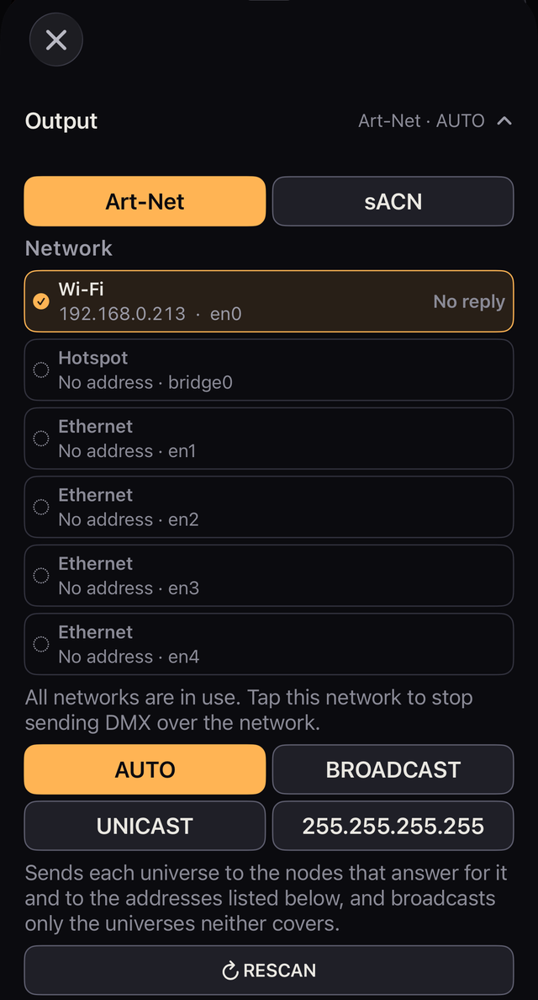
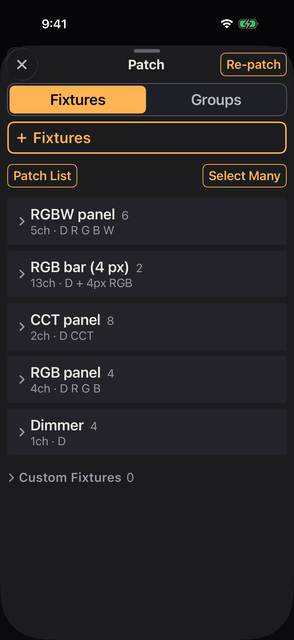
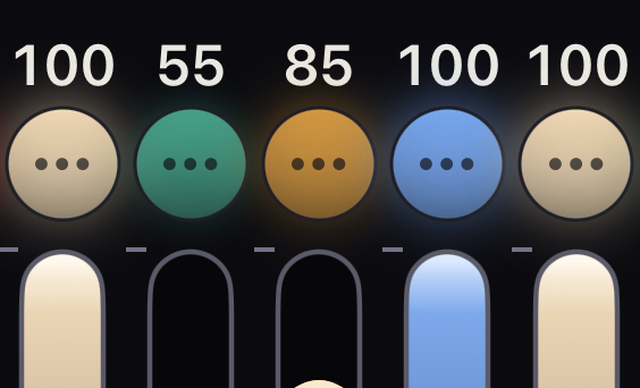
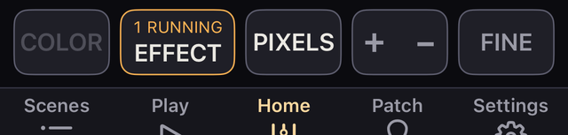
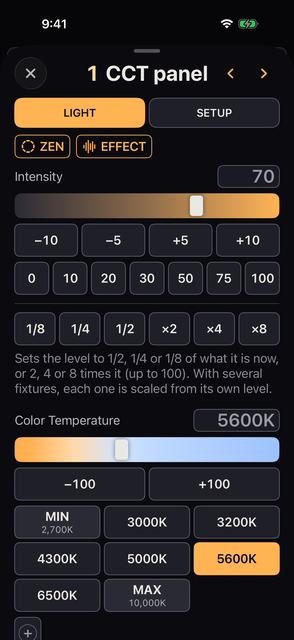
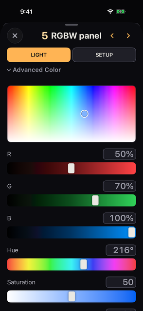
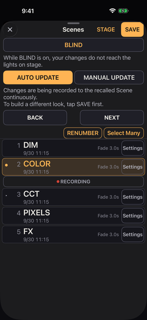

وحدة تحكم إضاءة للسينما والتلفزيون، مصنوعة للـ iPhone. تحكّم بوحدات الإضاءة عبر Art-Net وsACN وCRMX، ومعك اللون وScenes والمؤثّرات والتشخيص في جيبك.
الجديد ・ المسرد ・ آخر تحديث 2026-11-12 ・ جرى التحقق على 1.0 build 375
أهم التغييرات في كل إصدار، الأحدث أولاً. ولكل فصل تفاصيله.
تُختبر هذه التغييرات في TestFlight. وقد تتغير قبل الإصدار.
Lite 1 وBack 1 وVibe 1، وتكون له أزرار التشغيل والإيقاف المؤقت وإعادة التشغيل من البداية.1 THRU 5 AT 0 THRU 100 THRU 0 يعطي 0 و50 و100 و50 و0 (الفصل 08).Items. وتتوقف درجة حرارة اللون أيضاً عند 3200 K و5600 K. وتسرد الشاشة القيم المُرسلة، ويمرّ ‹ / › على الخطوة عنصراً عنصراً. وتحصل الوحدات ذات المصابيح على STRIKE LAMP (الفصل 06).Use Test Mode من Settings وSlide to test من أعلى اللوحة. اختر الوحدات تحت TEST MODE في أسفل SETUP تماماً في لوحة وحدة، أو تحت TEST MODE في Settings، وابدأ بـ START TEST (الفصل 06).Use Test Mode تحت TEST MODE في Settings، فيشغّل Slide to test في لوحة وحدة فحصاً لدرجة حرارة اللون واللون والغوبو وحركة الرأس وغيرها، مبنياً لكل طراز. ويعيد EXIT الضوء الذي كان قبل الفحص (الفصل 06).@ الآن AT. ويمكن كتابة GROUP 1 THRU 3 و. 3 (بكسلات الوحدات المحددة الآن) و1 + 2 + 3 AT EFFECT. ويعرض سطر SELECTED تحت ما تكتبه التحديد الحالي. وبعد ENTER يرسل قيمة، يُلغى التحديد (الفصل 08).CMD من صف Play (الفصل 08).FIXTURE. وFIXTURE 5 مثل 5، ويمتزج مع المجموعات، كما في GROUP 2 + FIXTURE 5 (الفصل 08).CMD في صف Play واكتب أرقام الوحدات لتحديدها: 1 THRU 50 − 25 و@ 50 و@ + 10 و@ 0 THRU 100 و@ 5600 K وGROUP 2 وSTORE GROUP 4 وSCENE 5 وغيرها. وقبل ENTER يقول سطر واحد ما سيحدث (الفصل 08).عند فتح Kanau لأول مرة يكون طقم تدريب من 4 وحدات إضاءة مسجّلاً مسبقاً. لا تحتاج إلى أي وحدة إضاءة لتجرّب الخطوات الثلاث أدناه. تستغرق نحو ثلاث دقائق.
أسماء الأزرار مكتوبة تماماً كما تظهر على الشاشة.
GM في أعلى يمين الشاشة (وGM 100 على iPad). في اللوحة التي تفتح، اسحب الـ fader GRAND في أقصى اليمين إلى أسفل، فتخفت الإضاءة كلها. يحمرّ الشريط في أعلى الشاشة وتحمرّ حافة الشاشة.BACK TO 100 لتعيد السطوع، ثم أغلق اللوحة بالزر × في أعلى اليسار.الـ fader يستجيب لـ المسافة التي يقطعها إصبعك، لا للموضع الذي لمسته. نقطة البداية لا تغيّر النتيجة.
Intensity السطوع؛ ويضبط منتقي اللون وأشرطة R وG وB اللون. والوحدة التي لها حرارة لونية تعرض أيضاً Color Temperature.تعتمد البنود في اللوحة على إمكانات الوحدة.
Scenes في الأسفل. فيه أربعة Scenes: DIM وCOLOR وPIXELS وFX.Play في الأسفل، ثم PLAY في القائمة التي تفتح. يتحول الصف السفلي إلى BACK وNEXT، فتتنقل بين الـ Scenes وأنت تراقب Home. ويعيد EXIT التبويبات.في الإعداد الذي يبدأ به التطبيق (AUTO UPDATE)، يؤدي تغيير الشدة أو اللون بعد الاستدعاء إلى إعادة كتابة ذلك الـ Scene. وللإبقاء على الـ Scene كما هو، راجع الفصل 08.
حتى بدون أي وحدة إضاءة موصولة، يمكنك رؤية قيم DMX التي يرسلها Kanau.
OUTPUT OFF في أعلى اليسار. يفتح تحته صف Slide to send.Settings ← DMX Monitor. يعرض الأرقام التي يرسلها Kanau فعلاً.تتغيّر الأرقام في DMX Monitor فور تحريك أحد الـ fader.
الوحدات التجريبية مسجّلة على U1 من العنوان 1. لا تبدأ إرسال العرض التجريبي على شبكة تصل إلى وحدات إضاءة حقيقية.
يضم العرض التجريبي الذي تحصل عليه عند أول تشغيل ما يلي.
ولا واحدة من هذه الوحدات تمثّل منتجاً حقيقياً. هي موجودة لتجرّب أدوات التحكم وتراقب تغيّر القيم في DMX Monitor.
بعد أن يتضح العرض التجريبي، انتقل إلى معداتك أنت.
OUTPUT OFF كما هو وأنشئ عرضاً جديداً عبر Settings ← Shows ← New Show. الوحدات التجريبية مسجّلة على U1 من العنوان 1، فإرسال العرض التجريبي قد يصل إلى وحدات الإضاءة في الموقع.Patch ← ＋ Fixtures ← Add New Fixture، ثم اضبط الطراز ووضع DMX والكون والعنوان. اجعلها مطابقة لإعدادات الوحدة نفسها (الفصل 03).Settings ← Output تأكد أن Nodes Answering يساوي 1 أو أكثر. المعدات التي لا تردّ على الاستطلاع تبقى على 0 وهي تستقبل بشكل طبيعي. فإن بقي عندك على 0 فتابع رغم ذلك، واحكم من وحدة الإضاءة نفسها.Settings ← Output (الأكوان التي ستخرج). ثم المس OUTPUT OFF في أعلى يسار Home واسحب المقبض الدائري إلى أقصى اليمين. وعندما يبدأ الإرسال يعرض Network Output في Settings ← Output رقماً (الفصل 02).Scenes لتخزين الحالة (الفصل 08).طقم التدريب عرض عادي. بعد أن تسجّل وحداتك يمكنك حذف العرض التجريبي.
OUTPUT OFF في أعلى اليسار واسحب المقبض الدائري. ولإيقاف الإرسال المس المكان نفسه واسحب المقبض في Slide to stop. وعندما ترسل وحدة تحكم أخرى على الكون نفسه سترى Blocked أو SHARED (الفصل 02).الوحدة التي عليها Lock لا تنطفئ عند ضغط B.O.، ولا تنطفئ عند إنزال الماستر العام إلى الصفر. تأكد من أن الأقفال محلولة قبل التصوير. يظهر عدد ما يبقى مضاءً أثناء الإظلام بجوار 🔒 الخضراء في أعلى الشاشة.
أين يوجد كل شيء على شاشة Home. وتجد هنا أيضاً معنى كل لون وكل علامة.
قبل الجداول التفصيلية، هذه هي المواضع الوحيدة التي تحتاج إلى معرفتها.
| الموضع | ما يفعله |
|---|---|
| GM | السطوع العام، في أعلى الشاشة |
| Fixtures / Groups | يختار وحدات الإضاءة الظاهرة |
| Fader | يضبط الشدة |
| Scenes | يحفظ الحالات ويعيدها |
| Play | يفتح قائمة: PLAY، الذي يتنقل بين الـ Scenes (iPhone)، ثم COMMAND وZEN وSTAGE وFIXTURE SHEET |
| Patch | يسجّل وحدات الإضاءة |
| EFFECT | يطبّق المؤثّرات ويوقفها |
| Settings | الخرج والعروض وMIDI والجلسة |
كل ما دون ذلك تفصيل.
Home هو مكان العمل. لمس أحد التبويبات في الأسفل يفتح لوحة أو قائمة فوق Home.
Scenes وPatch وSettings: تفتح لوحة فوق Home.Play على iPhone: تفتح قائمة من PLAY وCOMMAND وZEN وSTAGE وFIXTURE SHEET. ولمس PLAY في القائمة لا يفتح لوحة؛ بل يحوّل الصف السفلي إلى صف Play.Play على iPad: يقع في العمود الذي على اليسار. ويفتح قائمة من COMMAND وZEN وSTAGE وFIXTURE SHEET. ولا يوجد PLAY.للعودة إلى Home، اسحب المقبض في أعلى اللوحة إلى أسفل، أو المس × في أعلى اليسار. واللوحة المفتوحة من داخل لوحة أخرى، مثل DMX Monitor، تحمل ‹ في أعلى اليسار بدلاً من ×. ولمس ‹ يرجع لوحة واحدة.
بعض الأمور تختلف بحسب الجهاز والحالة.
Patch على جهاز انضم إلى جلسة.| التبويب | فيمَ يُستعمل | انظر |
|---|---|---|
| Scenes | حفظ الحالات واستدعاؤها | الفصل 08 |
| Play | في iPhone يفتح قائمة من PLAY وCOMMAND وZEN وSTAGE وFIXTURE SHEET. ولمس PLAY يحوّل الصف السفلي إلى EXIT وUPDATE وBACK وNEXT. وفي iPad تضم القائمة COMMAND وZEN وSTAGE وFIXTURE SHEET | الفصل 03 و04 و08 |
| Home | ضبط الشدة عبر الـ fader | الفصل 04 |
| Patch | وحدات الإضاءة والعناوين والأوضاع والمجموعات | الفصل 03 |
| Settings | Kanau Free / Kanau Pro وخرج DMX والعروض وMIDI والجلسة وLITE MODE والتفضيلات | الفصلان 02 و03 والفصول 11–13 |
على يسار سطر الحالة حالة الإرسال. المسها لتفتح الصف الذي يبدأ الإرسال ويوقفه (الفصل 02). في كل مرة يُفتح فيها Kanau يقرأ OUTPUT OFF ولا يخرج شيء حتى تسحب.
وأثناء الإرسال يقرأ SENDING مع الأكوان، مثل SENDING U1 U2. وحيث لا يتّسع المكان يصير حرفاً واحداً للمسار: A لـ Art-Net وS لـ sACN.
والنقطة بجانبه تنبض أثناء الإرسال، وأثناء انتظار السحب، وأثناء LISTENING. أما Bluetooth فله نقطته واسمه.
وإلى جانبها اسم العرض المفتوح. وعلى هاتف ضيّق لا يبقى فيه فراغ في السطر، لا يظهر.
وما دام BLIND مشغّلاً يتحوّل هذا الجزء الأيسر كلّه إلى BLIND كهرماني. المسه لتخرج من BLIND (الفصل 08).
| المعروض | المعنى |
|---|---|
| OUTPUT OFF | لا إرسال منذ فُتح Kanau. المسه لتفتح تحته صف Slide to send، ثم اسحب. وإذا غيّرت الحالة ولا شيء يُرسل، يحمرّ ويقرأ Not sent، ويبقى أحمر حتى تبدأ الإرسال |
| SENDING، بعد اللمس | يفتح Slide to stop. اسحب إلى اليمين لإيقاف الإرسال؛ فيعود السطر إلى OUTPUT OFF. ويغلق Done الصف |
| LISTENING | يتحقّق من وجود جهة إرسال أخرى قبل أن يرسل، لنحو ثانية |
| SENDING U1 U2 | هذه الأكوان تخرج. وU3 OFF الرمادي هنا يعني كوناً مسجّلة فيه وحدات ولم يُسحب لبدء الإرسال بعد. وهو ليس U1 OFF الأحمر الذي يأتي لاحقاً في السطر |
| Blocked U1 | توجد جهة إرسال أخرى على ذلك الكون أصلاً، فلا يرسل Kanau عليه. المسه لترى الخيارات (الفصل 02) |
| نقطة خضراء | يرسل |
| نقطة كهرمانية | تباطؤ، أو إعادة اتصال (Reconnecting…) |
| نقطة حمراء، ART-NET No node أو SACN No node | لا توجد عقدة تردّ. المسه ليفتح Settings ← Output. وما دام صف Play ظاهراً فلا يفتح، فالمس EXIT أولاً. ويُختصر اسم المسار على الشاشة الضيّقة |
| نقطة حمراء، ART-NET Blocked أو SACN Blocked | توقّف الإرسال لسبب لا ينحلّ من تلقاء نفسه. المسه ليفتح Settings ← Output، الذي يعرض السبب وما ينبغي فعله بالأحمر. ويُختصر اسم المسار وكلمة Blocked على الشاشة الضيّقة |
| نقطة رمادية، Idle | بدأ الإرسال لكن لا يخرج شيء. يظهر حين تكون كل الأكوان مطفأة أو حين لا توجد شبكة |
| SHARED مع عنوان IP أو اسم جهاز | وحدة تحكم أخرى ترسل إلى الكون نفسه. وهذه ما زالت ترسل أيضاً |
| JOINED أو WATCH ONLY، مع اسم | داخل جلسة. يخرج DMX من المضيف |
| FREE ×3 (أبيض) | كم وحدة FREE. يظهر من حين لآخر بدلاً من حالة الإرسال (الفصل 08) |
SENDING والنقطة الخضراء لا تثبتان أن وحدة الإضاءة استقبلت شيئاً. يشرح الفصل 02 كيف تتحقق من الاتصال، ويغطي الفصل 14 ما تفعله، عَرَضاً بعد عَرَض.
يحمل وسط السطر وطرفه الأيمن ما يلي. ويقع GM عند الطرف الأيمن من السطر، بعد SCREEN LOCK.
| البند | عند اللمس | عند الضغط المطوّل، أو ملاحظة |
|---|---|---|
| GM 100 | يفتح لوحة الماستر العام | اضغط مطوّلاً لإعداداته. تحت 100 يمتلئ بالأحمر وينبض |
| B.O. | يرفع الإظلام. وعند GM صفر يفتح لوحة GM بدلاً منه | يحل محل GM ما دامت الوحدة معتمة. ويظهر B.O. أيضاً حين يكون GM صفراً |
| U1 OFF (أحمر) | لا شيء | أي الأكوان مطفأة، بالأرقام. حتى ثلاثة، ثم + لما زاد. أعد تشغيلها من Settings ← Output |
| 🔒 n (أخضر) | لا شيء | ما يبقى مضاءً والوحدة معتمة: الوحدات المقفولة، والـ fader المضبوطة كمبدّل وهي على ON (حين يكون الماستر العام على 0)، والأقفال التي بقيت على عنوان قديم |
| BATTERY SAVE | يشغّله ويطفئه | اضغط مطوّلاً لضبط المقدار ومدة التلاشي. وما دام مشغّلاً يعرض من حين لآخر المقدار الحالي، مثل −50% |
| SCREEN LOCK | لا يقفل | اضغط مطوّلاً 0.5 ثانية لقفل الشاشة |
ملاحظات على الجدول:
| البند | كيف يُستعمل |
|---|---|
| Fixtures / Groups | يبدّل بين العرض حسب الطراز والعرض حسب المجموعة. وفي iPad يقع في سطر الحالة أعلى Home |
| 10 / 5 | عدد الـ fader في الصفحة. خمسة تجعل كلاً منها أعرض. وفي iPad يكون 30 / 20 / 15 (40 / 20 على شاشة 13 بوصة)، في سطر الحالة |
| HISTORY | يفتح قائمة الحالات السابقة، وفي رأسها UNDO ↓ وREDO ↑. وفي iPhone يقع عند الطرف الأيمن من صف Fixtures / Groups؛ وفي iPad يقع في سطر الحالة، على يسار GM مباشرة |
| أزرار الطراز والمجموعة | المس لعرض تلك الوحدات في Home. اضغط مطوّلاً لضبط اللون والشدة لها جميعاً. وما هو مكتوب على الزر موضّح تحت الجدول |
| CLEAR n | يلغي التحديد. لا تتغيّر وحدة الإضاءة |
| ‹ / › | ينقل بين الصفحات. وما دام ماستر FREE منخفضاً يعرض هذا الصف مستواه، مثل FREE ↓0 (الفصل 04) |
| الرقم | الشدة من 0 إلى 100. يظهر كبيراً في الأعلى أثناء السحب |
| أيقونة الوحدة الدائرية (…) | المس للتحديد. اضغط مطوّلاً لفتح لوحة تلك الوحدة |
| Fader | اسحب إلى أعلى وأسفل لضبط الشدة |
| اسم الطراز | يحدّد سلسلة من الطراز والوضع نفسيهما |
| زر الرقم | رقم وحدة الإضاءة. في وضع البيانو يغيّر الشدة أثناء الضغط |
| ⏻ | يطفئ الخرج ويشغّله مع الحفاظ على القيمة |
| COLOR | يضبط اللون والشدة للوحدات المحدّدة |
| EFFECT | يطبّق مؤثّراً على الوحدات المحدّدة. وبلا تحديد يفتح قائمة المؤثّرات العاملة |
| PIXELS | يفتح خلايا وحدات البكسل ويغلقها |
| صف Play | في iPhone، يظهر بعد لمس Play ← PLAY. ويعيد EXIT الأزرار المعتادة (الفصل 08) |
| ＋ − | يدوّر وضع البيانو: LOCK ← ＋ ← − |
| FINE | يدوّر الحساسية: عادي ← FINE (1/10) ← FINE+ (1/20) |
يحمل زر الطراز أو المجموعة ما يلي.
ولكل من COLOR وEFFECT وPIXELS شرطه الخاص.
| اللون أو العلامة | المعنى |
|---|---|
| كهرماني | محدّد، أو فعّال |
| أحمر | إظلام، أو ماستر عام منخفض، أو مشكلة شبكة، أو وضع البيانو. شيء يستحق النظر |
| أخضر | يرسل. Fixture Lock. BATTERY SAVE مشغّل |
| شريط أعلى الشاشة والحافة بالكهرماني | BLIND مشغّل. ما تفعله لا يصل إلى الوحدات |
| بنفسجي | الخرج مطفأ، أو الشاشة مقفولة |
| سماوي | يعمل عليه الجهاز الآخر في جلسة |
| برتقالي | عند حد ضبطته أنت |
| رمادي | غير متاح، أو متوقّف |
المس الأيقونة الدائرية لتحديد الوحدة؛ واضغط مطوّلاً لفتح لوحة الوحدة. تحمل الأيقونة لون وحدة الإضاءة وخرجها الحقيقي:
حافة الشاشة تُظهر أن الخرج مكبوح. وسطر الحالة يُظهر ما الذي يكبحه.
| الحافة | المعنى |
|---|---|
| حمراء، تنبض، ويدور عليها ضوء | الماستر العام دون 100 |
| حمراء أسمك وأغمق، والضوء أسرع | الماستر العام عند 0، أو إظلام |
| خضراء، ويسري عليها ضوء طويل ببطء | BATTERY SAVE مشغّل |
| حمراء وخضراء بالتناوب | الاثنان معاً: الأحمر نحو ست ثوانٍ، والأخضر نحو ثلاث ثوانٍ |
| إطار كهرماني، متصل بالشريط في الأعلى حيث الساعة | BLIND مشغّل. والماستر العام المنخفض ينبض بالأحمر فوق الإطار؛ ولا يظهر الأخضر |
إعداد الوصلة إلى معدات الإضاءة، والتأكد من وصول DMX إليها.

12345لا يبدأ Kanau الإرسال من تلقاء نفسه أبداً. في كل مرة يُفتح فيها يكون الخرج مطفأً ويقرأ سطر الحالة OUTPUT OFF؛ ويبقى الـ patch والوجهة والأكوان المطفأة كما هي. وتحريك fader أو استدعاء Scene لا يبدأ الخرج أبداً.
وإذا تغيّر الضوء ولا شيء يُرسل، تحمرّ الحالة في أعلى يسار الشاشة وتقرأ OUTPUT OFF / Not sent، وتبقى حمراء حتى تبدأ الإرسال. وفي أول مرة تلمس فيها fader ولا شيء يُرسل، يحمرّ الصف فوق الـ faders ويقرأ Not sent / Slide OUTPUT to send، ثم يعود بعد ثانيتين من رفع إصبعك. ولا يظهر هذا الصف إلا مرة واحدة ما دام الخرج مطفأً. ولا يوجد اهتزاز.
حين تسحب، يصغي Kanau أولاً لنحو ثانية بحثاً عن مرسِل آخر. ثم يرسل كل كون مسجّل ومشغّل ليس عليه مرسِل آخر، باستمرار. والمعدل عادة 44 Hz. ويتّصل Bluetooth حين تسحب، لا عند التشغيل.
لإيقاف الإرسال، المس سطر الحالة واسحب Slide to stop إلى اليمين. فيعود إلى OUTPUT OFF.
ويعود الخرج أيضاً إلى الإطفاء، ويلزمك أن تسحب من جديد، حين:
والكون الذي يُضاف إلى الـ patch لاحقاً يبقى مطفأً حتى تسحب، ويعرضه سطر الحالة، مثلاً، بصيغة U3 OFF. ويتوقّف الخرج ما دام Kanau ليس على الشاشة، ويعود حين ترجع؛ ولا يوقفه SCREEN LOCK.
اقرأ هذه بالترتيب. كل منها يخبرك بشيء مختلف، ولا يستطيع أي منها أن يقول لك إن وحدة الإضاءة نفسها استقبلت البيانات.
| أين | ما يخبرك به |
|---|---|
| النقطة على سطر الحالة | Kanau يرسل، أو على وشك أن يرسل (الفصل 01) |
| Network Output في Settings ← Output | كم حزمة خرجت عبر الشبكة في الثانية الأخيرة. رقم بالحزم في الثانية يعني أن Kanau يرسل؛ وNothing تعني أنه لا يرسل |
| Nodes Answering في Settings ← Output | أي العقد ردّت على Kanau. والمعدات التي لا تردّ على الاستطلاع تُظهر 0 وهي تستقبل |
| Settings ← DMX Monitor | القيم التي يرسلها Kanau، قناة بقناة |
Art-Net وsACN متعارضان: اختر واحداً. ويعمل CRMX عبر Bluetooth إلى جانب أي منهما.
يسرد Network اتصالات Wi-Fi وEthernet وHotspot مع عناوينها وعدد العقد التي ردّت على كل منها.
إن كنت تستعمل السلك وWi-Fi معاً فتأكد من ظهورهما كليهما في القائمة.
| الإعداد | إلى أين يرسل | متى تستعمله |
|---|---|---|
| AUTO (Art-Net) | إلى العقد التي ردّت؛ وبث حين لا تردّ أي عقدة | الخيار المعتاد |
| BROADCAST (Art-Net) | كل إطار إلى الشبكة الفرعية لكل شبكة | حين تبلّغ عقدة عن عنوان خاطئ ولا يصل شيء مع AUTO |
| UNICAST | مباشرة إلى العناوين التي تدخلها | حين لا يصل البث إلى العقدة، أو حين تريد تسمية الهدف |
| 255.255.255.255 (Art-Net) | بث على المقطع. لا يعبر الموجّه | حين لا تتوافق العنونة ويفشل البث العادي. قد يحجبه iOS |
| MULTICAST (sACN) | عنوان البث المتعدّد لكل كون | الافتراضي في sACN |
مع AUTO تتوقف وجهة كل كون على ما تردّ به العقد.
وحين تبدأ عقدة بالرد عن كون كان يُبثّ، يذهب ذلك الكون من حينها إلى العقد التي تردّ فقط. ويقول ذلك إشعار كهرماني في Home. والمعدات التي لا تردّ تحتاج حينئذ إلى كتابة عنوانها في القائمة.
مع UNICAST اكتب عنوان العقدة والمس Add. وتظهر القائمة نفسها تحت AUTO للمعدات التي لا تردّ على الاستطلاع.
ومع UNICAST ومن دون أي تحديد يظهر سطر أحمر: No node IP is switched on or entered. No DMX is going out over the network.
إن كان Nodes Answering يساوي 1 أو أكثر مع AUTO لكن وحدة إضاءة لا تستجيب، فتحقق مما إذا كانت العقدة تبلّغ عن عنوان خاطئ لنفسها. انظر إلى Destination وجرّب BROADCAST. ويغطي الفصل 14 الأسباب الأخرى.
لمس RESCAN تحت Art-Net يحدّث قائمة العقد. استعمله بعد إضافة معدات أو إزالتها أو تغيير عنوان. ومن دون ذلك تظهر العقدة الجديدة خلال 3 ثوانٍ تقريباً. وتختفي العقدة المرفوعة بعد نحو 10 ثانية.
يستمر الإرسال أثناء البحث. ويقيس RESCAN أيضاً زمن الذهاب والإياب إلى كل عقدة ترد. ولا يتاح RESCAN من دون شبكة صالحة.
في Settings ← Output يقول سطر أحمر ما الذي أوقف الخرج وما ينبغي فعله. ويقول أشياء مثل هذه.
ولـ CRMX سطر خاصّ به. وتبقى صياغة وحدة التحكم نفسها بين قوسين في الآخر، فتُنقل كما هي.
يسرد Universes كل كون مسجّل مع عدد وحداته وكم منها مضاء ومفتاح ON/OFF. والكون المطفأ OFF يقرأ Not sending، وكذلك الكون الذي لم يُسحب منذ تسجيله.
OFF يوقف إرسال ذلك الكون. فلا يخرج منه شيء عبر Art-Net ولا sACN، وعبر Bluetooth يبقى الاتصال قائماً لكن لا يُكتب شيء. وقد يحتفظ المستقبِل بآخر قيمه، فقد تبقى وحدة مضاءة. ويسمّي أعلى الشاشة الأكوان المطفأة، مثل U1 OFF.
استعمل Net / Sub / Uni فقط حين تطلب عقدتك Net / Sub-Net / Universe بدل رقم واحد. شغّله في Settings ← Output ← Art-Net ← Net / Sub / Uni. والعلاقة هي Net × 256 + Sub × 16 + Uni.
ومع تشغيله وكون المسار Art-Net، يأخذ التوزيع الكون بالطريقة نفسها.
أولوية sACN يمكن أن تكون 0 أو 100 أو 200. والافتراضي 100، وهي الأولوية التي يرسلها Kanau مع خرج sACN.
يحمل المرسِل الذي تختاره الكون الذي يستعمله patch لديك (U1 حين يقع الـ patch في الكون 1). وفي المرة التالية يعيد تشغيل Bluetooth الوصل بالمرسِل نفسه، بعد أن تسحب للإرسال. وحين يتعذّر على مرسِل الاتصال أو ينقطع، يقول Settings ← Output ما الذي تتحقّق منه، مع رسالة النظام نفسه بين قوسين.
connected لمرسِل موصول وsending لمرسِل يستقبل البيانات.حين يخرج الكون نفسه عبر الشبكة وBluetooth معاً، يقول Settings ← Output ذلك: U1: network and Bluetooth output are both on. وهذا تقرير لواقعة، لا تحذير.
مستقبِل CRMX يأخذ خرج المرسِل الموصول به. واختيار U1 نفسه في Kanau لا يُطعِم وحدةً واحدة مرّتين من تلقاء نفسه.
ولا يقع الوميض إلّا حيث تستقبل وحدةٌ فعلاً من المسارين. فأوقف أحدهما هناك.
إن ظل مرسِل يرفض استقبال Art-Net بعد إطفائك Bluetooth، فتحقق من الإعدادات الخاصة بالمرسِل نفسه.
| المعروض | ما يعنيه وما تفعله |
|---|---|
| Blocked U1 | حين سحبت كانت وحدة تحكم أخرى ترسل Art-Net على U1 أصلاً، فلا يرسل Kanau عليه. المسه لترى الخيارات أدناه. ولا يمكنك تجاوز جهة الإرسال الأخرى |
| SHARED + IP أو اسم جهاز | ظهرت وحدة تحكم أخرى بعد بدء هذه. يستمر الإرسال، فأوقف إحداهما إن لزم |
لمس Blocked U1 يفتح صفاً يسمّي جهة الإرسال، مثل U1 In Use، مع هذه الخيارات:
| الخيار | ما يفعله |
|---|---|
| Join | يظهر حين تكون جهة الإرسال مضيف Kanau. يفتح Session لتنضم إليه |
| Send U2 Only | يظهر حين تكون هناك أكوان أخرى حرة. يرسل عليها وحدها |
| Cancel | يغلق الصف دون إرسال |
تُخبر أجهزة Kanau بعضها بعضاً بالأكوان التي ترسلها، فلا يرسل جهازان يسحبان معاً كلاهما. وتظهر جهة إرسال sACN بالأحمر في صف الإرسال، باسمها أو بعنوان IP. وهذا للإعلام فقط: الكون ليس Blocked، ويواصل Kanau الإرسال. وقد لا تُكتشف من هنا جهات الإرسال unicast وBluetooth في تطبيقات أخرى.
يحوّل LITE MODE هذا الـ iPhone أو الـ iPad إلى وحدة إضاءة تقودها وحدة تحكم أخرى عبر Art-Net أو sACN. ولا يُعرض ما دام BLIND مشغّلاً.
الأوضاع التي تختار منها في الخطوة 2 هي 1: BACK LIGHT ONLY 1ch وتلك الموجودة في هذا الجدول.
| RGB | HUE SAT |
|---|---|
| 2: SCREEN RGB 9ch | 3: SCREEN HUE SAT 8ch |
| 4: SCREEN 2 CELLS RGB 17ch | 5: SCREEN 2 CELLS HUE SAT 15ch |
| 6: SCREEN 4 CELLS RGB 31ch | 7: SCREEN 4 CELLS HUE SAT 27ch |
| 8: SCREEN 8 CELLS RGB 59ch | 9: SCREEN 8 CELLS HUE SAT 51ch |
| 10: SCREEN 4 STRIPS RGB 31ch | 11: SCREEN 4 STRIPS HUE SAT 27ch |
| 12: SCREEN 8 STRIPS RGB 59ch | 13: SCREEN 8 STRIPS HUE SAT 51ch |
| 14: SCREEN FX & MEDIA RGB 18ch | 15: SCREEN FX & MEDIA HUE SAT 17ch |
| 16: SCREEN COOKIE RGB 62ch | 17: SCREEN COOKIE HUE SAT 54ch |
| 18: ULTIMATE RGB 72ch | 19: ULTIMATE HUE SAT 64ch |
تقرأ الشاشة WAITING حتى تصل أول بيانات، ثم تتلوّن باللون الذي تتلقّاه؛ وإن انقطعت البيانات احتفظت بآخر لون.
يستخدم BACK LIGHT ONLY الضوء الذي في ظهر الجهاز وحده، بقناة واحدة هي Back Light. وتبقى الشاشة معتمة.
تبدأ الأوضاع الأخرى بـ Screen Dimmer وتنتهي بـ Back Light وVibration. وما بينهما يتوقف على الوضع.
تعمل كل قناة على النحو التالي.
المس Media لتفتح قائمة بالأرقام من 1 إلى 51 التي تحفظ الصور ومقاطع الفيديو.
وتبقى الملفات على هذا الجهاز.
وفي وحدة التحكم الأخرى سجّله باسم Kanau Lite (الفصل 03). وفي Art-Net يردّ على الاستطلاع باسم Kanau Lite، فيظهر تحت هذا الاسم في قائمة العقد في وحدة التحكم الأخرى.
للخروج، اسحب المفتاح الذي في أعلى يمين الشاشة إلى الجانب الآخر، ثم المس الـ × الذي يظهر. وما دام LITE MODE مشغّلاً لا يرسل هذا الجهاز DMX، ويكون MIDI مطفأً، وتكون الشاشة بأقصى سطوع ولا تقفل نفسها، ويغادر الضيف جلسته. وعند الخروج يعود السطوع وMIDI إلى ما كانا عليه، ويعود الخرج مطفأً.
Kanau Lite تطبيق مستقل ومجاني يحوّل الجهاز إلى وحدة إضاءة بالطريقة نفسها. وقيم كل قناة من قنوات FX & MEDIA وCOOKIE وULTIMATE، وما يختلف فيه Kanau Lite عن LITE MODE، تجدها في صفحة Kanau Lite.
النصف السفلي من Output موجود ليريك أين توقّفت الأمور. وليس مجموعة إعدادات. وحين يكون الخرج بطيئاً أو غائباً فاقرأه من الأعلى (الفصل 14).
| البند | كيف تقرأه |
|---|---|
| Destination | إلى أين يذهب فعلاً. ↦ بعد عنوان تعني إرسالاً أحادياً إلى عقدة ردّت |
| Medium | الاتصالات المستعملة، مثل Wi-Fi + Ethernet |
| Network Output | الحزم المرسلة عبر الشبكة في الثانية الأخيرة. ولا يُحسب Bluetooth هنا (انظر تحت الجدول) |
| Clock | أسوأ فجوة بين إرسالين. نحو 23 ms هو الطبيعي. وفوق 100 ms يشير إلى الهاتف |
| Touch → DMX | من إصبعك إلى الحزمة. نحو 25 ms هو الطبيعي |
| Nodes Answering | كم عقدة ردّت، مع الاسم والعنوان والاتصال وزمن الذهاب والإياب (انظر تحت الجدول) |
| Type these into the node | قيم Net / Sub / Uni التي تُدخلها في العقدة، حين يكون ذلك العرض مشغّلاً |
ملاحظات على الجدول:
هذه تضيّق دائرة المشكلة، ولا تثبت النجاح. فهي ما أرسله Kanau، أما هل استقبلته وحدة الإضاءة فلا يُرى من هنا. فقد يعرض Network Output رقماً بينما يبقي خطأ في المطابقة أو عطل في الطرف الآخر وحدات الإضاءة مطفأة. والمعدات التي لا تردّ على الاستطلاع تُظهر 0 في Nodes Answering حتى وهي تستقبل.
يعرض Settings ← DMX Monitor قنوات كل كون الـ 512 كما تخرج. ويتحدّث 10 مرات في الثانية. والاطّلاع عليه لا يؤثّر في الإرسال. والكون الذي لا يخرج، لأنه مطفأ OFF أو لأنه لم يُفتح بالسحب بعد، يعرض عنوانه مع OFF ومن دون قيم.
لا تعرض الخانات إلا القيم؛ ولا يمكن كتابة شيء هنا. ويظهر القفل الذي حُذفت وحدته فوق الشبكة، ومعه UNLOCK.
وتُقرأ القيم نسبةً مئوية أو رقماً خاماً من DMX، على الإعداد نفسه المتّبع في بقية وحدة التحكم.
ومع أكثر من كون واحد تظهر قائمة منسدلة Universe بجانب زر الوحدة. واختيار كون منها يفتحه ويقفز إلى بدايته.
ويمكن طيّ كل كون على حدة. ويظل العنوان المطوي يعرض عدد القنوات الفاعلة، فترى أيّها يعمل دون أن تفتحه.
↑ المحتوياتسجّل وحدات الإضاءة التي تستعملها، واضبط الطراز ووضع DMX والكون والعنوان والرقم والمجموعات.
تُضبط الشدة واللون في Home (الفصل 04 و05).

في أعلى Patch يبدّل Fixtures | Groups بين الوحدات والمجموعات. ويبقى ＋ Fixtures و＋ Group دائماً في أعلى جانبيهما. وفي iPad، حيث لـ Patch عمودان، يظهر الجانبان معاً.
في أغلب الأحيان يكفي أن تضبط Manufacturer وFixture وMode وHow Many وUniverse / Address.
| الحقل | ما هو |
|---|---|
| Favorites | حيث تُعلَّم الأوضاع والمصنّعون بنجمة. المس ★ لإضافة عنصر مفضّل أو إزالته (انظر تحت الجدول) |
| Name | اسم هذه الوحدة وحدها. ويظهر في Patch وفي Patch List. افتراضياً الاسم الكامل للطراز مع رقم متسلسل، مثل Titan Tube 1. أما الاسم تحت الـ fader فمنفصل (انظر تحت الجدول) |
| Number / How Many | رقم الوحدة (أي Fixture Number الخاص بها)، وعدد ما تضيفه، حتى 4,096. اترك الرقم فارغاً فتُرقَّم الوحدات تلقائياً، بدءاً من أعلى رقم مستعمل زائد واحد |
| Label | الاسم المعروض الذي تشترك فيه كل وحدات ذلك الطراز في الوضع نفسه. ويظهر تحت الـ fader. افتراضياً اسم الطراز الرسمي (انظر تحت الجدول) |
| Universe / Address | الكون وعنوان البداية. افتراضياً U1 وأول عنوان حر. و U0 مسموح (انظر تحت الجدول) |
| Gap | قنوات فارغة تُترك بين الوحدات. وملاحظة قصيرة بجانب الحقل تقول ذلك |
| BATTERY SAVE | يؤشّر الوحدات الجديدة لـ BATTERY SAVE |
| Label Color | خلفية الرقم. سبعة ألوان، أو بلا لون |
| Map | توزيع القنوات الـ 512. اسحب وأفلت لضبط عنوان البداية (انظر تحت الجدول) |
| TOGETHER / FILL GAPS | القائمة المنسدلة على يسار Add. تختار بها طريقة وضع الوحدات الجديدة (انظر تحت الجدول) |
ملاحظات على الجدول:
Free: 1 – 512 (512 ch). ويقرأ Does not fit بالكهرماني إن كانت الوحدات لن تتسع هناك، وFree: None إن لم يبقَ شيء حر.U46 · 2 / 512. واختيار كون منها ينقلك إليه، ويصير عنوان البداية أول مساحة حرة تسع كل الوحدات التي تضيفها.Does not fit.تبدأ كل وحدة بعد الأولى من عنوان بداية سابقتها زائد عدد قنوات الوضع وGap. ولا تتداخل العناوين.
(16 ch step).U1 1 → U1 203 (5 × 4 ch).بعدها تسرد لوحة ما دخل، سطراً لكل وحدة، برقمها واسمها وعنوانها. وفي رأسها سطر مثل Added 3 × Titan Tube — U1 1–15. وحين لا تكون الأماكن في مقطع واحد تُظهر اللوحة أول عنوان وآخره، مثل U1 1 → U1 203. وتبقى اللوحة حتى تلمس OK، فيمكنك متابعة التركيب ثم قراءتها لاحقاً.
ويسرد Patched، تحت النموذج، الطرازات المسجّلة أصلاً. المس صفاً لفتح النموذج وقد ملئ بذلك الطراز ووضعه.
للوحدة رقم واحد فقط، هو Fixture Number الخاص بها. وأزرار الأرقام في Home، وعنوان اللوحة، وFixture Sheet، والـ Labels، وإدخال الأوامر (الفصل 08) كلها تستعمل الرقم نفسه.
الرقم لا يكون فارغاً أبداً. فالوحدة التي سُجّلت والرقم متروك فارغاً، والوحدة التي تمحو رقمها، والوحدة في عرض قديم بلا رقم، تُرقَّم كلها بدءاً من أعلى رقم مستعمل زائد واحد، بثلاث خانات مثل 001. ولا تُملأ الفجوات. وإعطاء وحدتين الرقم نفسه يرفع تحذيراً لكنه مسموح.
تأتي هذه النسخة بـ 61 مصنّعاً و1,062 وحدة إضاءة و15,454 وضعاً. ولما ليس في المكتبة استعمل تعريفات Generic أو Custom Fixtures.
ثلاثة مصنّعين في القائمة ليسوا صانعي إضاءة:
| المصنّع | ما يضمه |
|---|---|
| Generic | Dimmer وDimmer 16-bit وBi-color وCCT وRGB وRGBW وDimmer + RGB وDimmer + RGBW |
| Tungsten | 40 وحدة إضاءة بقناة واحدة تخفت دافئة وتُشغَّل عبر dimmer (انظر تحت الجدول) |
| Kanau | Kanau Lite، جهاز في LITE MODE (الفصل 02؛ انظر تحت الجدول) |
ملاحظات على الجدول:
وهناك أيضاً الأنواع التالية من الأوضاع.
يسرد Patched الوحدات حسب الطراز والوضع. المس عنواناً لطيّه.
U1 1–9 حين تتصل، أو الأول والأخير، مثل U1 1 → U1 203، حين لا تتصل.يعرض Patch List، تحت عنوان Patched، كل الوحدات المسجّلة بترتيب العناوين، كوناً بعد كون. وهو موجود لتقرأه وأنت تضبط العناوين على الوحدات نفسها؛ ولا يمكن تغيير شيء فيه.
تشير ⚠ إلى أي من هذه.
ويستمر الإرسال أثناء ظهورها، فتحقق من الإعدادات.
وn fixture data problems تشير إلى أعطال وُجدت أثناء تحميل بيانات وحدات الإضاءة. المسها للتفصيل.
العمل في قائمة Patched لا يغيّر الوحدات التي يعرضها Home.
كلاهما في Settings، تحت DMX Monitor. ويفتح Fixture Sheet أيضاً من FIXTURE SHEET في قائمة Play. وفتح أي منهما لا يغيّر العرض. ولا يتوفر Fixture Sheet على جهاز انضم إلى جلسة، ولا ما دام BLIND مشغّلاً.
يعرض Fixture Sheet حال كل وحدة الآن، بترتيب All في Home: الرقم والاسم، والعنوان، والشدة، واللون، وأي مؤثّر جارٍ، وعلامات مثل LOCK وOFF. ولا يمكن تغيير شيء فيه.
تصنع Labels، في Settings تحت Fixture Sheet، ملصقات للوحدات في ملف PDF بمقاس A4، بترتيب العناوين.
وتحت المعاينة يقول Page 1 of 3 كم ورقة هناك، وينتقل ‹ › بينها. ويحفظه Export PDF.
المس Select Many واختر الوحدات. وعلامة ✓ في صف طراز تأخذ كل وحداته. وتُعلَّم الوحدة في الصف الذي لمسته فقط، لا في صفوفها الأخرى.
وتُظهر كل علامة ✓ الترتيب الذي اخترته به، بدءاً من 1. ويتبع التسمية والترقيم والعنونة ذلك الترتيب.
| الإجراء | ما يفعله |
|---|---|
| Select All / Select None | يأخذ كل شيء أو يفرغه، بما في ذلك الصفوف المطويّة |
| Name | يرقّم نهاية الاسم بترتيب تحديدك |
| Number | يضبط Fixture Number بترتيب تحديدك |
| Address | يعيد توزيعها من كون وعنوان بداية وفجوة |
| Battery | يؤشّرها لـ BATTERY SAVE أو يزيل التأشير |
| New group | يبني مجموعة من التحديد |
| Delete | يزيلها. تحقق من العدد قبل التأكيد |
حذف وحدة يزيل أيضاً شدتها ولونها وحدودها، ويخرجها من كل الـ Scenes. ويمكن لـ HISTORY التراجع عنه.
والحذف من داخل مجموعة يخرجها من تلك المجموعة فقط؛ وتبقى الوحدة نفسها. وإن صارت المجموعة بذلك فارغة، تُحذف المجموعة أيضاً، ويقول التأكيد ذلك.
لا تُعرض إلا المديات الواسعة بما يكفي. وتظهر الوحدات المتداخلة بالأحمر.
يضمّ Close Gaps، في أعلى يمين Re-patch، وحدات كون واحد بدءاً من العنوان 1، بترتيب العناوين. وتُضمّ كذلك الفجوات التي تركتها عمداً.
يبدأ اسم المجموعة الجديدة برقم يُعطى تلقائياً. هو أكبر بواحد من آخر مجموعة مرقّمة في ترتيب المجموعات (1 إن لم توجد أي مجموعة).
ويستدعي إدخال الأوامر المجموعة بهذا الرقم، كما في GROUP 3 (الفصل 08).
يمكن أن تكون الوحدة في عدة مجموعات. ولا تُنسخ: تعديلها من أي مجموعة يعدّل الوحدة نفسها. وإضافتها إلى مجموعة تُبقيها في All.
لمس اسم مجموعة يتيح ضبط الاسم ورؤية العدد ومدى العناوين والتوزيع، أو الحذف. ويضيف Edit Group وحدات إلى المجموعة، ويضم Fader Order لها تحت قائمة الوحدات (الفصل 04)؛ ويضع Add to an Existing Group التحديد الحالي في مجموعة عندك أصلاً.
Group Order، في الصف الذي تحت ＋ Group، يضبط ترتيب المجموعات. ويظهر متى وُجدت مجموعتان أو أكثر، ولا يظهر للضيف.
اسحب المقبض الذي على يمين الصف؛ فتتبع أزرار الطراز والمجموعة في Home وهذه القائمة الترتيب نفسه. وAll ليس في القائمة ويأتي أولاً دائماً. وكل حركة هي خطوة واحدة في HISTORY.
يسأل RENUMBER في Group Order أولاً السؤال Renumber Groups?. ثم يرقّم Renumber All كل مجموعة 1 و2 و3 وهكذا بترتيب القائمة.
ويوضع الرقم أمام الاسم ويحل محل أي رقم قديم. ولا يتغير الترتيب. وهو خطوة واحدة في HISTORY.
ظهور صف All في Patch من عدمه يُضبط في Settings ← Settings ← Display ← Groups ← Show the All Row.
يحفظ Custom Fixtures التعريفات التي تضيفها بنفسك. وهو في تبويب Patch، تحت ＋ Fixtures وقائمة الطُرُز. والتعريفات متاحة لكل العروض. وحذف تعريف لا يؤثّر في الوحدات المسجّلة منه سابقاً.
يفتح SAVE & PATCH شاشة التسجيل مع ذلك التعريف محدّداً. ويحفظ Remember on This Device تسجيل دخولك؛ ويزيله FORGET. وتبقى التعريفات التي جلبتها. ويذهب تسجيل دخولك إلى GDTF Share.
المس ＋ Import a GDTF File، ثم المسه مرة أخرى في اللوحة التي تُفتح، واختر ملف .gdtf، وتحقق من الوضع ومن تقرير الاستيراد، ثم احفظ. ولا حاجة إلى شبكة.
يسرد التقرير ما لم يمكن نقله. فالقيمة ذات 16 بت الموزّعة على عنوانين متباعدين تحتفظ ببايتها الخشن وحده، والعناوين غير المستعملة تُحفظ كفراغات، والقنوات على DMX break آخر تُسقَط. وحيث تتداخل العناوين تفوز القناة الأسبق. وتحتفظ الوظائف المجهولة بأسمائها الأصلية.
التعريف المؤشّر بـ Imported data is not verified. ينبغي التحقق منه أمام الوحدة الحقيقية. صحّح الأدوار الخاطئة عبر SAVE & EDIT؛ ويسري التصحيح على الوحدات التي تسجّلها بعد ذلك. وThis mode has no channels. تعني أنه ينبغي اختيار وضع آخر.
افتح ＋ Build by Hand وابدأ من أحد هذه.
أما Copy an Existing Fixture، في الشاشة نفسها، فيبدأ بدلاً من ذلك من وحدة في المكتبة (أدناه).
أعطِ كل قناة تسمية، واضبط الدور و8 أو 16 بت والقيمة الافتراضية والوحدة الواقعية حسب الحاجة.
ولكل قناة أيضاً Pixel: None أو رقم.
افتح ＋ Build by Hand ← Copy an Existing Fixture واختر Manufacturer وFixture وMode. وتُسمّى النسخة "… (Modified)" وتُسرد تحت MODIFIED في قائمة Manufacturer. ويتيح Duplicate and Edit تغيير الاسم ومدى درجة حرارة اللون (يظهر فقط حين توجد قناة CCT) وأدوار القنوات وأسماءها والتسميات والقيم الافتراضية. ولا يمكن تغيير عدد القنوات ولا توزيع الـ 16 بت ولا المديات ولا بنية التبديل.
يرسل Free العناوين 1–64 من Universe 1. ولا تُقيَّد أي ميزة، ولا حدّ لعدد الوحدات التي يمكنك تسجيلها في الـ patch. ويرسل Kanau Pro كل كون وكل عنوان.
يُظهر السطر الأعلى في Settings موقفك.
وعلى اليمين حالة مثل Free أو Monthly plan أو Lifetime purchase. المس السطر لتفتح شاشة شراء Kanau Pro.
يتوفر Kanau Pro بصيغتين: MONTHLY أو LIFETIME. وكلتاهما تفتح الأشياء نفسها.
وشراء LIFETIME وأنت تدفع MONTHLY لا يوقف الاشتراك. ألغِه من Manage Subscription. ويعيد Restore Purchases كلاً من MONTHLY وLIFETIME.
وما دمت على Free لا تُرسل الوحدات الواقعة خارج العناوين 1–64 ولا الوحدات التي تعبر العنوان 64. ويمكنك مع ذلك عمل patch لها، وتبيّن هذه العلامات ما لا يُرسل.
أما الضيف الذي يعرض الـ patch الخاص بالمضيف فلا تظهر له هذه العلامات.
↑ المحتوياتالـ fader في Home. هذا هو قلب Kanau.
يستجيب الـ fader لـ المسافة التي يقطعها إصبعك، لا للموضع الذي لمسته. ويمكنك قيادته من الرقم أو من الأيقونة الدائرية أو من الفراغ أسفل الـ fader. وقد صُنع هكذا لتعمل وأنت تنظر إلى الموقع لا إلى يدك.

يكبر المقبض قليلاً عند لمسه، ولا يتحرك شيء قبل أن تسحب مسافة قصيرة، فإراحة إصبعك عليه آمنة. وينطفئ الضوء الممتد على طول الـ fader حين يقرأ الرقم فوقه 0، فلا يبدو الـ fader عند 0 كأنه عند 1 أبداً. وإن كنت قد ضبطت حدوداً فإن الـ fader يتحرك داخلها.
وتأتي نقرة خفيفة في اللحظة التي يبلغ فيها الـ fader الذي تحرّكه حدّه الأعلى أو الأدنى، بما في ذلك حدّ ضبطته أنت؛ ولا تتكرر ما دمت باقياً هناك. ويفعل ZEN والماستر العام الشيء نفسه. أما الوحدة المقفولة، أو الضيف الذي لا يستطيع الكتابة، فلا يتلقى شيئاً.
أثناء السحب يظهر الرقم والاسم المعروض تحت الـ fader والقيمة بحجم كبير في أعلى الشاشة. وفي وحدة تحمل لوناً، تعرض القراءة أيضاً ما يلي.
G أو M مع رقم، متى خرج ميل الأخضر / الأرجواني عن الحيادويظهر اسم الجيلاتين ما دام اللون هو نفسه الذي ضبطته. واللون الذي يطابق جيلاتيناً مصادفةً فقط لا يُسمّى. أما الأبيض فيُسمّى من قيمته بالكلفن.
أما المعتّم البسيط فلا يعرض شيئاً من ذلك. وأما fader الخاصة بـ GRAND وFREE وماسترات المجموعات فلا يظهر لها عرض كبير أصلاً. اقرأ قيمتها من الرقم فوق كل fader.
| الإجراء | ما يحدث |
|---|---|
| لمسة قصيرة | يدوّر عادي ← FINE (1/10) ← FINE+ (1/20) ← عادي |
| ضغط مطوّل | الدرجة التالية أثناء الضغط. ويعود إلى العادي عند الإفلات |
التبديل في منتصف السحب لا يجعل القيمة تقفز. وFINE يسري أيضاً على القنوات الخام وعلى Pan وTilt.
حدّد أيقونتين دائريتين أو أكثر ثم اسحب أحد الـ fader. تتحرك كلها بالمقدار نفسه، محتفظة بالفروق بينها. وحين يبلغ أحدها حداً تتابع البقية. وتُستثنى الوحدات المقفولة.
في لوحة COLOR يحرّك أيضاً شريط Intensity وأزرار ± كل وحدة انطلاقاً من قيمتها هي، ويغيّر صف النِّسب كل وحدة انطلاقاً من مستواها هي. أما أزرار الأرقام 0–100 وكتابة قيمة فتضع كل الوحدات على القيمة نفسها (الفصل 05).
يضبط زر ＋ − في أسفل يمين الشاشة الوضع.
| الوضع | أثناء الضغط على زر رقم |
|---|---|
| LOCK (الافتراضي) | لا يتغيّر شيء |
| ＋ | يذهب إلى مستوى Piano ＋، وهو 100 افتراضياً. ولا يتجاوز أبداً الحد الأعلى للوحدة، ولا يُنزل أبداً وحدة هي أعلى منه أصلاً |
| − | يذهب إلى مستوى Piano −، وهو 0 افتراضياً. ولا ينزل أبداً تحت الحد الأدنى للوحدة، ولا يرفع أبداً وحدة هي أدنى منه أصلاً |
عند الإفلات يعود إلى ما كان عليه. ويمكنك الضغط على عدة أزرار معاً، أو التمرير جانبياً لعزفها بالتناوب. ولا تستجيب الوحدات المقفولة.
تصير الأزرار حمراء ما دام ＋ أو − مسلّحاً. وعند التشغيل يكون الوضع LOCK دائماً. ويُضبط المستويان في Settings ← Settings ← PIANO ← Piano ＋ وPiano −، لهذا الجهاز؛ وحين يختلف أحدهما عن 100 أو 0 يعرضه زر ＋ −، مثل ＋80 أو −20.
لمس ⏻ يطفئ خرج وحدة ويشغّله مع الحفاظ على القيمة. وتصير بنفسجية أثناء الإطفاء، ويبقى الرقم. وتحريك الـ fader والخرج مطفأ لا يضيء شيئاً.
واللمسة تتلاشى على مدى Power Fade. وPower Fade هو SNAP أو 0.5 أو 1 أو 1.5 أو 2 ثانية، والافتراضي 1.5. ويُضبط في Settings ← Settings ← Fade Times.
ON/OFF هو الافتراضي. وفي Power Switch الخاص بالوحدة يمكنك تغييره إلى FLASH ON أو FLASH OFF، وهما لا يدومان إلا أثناء الضغط، أو إلى NONE. ولا تستجيب الوحدات المقفولة.
يضم Power Switch أيضاً LOCK. وحين يُضبط عليه يشغّل الزر الذي في مكان ⏻ قفل تلك الوحدة ويطفئه. وهو الزر الوحيد الذي لا يوقفه القفل —— ولو أوقفه لما أمكن فتح قفل وحدة مقفولة من هنا أبداً.
شغّل Switch في لوحة الوحدة (الفصل 06) فيتحوّل الـ fader الخاص بها إلى مبدّل متأرجح بطول الـ fader كله. ON في الأعلى وOFF في الأسفل. وكل لمسة تبدّله لحظة الضغط.
وإن كان B.O. أو BATTERY SAVE يبقي خرجه منخفضاً، فإنه يبدو OFF أيضاً. يقرأ الرقم فوقه OFF، والوجه السفلي هو الصفيحة بحافة بنفسجية لـ B.O. أو خضراء لـ BATTERY SAVE، والوجه العلوي مسطح. وحين ينتهي ذلك الإبقاء يظهر ON من جديد، لأن ON أو OFF الخاص به لم يتغيّر قط.
والـ fader المضبوطة كمبدّل تعمل مع الوظائف الأخرى على النحو التالي.
لمس GM في الأعلى يفتح لوحة الماسترات. وGRAND، الماستر العام، في أقصى اليمين، وعلى يساره FREE وماسترات المجموعات (انظر القسم التالي). وتُغلق بالزر × في أعلى يسار الشاشة.
الضغط المطوّل على GM يفتح لوحة فيها 100 و75 و50 و25 و12.5 و B.O. وB.O. هناك يشغّل الإظلام؛ ولا يضع GM على الصفر. وفي iPad تضع اللوحة هذه الأزرار في عمود على اليسار، والـ fader في الوسط، وأزرار التلاشي في عمود على اليمين. وفي iPhone تكون في صف في الأعلى، وأزرار التلاشي في الأسفل، ويشغل الـ fader المساحة بينهما.
تلاشي هذه الأزرار هو Grand Master Fade: SNAP أو 0.5 أو 1 أو 1.5 أو 2 ثانية، في اللوحة التي تفتحها بالضغط المطوّل على GM وفي Settings ← Settings ← Fade Times. وكلاهما يضبط القيمة نفسها. والافتراضي SNAP.
ويبدأ التلاشي بلطف، وهو أسرع ما يكون في الوسط، ويستقر بلطف؛ والزمن هو زمن التلاشي كله. ولا يرى الضيف في الجلسة هذا الإعداد. وسحب الـ fader بالإصبع فوري دائماً.
الوحدة التي عليها Lock لا تستجيب لـ GM ولا لـ B.O. وتبقى مضاءة. ويظهر عدد ما يبقى مضاءً أثناء الإظلام، ومنه الوحدات المقفولة، بجوار 🔒 الخضراء في أعلى الشاشة.
في اللوحة التي تفتحها بلمس GM يقع FREE على يسار GRAND، وماسترات المجموعات على يسار FREE، بترتيب مجموعاتك. وبطاقات الأسماء حمراء لـ GRAND وكهرمانية لـ FREE وبيضاء للمجموعة (GROUP واسمها). وحين لا تتسع ماسترات المجموعات كلها يقلّب ‹ › تحت أقصى الماسترات يساراً الصفحات.
يضبط ماستر المجموعة شدة وحدات تلك المجموعة بالنسبة. والوحدة التي في مجموعتين تتبع الأدنى من الماسترين.
ويضبط fader الخاص بـ FREE الوحدات FREE (الفصل 08). وهو موجود حتى حين لا تكون أي وحدة FREE.
وفي iPhone تحمل اللوحة التي تفتحها بالضغط مطوّلاً على GM أيضاً ماسترات المجموعات على يمين fader الخاص بـ GM. ويوجد fader الخاص بـ FREE في تلك اللوحة حين تكون أي وحدة FREE أو ما دام ماستر FREE منخفضاً. وحين لا تتسع كلها يقلّب ‹ n/m › على الجانب الصفحات.
وما دام ماستر منخفضاً يظهر ما يلي.
يعرض Fixtures حسب الطراز والوضع؛ ويعرض Groups صف All والمجموعات التي بنيتها. المس اسماً للتبديل. ويظل كل fader لوحدة واحدة، حتى داخل مجموعة.
يبدأ الترتيب داخل All مجمّعاً حسب الطراز، ثم بترتيب التسجيل. وتبدأ المجموعة بالترتيب الذي بنيتها به. ويمكنك تغيير أي منها (انظر تغيير ترتيب الـ fader أدناه).
ينقل ‹ و› بين الصفحات. وفي الصفحة الأخيرة ينقل › إلى الصفحة الأولى من الطراز التالي؛ وفي الصفحة الأولى ينقل ‹ إلى الصفحة الأخيرة من الطراز السابق. وتحت Groups يبقيان داخل المجموعة ولا ينتقلان إلى المجموعة التالية. ويتوقفان عند الطرفين تماماً، ولا يدخلان All ولا يخرجان منه أبداً.
ويفعل تمرير الإصبع عبر الشريط الذي فيه ‹ و› الشيء نفسه. والتبديل بين 10 و5 يبقي الوحدة التي تعمل عليها في المشهد.
وما دمت تمسك fader فلا شيء من هذه — الأسماء، و‹ و›، و10 و5، وPIXELS أو PIANO — يغيّر ما في الصفحة. ولا يحرّك BACK وNEXT في Play الـ Scene أيضاً. بل يعطي الضغط على أحدها اهتزازاً تحذيرياً.
تسير الـ fader في Home وفق ترتيب يمكنك تغييره. ولكل صفحة ترتيبها الخاص: All وكل مجموعة وكل طراز. وما يتغير هو ترتيب الأعمدة فقط. أما الضوء والحدود والأقفال ورقم الوحدة فتبقى مع الوحدة.
هناك طريقان للدخول. الأول هو Fader Order في Patch. ويوجد Fader Order في هذه الأماكن.
ولا يظهر Fader Order للضيف، وتكون Patch مغلقة ما دام BLIND مشغّلاً.
يفتح Fader Order قائمة بالـ fader بالترتيب، بادئاً من الصفحة التي ضغطته فيها. وفي أعلاها عند اليسار ‹. وتختار قائمة في الأعلى All أو مجموعة أو طرازاً. ويعيد Reset Order بجانبها بناء الصفحة التي تعرضها القائمة، من الأسس نفسها التي لـ RESET ORDER أدناه.
يعرض كل صف ما يلي، من اليسار.
اضغط المقبض مطوّلاً واسحب الصف إلى الأعلى أو الأسفل: تتنحّى الصفوف المحيطة به، ويدخل حيث ترفع إصبعك. ويتحرك صف واحد في كل مرة.
ويدل خط كهرماني تحت صف على نهاية صفحة من Home، كل 10 أو 5 من الـ fader. وحين تكون الوحدة في الصفحة مفتوحاً لها PIXELS، تُرقّم القائمة الوحدات لا الـ fader، ولا تظهر خطوط كهرمانية.
والطريق الثاني أن يصير Home نفسه هو المحرّر. اضغط مطوّلاً على الشريط الذي فوق الـ fader، وفيه اسم الصفحة و‹ ›. يتحول الشريط إلى ‹ REORDER واسم الصفحة و[n/m] › وDONE. وتخفت الـ fader ولا تستجيب، فلمسها لا يغيّر أي سطوع.
اضغط مطوّلاً على عمود، من الأيقونة نزولاً إلى الـ fader، واسحبه جانباً: يحتفظ العمود بهيئته مع حافة خضراء رفيعة، ويتبع إصبعك. وتنزاح الأعمدة التي بينهما مكاناً واحداً لتفتح الموضع الذي سيدخل فيه. ويستقر هناك حين ترفع إصبعك. ويبقى العمود المرفوع داخل الأعمدة ولا يصل أبداً إلى الأزرار في الأسفل.
وما دمت ممسكاً به تصير أيقونته الدائرية خضراء وتعرض رقماً: المكان الذي سيشغله إن رفعت إصبعك الآن. ويُحسب الرقم عبر كل صفحات ذلك الزر (All أو مجموعة أو طراز)، برقم واحد لكل وحدة، كما في قائمة Fader Order.
ويمكن للعمود أن يعبر الصفحات.
تسري هذه القواعد عند قلب الصفحة.
ويظل ‹ و› والأزرار التي تختار الصفحة تعمل، وتتابع مع الصفحة التي ضغطتها لإعادة ترتيبها. وتنتقل الوحدة المفتوح لها PIXELS كتلة واحدة. ولا يبدأ إعادة الترتيب ما دام إصبع على fader، ويخبرك بذلك اهتزاز تحذيري.
وبدل الأزرار في الأسفل يوجد مفتاح واحد هو RESET ORDER. اضغطه واختر أساساً: Patch Order أو Fixture Number أو DMX أو Model (وصفحة الطراز ليس فيها Model).
وتُبنى الصفحة التي يُعاد ترتيبها من جديد فور اختيارك، خطوةً واحدة في HISTORY. والضغط على المفتاح وحده، أو Cancel، لا يغيّر شيئاً.
أثناء إعادة الترتيب يصير صف ⏻ في كل عمود زر مصباح. اضغطه فترسم تلك الوحدة قمة واحدة من السطوع، فترى على المسرح أي وحدة هي ذلك العمود. ولا يمسك صف ⏻ العمود.
ولا يغيّر الضغط على المصباح fader ولا ⏻ ولا Scene ولا HISTORY. والوحدات المقفلة، والوحدات في كون خرجه مطفأ، وكل شيء أثناء B.O.، لا تضيء. ويبقى GM وBATTERY SAVE ساريين. وعلى الضيف يضيئها المضيف.
المس DONE للإنهاء. وينتهي أيضاً عند خروجك من Home، وعند انتقال التطبيق إلى الخلفية، وعند صيرورتك ضيفاً، وعند دخولك BLIND أو خروجك منه. ويظل GM وBATTERY SAVE وSCREEN LOCK يعملان أثناءه.
الترتيب جزء من العرض: يُحفظ في ملف العرض، ويرى الضيف الترتيب نفسه. والنقلة الواحدة خطوة واحدة في HISTORY، تظهر باسم order.
ويستطيع تغيير الترتيب المضيف، والجهاز الذي يعمل وحده، والضيف المسموح له بالتحكم. وتُجرى نقلة الضيف على المضيف.
وتتبع مقابض MIDI ومفاتيح Switch N المواضع، فهي تتبع الترتيب الجديد. وكذلك اتجاه المؤثّر واتجاه PIXELS وصفوف Fixture Sheet.
العرض الذي ليس له ترتيب خاص يُفتح بترتيب Model. ويرتّب Fixture Number في Reset Order مرة واحدة، حين تختاره؛ وإعادة كتابة أرقام الوحدات بعد ذلك لا تعيد ترتيب الـ fader.

لمس PIXELS يفتح خلايا وحدات البكسل المحدَّدة في الصفحة، أو خلايا كل وحدات البكسل في الصفحة حين لا يكون شيء محدَّداً، على هيئة fader مستقلة. ولا يفتح وحدة في صفحة أخرى ولا يطويها أبداً. وتأتي الخلايا بعد fader الوحدة نفسها مباشرة بالمفاتيح .1 و.2 وهكذا، ولكل منها شدتها ولونها.
والمسه مرة أخرى لطيّها. وطيّ الوحدة يترك تحديد بكسلاتها.
وتحمل الوحدة ذات البكسلات الحرف P فوق قيمتها. أما الوحدة التي عُكس ترتيب بكسلاتها (الفصل 06) فتحمل R بدلاً منه، وتصطفّ الـ fader الخاصة ببكسلاتها في الاتجاه المعاكس: أوّلها هو آخر بكسل.
وتحديد خلية يفتح PIXELS لوحدتها. وتُحدَّد الوحدة كاملةً أو بالخلية، لا الاثنين معاً أبداً. والوحدة المحدَّدة كاملةً تُظهر حلقة باهتة على خلاياها، ولمس خلية واحدة يترك تلك الخلية وحدها.
وإذا حدّدت أكثر من خليّة تحرّكت معاً على fader واحد، تماماً كما تفعل الوحدات. وتحفظ كلّ خليّة مسافتها عن الأخريات، وتقف عند الطرف تلك التي تبلغه.
والـ fader الخاصة بالخلية هي النسبة المئوية التي تُخرجها الخلية من fader الوحدة نفسها (الأصل). وهي من 0 إلى 100، والخلية التي لم تلمسها عند 100. والضوء الخارج هو الأصل × الخلية ÷ 100.
وخفض الأصل لا يحرّك أرقام الخلايا ولا مقابضها. ويبلغ ملء شريط الخلية ارتفاع الضوء الخارج فعلاً، ويُعلَّم الجزء الذي يكبحه الأصل بالسهم ↓ الكهرماني نفسه الذي لماستر المجموعة. ورفع خلية والأصل عند 0 يتركها مطفأة: فالأصل لا يرتفع من تلقاء نفسه أبداً. حدّد الأصل وحرّكه، فتتغيّر كل خلاياه معاً.
CLEAR n يلغي التحديد فقط. ولا تُمَس القيم ولا المخارج.
المس ZEN في لوحة وحدة لتحصل على شاشة سوداء عليها fader كبير واحد وقيمته. وهو موجود للوحدات التي يمكن ضبط شدتها. ويفتح أيضاً من ZEN في قائمة Play (في نهاية هذا القسم).
ويفتح أيضاً على تحديد: أمسك دائرة، أو افتح COLOR، أو أمسك مفتاح طراز أو مجموعة. والاسم في الأسفل يقول ما بين يديك: 3 fixtures أو KEY · 8 fixtures.
ومع أكثر من وحدة يرفع الـ fader الواحد شكلاً من المستويات ويخفضه. والشكل هو مستوى كل وحدة والـ fader عند 100. خذ وحدتين عند 100 و50: عند رفعهما من 0 تسطع كلتاهما بالنسبة نفسها، وفي الأعلى تقفان عند 100 و50. ولا ترتفعان أكثر.
والرقم على الشاشة هو مقدار ما ارتفع من الشكل. والفتح وحده لا يغيّر شيئاً.
ويُحفظ الشكل. ويتحدد الرقم الذي تراه عند فتح ZEN على النحو التالي.
ويُحفظ شكل مجموعة ZEN في العرض. والذي يتحرّك هو الـ fader الخاص بكل وحدة، ولهذا تسجّله الـ Scene. وتقف كل واحدة داخل حدودها هي، ولا تتحرّك الوحدات المقفلة. وهذه قاعدة غير قاعدة شريط Intensity في لوحة COLOR (الفصل 05).
اسحب في أي موضع من الشاشة لتشغيله، بشكل نسبي كالعادة. وFINE، تحت TILT في أعلى يسار الشاشة، هو نفسه FINE في Home. المسه لتبديل FINE وFINE+ والإطفاء، أو أبقِ إصبعك عليه ما دمت تحتاجه.
ومع وحدة واحدة تحمل الإعداداتُ في أعلى يمين الشاشة الحدودَ وزاوية TILT وFIXTURE SETTINGS. ويفتح FIXTURE SETTINGS لوحة الوحدة على تبويب SETUP ويعود إلى ZEN عند إغلاقها. ومع أكثر من وحدة لا تكون هذه الإعدادات هناك.
والوحدة المضبوطة كـ Switch تُظهر مفتاحاً متأرجحاً بدل الـ fader: كل ضغطة تجعلها ON عند حدّها الأعلى أو OFF عند حدّها الأدنى.
والمخرج هو × في أعلى يسار الشاشة. لمس الشاشة لا يخرج، وتحريك الـ fader ثم الإفلات لا يخرج كذلك.
وTILT في أعلى يسار الشاشة يسلّم الـ fader إلى ميل الجهاز. وزاوية 0 AT في الإعدادات هي أسفل مداه، وزاوية 100 AT هي أعلاه. وهما 0 و100 إن لم تضع حدوداً، والحدود نفسها حيث وضعتها.
ويظلّ عاملاً بعد أن ترفع يدك، ويتابع اليد السريعة دون أن يتخلّف. ولا يمسك فوراً: بل ينتظر حتّى يبلغ الميلُ الارتفاعَ الذي يقف عليه الـ fader أصلاً، فلا يقفز شيء.
والجهاز المسطّح يقف عند 0°. و0 AT هي 0° أو 15° أو 30° أو 45°، و100 AT هي 90° أو 60° أو 45°، وتبدأ عند 0° و90°.
ويبقى بين الزاويتين 30° على الأقل، فلا يمكن الضغط على زوج متقارب أكثر من ذلك. ويُظهر رسم صغير بجانبهما المدى الذي اخترته. وكلما تقاربت الزاويتان قلّت الحركة اللازمة لبلوغ القمّة.
ويمكن أيضاً ضبط 0 AT و100 AT تحت ZEN TILT في Settings ← Settings. وهو الإعداد نفسه، فيظهر التغيير في أحد المكانين في الآخر أيضاً. وعند تحديد عدة وحدات اضبطه تحت ZEN TILT في Settings ← Settings.
وخفض الحافة العليا للجهاز تحت الأفقي يبقي الـ fader في القاع حتى يتجه الجهاز إلى الأسفل تمامًا. ومتابعة التدوير نحو وضع الشاشة إلى الأسفل ترفع الـ fader بقدر ما تدير، فيبلغ القمّة حين تكون الشاشة إلى الأسفل. ولا تقفز القيمة في أي وضع.
وبلوغ القمّة يعطي اهتزازة قصيرة، ويستمر الجهاز في الاهتزاز ما دام الـ fader باقيًا عندها. وبلوغ القاع يعطي اهتزازة قصيرة واحدة. وسحب الـ fader بالإصبع يوقف TILT، والخروج من ZEN كذلك.
+ FADER في أعلى يمين الشاشة يضيف fader آخر: حتى ثلاثة على iPhone وخمسة على iPad، بالأول معدوداً. ويفتح قائمة بـ Groups وFixtures؛ المس واحداً لإضافته كـ fader خاص به وإغلاق القائمة. والوحدة الموجودة أصلاً على fader آخر تظهر خافتة.
وتنقسم الشاشة إلى أعمدة، يُشغَّل كلّ منها وحده، بشكل نسبي كالعادة، ورقمه في الأعلى واسمه في الأسفل. وتُقرأ المجموعة هكذا KEY · 8 fixtures وتتبع القاعدة أعلاه. ولكلّ عمود ⚙ خاص به في الأسفل، فيه حدوده وFIXTURE SETTINGS، ومن العمود الثاني فصاعداً Remove fader.
ومع اثنين أو أكثر من الـ fader يختفي ⚙ في أعلى يمين الشاشة، ويُطفأ TILT ولا يظهر، ويحلّ FINE محلّه. وعند العودة إلى fader واحد يعودان كلاهما، مع TILT مطفأ.
يفتح ZEN في قائمة Play لوحة لاختيار ما يعمل عليه ZEN. وتضم اللوحة، من الأعلى، ما يلي.
All · 24، يضيّق القائمة إلى طراز واحد أو إلى مجموعة واحدة من Home. وإغلاق اللوحة يعيده إلى All.يصنع New Group مجموعة ZEN فارغة. ويضبط Edit في صف مجموعة ZEN اسمها والوحدات للـ fader الأول (①) والـ fader للثاني والثالث (② و③) (تُضاف بـ + FADER)، ويزيل Delete Group المجموعة. ويُحفظ ② و③ ويظهران كعمودين حين تفتح ZEN على تلك المجموعة.
↑ المحتوياتاللون والشدة لوحدة واحدة أو لعدة وحدات.
ما تراه يتوقّف على ما تملكه وحدة الإضاءة فعلاً. فمعتّم بقناة واحدة لا يعرض إلا Intensity. وKanau لا يعرض أدوات تحكم لا تملكها الوحدة.

| الطريقة | ما تعمل عليه |
|---|---|
| ضغط مطوّل على أيقونة وحدة | تلك الوحدة |
| ضغط مطوّل على أيقونة خلية | تلك الخلية |
| تحديد أيقونات دائرية ثم COLOR، أو الضغط مطوّلاً على إحدى الأيقونات المحدّدة | كل ما هو محدّد. الوحدة التي PIXELS مغلق عندها تُحسب كاملة؛ ومع فتح PIXELS تُحسب بكسلاتها — كلها حين تكون أيقونة الوحدة نفسها محدّدة، أو البكسلات التي حدّدت أيقوناتها فقط |
| ضغط مطوّل على زر طراز أو مجموعة | كل الوحدات فيه. وAll تعني كل الوحدات |
تمتد التبويبات في أعلى اللوحة: LIGHT وMOVE وGRADIENT وSETUP.
ولا يظهر MOVE وGRADIENT إلا لتحديد يمكنه استعمالهما. وحين تُرتَّب اللوحة في عمودين على iPad لا يوجد تبويب SETUP؛ والأسماء وإعدادات الوحدة في العمود الأيمن.
في اللوحة المفتوحة بالضغط مطوّلاً على أيقونة دائرية يتاح ما يلي.
ZEN (في LIGHT): يفتح fader واحداً كبيراً (الفصل 04).EFFECT (في LIGHT): يفتح مؤثّرات تلك الوحدة (الفصل 09).NEXT (في SETUP): يقع تحت عنوان Fade Time ويعرض قيمتي Delay وFade إلى الـ Scene التالي (الفصل 08).في iPhone، ليس SETUP تبويباً يبدّل المحتوى، بل اختصار إلى Settings التي تتبع في الأسفل. مرّر إلى ما بعد نهاية LIGHT أو MOVE أو GRADIENT فيتبعها عنوان Settings، وفيه الأسماء وFade Time وإعدادات الوحدة.
يظهر ‹ و› في اللوحتين التاليتين. ولا يظهران في لوحة خلية ولا في لوحة لعدة وحدات.
وينقلانك إلى الوحدة السابقة أو التالية ضمن نطاق Home الحالي (All أو طراز أو مجموعة)، عبر الصفحات، ويتوقفان عند الطرفين. ويبقى التبويب المفتوح، ويُثبَّت ما كتبته من Label أو Name أو رقم قبل الانتقال.
وتذكر لوحة التحديد تحت عنوانها ما تعمل عليه، مثل 3 بكسلات أو وحدتين. فيسري اللون وIntensity والحدود عندئذ على هذه وحدها، وتبقى البكسلات التي لم تحدّدها كما هي.
وأي تحديد يفتح COLOR، حتى مع وحدات بلا لون.
في iPhone يذكر سطر في أسفل اللوحة الـ Scene الذي تعمل فيه.
ويسجّل UPDATE هناك الحالة الحالية في ذلك الـ Scene، كما يفعل UPDATE في Scenes. ويمكن الضغط عليه حين يومض.
| البند | كيف يعمل |
|---|---|
| Intensity | من 0 إلى 100، بالمنزلق أو بالكتابة أو بزرّي ± أو بالقيم الجاهزة أو بمفاتيح النِّسب |
| درجة حرارة اللون (CCT) | بالكلفن، داخل مدى الوحدة |
| Green / Magenta | تصحيح الأخضر والأرجواني. ويعيده الزر 0 إلى الوضع المحايد |
| Crossfade | التوازن بين جانب الأبيض وجانب اللون. وأي الجانبين أيّهما يتوقّف على الوحدة |
| RGB والبواعث | R وG وB وW وAmber وLime وCyan وما تحمله الوحدة غير ذلك |
| Hue / Saturation / CIE x / CIE y | تظهر في الوحدات التي تملكها |
يلتزم ±5 و±10 في Intensity بمضاعفات 5 أو 10: فمن 47 يعطي 10+ القيمة 50. وحين تُحدَّد عدة وحدات تتحرك كل وحدة انطلاقاً من مستواها هي.
والقيم الجاهزة هي 0 و10 و20 و30 و50 و75 و100. وحين تكون الوحدات المحدّدة عند مستويات مختلفة يظهر الرقم على هيئة — باللون الكهرماني، ولا تضيء أي قيمة جاهزة. ويبقى المنزلق عند مستوى أول وحدة. ويعود الرقم حين تتطابق.
وتحت خط فاصل تضبط 1/8 و1/4 و1/2 المستوى على ذلك الجزء من مستواه الحالي، وتضربه ×2 و×4 و×8، حتى 100.
ومع وحدتين أو أكثر، أو بكسلين أو أكثر، لها شدة يوجد حقل واحد في قسم Intensity من تبويب GRADIENT (أدناه). وهو يبدأ فارغاً ويعرض المستويات أثناء ضغطك المفاتيح، مثل 0 THRU 100 THRU 0. ويُكتب الصف نفسه تحته مثالاً.
لكتابة المستويات:
والمس الحقل مرة أخرى لإغلاقه دون تغيير أي شيء. وأول مفتاح تضغطه بعد الفتح يحدّد ما يحدث.
ويتوقف توزيع المستويات على عدد ما تكتبه.
والوحدة المقفولة لا تتحرك، وتبقى كل وحدة داخل حدودها هي. ويعمل ذلك مع الطُّرز المختلطة. وكل ENTER هو خطوة واحدة في HISTORY.
القيم الجاهزة لـ CCT هي 2700 و3000 و3200 و4300 و5000 و5600 و6500 و10000 K. وخارج مدى الوحدة تستقر عند حدّها، مؤشّراً بـ MIN أو MAX. والوحدة التي لها درجتا حرارة لون فقط تعرض زرّين بدل منزلق.
وحيث تملك وحدة أكثر من crossfade تظهر التالية منها فوق أدوات التحكم التي تغذّيها مباشرة.
| البند | ما هو |
|---|---|
| Gel presets | قيم LEE وRosco الجاهزة للوحدات التي فيها RGB. وجدولان منفصلان لـ 3200 K و5600 K |
| Preset / Gel | الجيلاتين أو قيم اللون المدمجة في الوحدة نفسها، تُختار بالرقم |
| Gels → x/y | جداول CIE x/y الخاصة بالمصنّعين أنفسهم، للوحدات التي فيها x وy: LEE، 295 فلتراً، وRosco، 1079. اختر مصدر الضوء من القائمة في الأعلى (انظر تحت الجدول) |
ملاحظات على الجدول:
قيم RGB تحت Gel presets مأخوذة من بيانات اللون التي تنشرها Astera. وهي لا تحمل سطوعاً، فاضبطه بالـ fader. ومع القيم الجاهزة المدمجة في وحدة لا يستطيع التطبيق دائماً إظهار أيّها المحدّد.
وجداول x/y هي قيم المصنّعين، تُرسل كما هي. وجداول Rosco هي أرقام myColor عنده، وهي تستخدم المراقب 10°.
وفي وحدة ينتقل Crossfade فيها من درجة حرارة لون إلى لون، فإن اختيار لون ينقل Crossfade الواقع عند طرف درجة حرارة اللون إلى طرف اللون، ليظهر اللون. وهذا يسري على المنتقي وعلى القيمة الجاهزة لفلتر وعلى Gels → x/y بالقدر نفسه.
تبقى القائمة مفتوحة بعد الاختيار، فتستطيع تجربة واحدة بعد أخرى. وللقائمة الطويلة فهرس على امتداد حافتها اليمنى — مئات رقم الجل، أو الحرف الأول من كل عنوان — واللمس على واحد منها يقفز إلى هناك. أغلقها بـ × في أعلى اليسار.
وظهورها من عدمه يُضبط في Settings ← Settings ← Display ← Gels ← Gel presets.
وتظهر الألوان ودرجات حرارة اللون المحفوظة كأزرار تحت عنوان Favorites.
يفتح الحفظ محرّر الزر الجديد لتسمّيه. ولا يمكن الضغط على Save فيه ما دام الاسم فارغاً: يطلب Name this color اسماً. وإغلاق المحرّر دون اسم يرمي اللون الجديد.
المس زراً مخزّناً لتطبيقه. واضغط مطوّلاً لإعادة التسمية أو التحرير أو الحذف. ويشمل Edit كل ما يخزّنه: RGB أو البواعث، وx/y، وCrossfade، ودرجة حرارة اللون وG/M.

يجمع Advanced Color أدوات التحكم التي يحسبها التطبيق بنفسه، لا قنوات وحدة الإضاءة.
في المنتقي تجري درجة اللون أفقياً والتشبّع رأسياً. والسطوع من عمل الـ fader.
يظهر RGB، وقيمتا Hue وSaturation المحسوبتان منه، وCMY (255 − RGB) في الوحدات التي تقبلها. وفي وحدة لا تستقبل إلا Hue وSaturation، أو x وy فقط، تعيد هذه الأدوات صياغة لون الوحدة بكامل قوته، وضبطها يصل إلى الضوء؛ ويبقى السطوع للـ fader. أما قنوات Hue أو Saturation أو CMY الخاصة بالوحدة نفسها فلا تتكرر هنا.
في هذه اللوحة يصل كل ما تلمسه إلى القيمة نفسها لكل ما هو محدّد. وهذا يصدق على منزلقات الألوان والقيم الجاهزة لـ Intensity من 0 إلى 100 والكتابة والألوان المخزّنة على حد سواء.
وهناك هذه الاستثناءات.
مع تحديد وحدتين أو أكثر، أو بكسلين أو أكثر مع فتح PIXELS، يظهر تبويب GRADIENT. والتبويبات هكذا: LIGHT | MOVE | GRADIENT | SETUP، أو LIGHT | GRADIENT | SETUP حين لا تملك أي منها لوحة MOVE.
ولا يظهر GRADIENT في الحالات التالية. واللوحة التي بقيت آخر مرة على GRADIENT تُفتح على LIGHT في هذه الحالات.
ويضم GRADIENT ما يلي.
ولا يظهر قسم Color إلا لوحدات من طراز واحد في وضع واحد مع إغلاق PIXELS. ومع أي شيء آخر يضم GRADIENT قسم Intensity وحده. ومع إغلاق PIXELS ليس في تبويب LIGHT أزرار توزيع ولا صف لوحة أرقام: إنه يكتب اللون نفسه على كل ما هو محدّد.
مع تحديد طرازات مختلفة لا يظهر إلا Intensity وCCT وG/M و★. افتح طرازاً بمفرده لضبط RGB والبواعث. ويبقى CCT داخل مدى كل وحدة.
اضغط مطوّلاً على أيقونة خلية لضبط لون تلك الخلية وشدتها. وتغيير لون الوحدة نفسها يضبط كل الخلايا ما عدا التي غيّرتها يدوياً، فتحتفظ بلونها. وتسري Intensity الوحدة نفسها على كل الخلايا. وتحرّك Intensity في لوحة الخلية نفسها تلك الخلية وحدها.
وحيث يحمل وضع الدور اللوني نفسه أكثر من مرة، مثل Gel 1 وGel 2، تظهر المجموعات التالية أسفل اللوحة. وكل مجموعة لون تُحفظ في الـ Scene وتعود معه، ما دامت الوحدة في الوضع نفسه.
مع فتح PIXELS في Home، يبدأ تبويب LIGHT في لوحة COLOR لوحدة ذات بكسلات بقسم PIXELS. وهو يوزّع اللون على امتداد البكسلات دفعة واحدة، على كل وحدة حدّدتها. ولا يظهر إلا حيث تحمل البكسلات قنوات لون، مثل RGB أو Hue وSaturation.
وإن حدّدت بعض البكسلات فقط عمل عليها وحدها. وتُعامل كخط واحد بترتيبها في Home، ولا يظهر EACH ولا ACROSS.
| الزر | ما يوزّعه |
|---|---|
| SOLID | يتبع كل بكسل لون الوحدة نفسها |
| GRADIENT | START على البكسل الأول، وEND على الأخير، ومزج بينهما |
| ALTERNATE | COLOR 1 وCOLOR 2 بالتناوب، أو ثلاثة ألوان مع COLOR 3 |
| RAINBOW | دائرة الألوان على امتداد البكسلات |
ويضيء الزر الذي ضغطته بالكهرماني، وكذلك الطرف أو اللون الذي تضبطه — START أو END أو من COLOR 1 إلى COLOR 3. فتكتب المنزلقات والقيم الجاهزة والجيلاتين في الأسفل في ذلك وحده. ولا شيء يحتاج إلى تأكيد: يتغيّر الضوء وأنت تعمل، وHISTORY يعود خطوة إلى الوراء.
هذه تغيّر النمط. ولا يظهر شيء منها مع SOLID.
وفي GRADIENT تحرّك كلها الشدة مع اللون (وفي FIXTURES، مع إغلاق PIXELS، اللون وحده).
وصفّ النقاط هو بكسلات أول وحدة محدّدة، أو بكسلات كل الوحدات مع ACROSS. وتُقرأ كل نقطة مما يخرج الآن.
المس نقطة لتضبط ذلك البكسل وحده بالأدوات في الأسفل، والمسها مرة أخرى أو المس ALL للعودة. وضبط START أو END من جديد يعيد رسم المزج، بما فيه البكسلات المضبوطة باليد.
ومع عدة وحدات يُوزَّع النمط بإحدى الطريقتين التاليتين.
ويتبع النمط أرقام البكسلات، فالوحدة التي عُكست بكسلاتها (الفصل 06) تبدأ من الجهة نفسها على المسرح. أما نقاطها هي فتُظهر START على اليمين.
ويحفظ ＋ النمط وألوانه لوحةَ ألوان ويطلب اسماً. المس لوحة ألوان لتطبيقها، واضغط عليها مطوّلاً لإعادة التسمية أو الحذف.
أما الوحدات التي فُعّل فيها Lock، والوحدات التي يعمل عليها مؤثّر لوني، فتُترك كما هي. ويحفظ الـ Scene الألوان كأي ألوان أخرى.
حدّد وحدتين أو أكثر من الطراز نفسه وفي الوضع نفسه، مع إغلاق PIXELS، فيعرض تبويب GRADIENT القسم نفسه تحت FIXTURES.
المؤثّر اللوني —— RAINBOW والنيران الملوّنة والبرق ومصابيح الفلورسنت —— يعمل على أي وحدة تستطيع إنتاج اللون، مهما كان وضعها: RGB أو CMY أو Hue وSaturation أو xy.
وما دام يعمل، فحقول اللون لتلك الوحدة للقراءة لا للمسّ. ويظهر في أعلى اللوحة شريط يحمل نقطة مضاءة باللون الخارج الآن واسم المؤثّر، ويقول إن اللون لا يمكن تغييره. أما الشدة فتبقى قابلة للتغيير.
والقيم تحت الشريط هي اللون الذي يعود حين يتوقّف المؤثّر، فهي باقية كما تركتها.
أما الوضع الذي لا لون فيه، أو المؤثّر الذي لا يحرّك اللون، فتبقى فيه حقول اللون تعمل كالمعتاد.
ويحمل الشريط أيضاً القيم الخارجة في هذه اللحظة. واضغط مطوّلاً على الأيقونة الدائرية للوحدة لتفتح هذه اللوحة وتقرأها.
↑ المحتوياتالحدود وLock والقنوات الخام لوحدة إضاءة واحدة.
في اللوحة التي تحصل عليها بالضغط المطوّل على أيقونة وحدة، أو من COLOR، أو بالضغط المطوّل على زر طراز أو مجموعة، المس تبويب SETUP في الأعلى. وعلى iPad، حين تكون اللوحة في عمودين، تكون الإعدادات في العمود الأيمن؛ وعلى iPhone تكون تحت Settings، في أسفل اللوحة.
يمكن ضبط Limits وLock وFREE وPower Switch وBATTERY SAVE وSwitch لعدة وحدات دفعة واحدة. وتظهر القيم المختلطة باللون الكهرماني على هيئة — أو n of m (وفي Switch يكون n of m set as Switch)، وتغيير واحدة يطبّقها عليها جميعاً. ولا يظهر Channels وMode وChannel Roles وPatch إلا مع فتح وحدة واحدة.
واللوحة المفتوحة من وحدة في تبويب Patch فيها BATTERY SAVE وSwitch وصفوف Invert والحدود وLabel Color تحت زر Re-patch. وليس فيها Lock ولا Power Switch ولا Channels؛ وهذه في اللوحة التي تُفتح بالضغط المطوّل على أيقونة الوحدة.
وفي لوحة بكسلات محدّدة تصل الإعدادات على النحو التالي.
العنوان في أعلى اللوحة للقراءة فقط: رقم الوحدة والاسم المعروض تحت الـ fader. وفي أعلى SETUP سطران يسمّيان الوحدة.
وتحت الـ fader وفي العناوين وفي القراءة الكبيرة تعرض الوحدة Name الخاص بها إن وُجد، وإلا Label.
وفي اللوحة المفتوحة من تبويب Patch، أو بالضغط مطوّلاً على الأيقونة الدائرية لوحدة في Home، ينقل ‹ و› إلى الوحدة السابقة أو التالية. ولا يظهران في لوحة خلية ولا في لوحة لعدة وحدات. وفي لوحة تبويب Patch يحوّل Re-patch العنوان إلى حقل لاسم الوحدة في Patch، وهو الاسم الذي تعرضه قوائم التوزيع.
وLabel Color خلفية الرقم. ويمسحه No label color.
يضبط Lower Limit وUpper Limit المدى الذي يمكنك العمل فيه. غيّرهما بـ ±1 و±5، أو امسحهما. وخارج الحد يعرض Home تظليلاً برتقالياً مخطّطاً.
تسري حدود الخلية داخل حدود الوحدة نفسها. فإن كانت الوحدة محدودة عند 50، فالخلية المحدودة عند 80 تبقى عاجزة عن تجاوز 50.
Fixture Lock يثبّت خرج الوحدة عند قيمته الحالية (والمؤثّر الذي يعمل حين تقفل يواصل العمل). ولا يغيّره الماستر العام ولا الإظلام ولا BATTERY SAVE ولا MIDI ولا الجلسة ولا استدعاءات الـ Scene. فالوحدة المقفولة لا تنطفئ بالإظلام. وتحقّق من أقفالك قبل التصوير.
مع تشغيل Lock يُثبَّت خرج الوحدة. فلا تمسّها الـ fader ولا وضع البيانو ولا ⏻ ولا اللون ولا القنوات الخام ولا GM ولا B.O. ولا BATTERY SAVE ولا MIDI ولا الجلسة، ولا يمسّها استدعاء الـ Scenes كذلك.
يثبّت Lock قيم DMX على عناوين الوحدة قبيل خروجها مباشرة. وفكّ القفل يعيد الخرج إلى ما يحسبه Kanau الآن، مع تطبيق الماستر العام وB.O. وBATTERY SAVE وسائر ما يؤثّر.
ويتصرف Lock أيضاً على النحو التالي.
الأقفال والحدود تخص وحدة التحكم، لا الـ Scene. لا يسجّلها أي Scene، ولا يقفل الاستدعاء وحدة مقفولة ولا يفك قفلها ولا يحرّكها أبداً.
فكّ القفل لا يجلب قيم الـ Scene في الحال: تبقى الـ fader وسائر القيم كما كانت حين قفلت. وتصل قيم الـ Scene مع الاستدعاء التالي.
أما Lock This Scene فشيء آخر (الفصل 08)، ويشرح الفصل 08 ما يحفظه الـ Scene.
ومع تحديد عدة وحدات وبعضها مقفول، يزيل لمس Lock كل الأقفال. ومع عدم قفل أي منها، يقفلها لمس Lock جميعاً.
القفل أثناء ضغطة بيانو أو FLASH أو HIT يعيد القيمة المؤقتة أولاً ثم يثبّت. وتغيير الحدود أثناء القفل لا يحرّك القيمة الحالية؛ بل تُجلب إلى المدى الجديد عند فك القفل.
| البند | ما هو |
|---|---|
| Power Switch | ما يفعله ⏻: NONE أو ON/OFF أو FLASH ON أو FLASH OFF أو LOCK. والافتراضي ON/OFF. ويجعل LOCK كل ضغطة تقفل الوحدة أو تفتحها |
| BATTERY SAVE | يؤشّر هذه الوحدة لـ BATTERY SAVE (انظر تحت الجدول) |
| Invert Pixels / Invert Pan / Invert Tilt | يعكس Invert Pan وInvert Tilt اتجاه مؤثّرات Move في هذه الوحدة وحدها. ويعكس Invert Pixels ترتيب بكسلات هذه الوحدة (انظر تحت الجدول) |
| Switch | يحوّل هذا الـ fader إلى مبدّل ON / OFF (الفصل 04). وهو غير Power Switch الذي يحدّد ما يفعله ⏻ |
| FREE | استدعاءات Scene (القائمة وNEXT وBACK) تترك هذه الوحدة حيث هي؛ وتظل الـ fader والبيانو تحرّكها (انظر تحت الجدول) |
| DMX Mode | في اللوحة المفتوحة من Patch، يعرض وضع DMX الحالي. وفي وحدة لها أكثر من وضع يفتح Change بجانبه Re-patch على قائمة الأوضاع |
| Channel Roles | يصحّح دور كل قناة واسمها. ولا تتحرك العناوين |
ملاحظات على الجدول:
BATTERY SAVE −50% و80 → 40 (مستوى الـ fader ← ما يخرج).استعمل Channel Roles حين تكون قنوات وحدة مسجّلة معامَلة على أنها وظيفة خاطئة. ولحمل التصحيح إلى الوحدات التي تسجّلها لاحقاً، حرّر التعريف تحت Custom Fixtures.
مع فتح وحدة واحدة يعرض أسفل SETUP ما يلي.
استعمل أولاً أدوات التحكم المخصّصة للّون والموضع وسواهما. وChannels للوصول إلى وظائف لا تغطيها تلك الأدوات، قناة DMX واحدة في كل مرة.
يسرد Channels كل شيء بترتيب DMX، تحت Dimmer وColor وPosition وGobo وBeam وFocus وShapers وControl. وتُخفى المجموعات الفارغة.
| نوع الصف | كيف تشغّله |
|---|---|
| قيمة متصلة | منزلق أو كتابة أو − و+ |
| قيم ومديات مسمّاة | قائمة حتى 12 مدخلاً، ولائحة قابلة للبحث فوق ذلك |
| أوامر مثل Reset أو Lamp Off | اضغط مطوّلاً المدة المذكورة. والإفلات مبكراً يلغي. والأوامر بلا مدة لمسة واحدة |
| صف مؤشّر بـ FADER أو COLOR | تقوده أداة مخصّصة. وحيث تملك وحدة التحكم مقبضاً له، مثل CCT أو G/M، يحمل الصف منزلقاً وحقلاً رقمياً لتحريره هنا؛ وحيث لا مقبض له، مثل الأبيض أو الستروب، يكون الصف تسمية فقط |
| صف يعتمد على قناة أخرى | يعرض المتاح في الحالة الراهنة. وحين لا يكون الصف مستعملاً، تذكر ملاحظةٌ القناةَ والمدى اللذين يعطّلانه |
في وحدة لمصدر ضوئها الثاني معتّم خاص به، مثل حلقة Aura في MAC Aura XIP، يكون ذلك المعتّم هنا صفاً مستقلاً. ويقيسه الـ fader: فما يخرج هو قيمة الصف مضروبة في الـ fader، فإذا كان الـ fader على 0 كان مظلماً.
ولا تحرّكه مؤثّرات الشدة. وB.O. وGM وBATTERY SAVE تعمل عليه أيضاً.
يبدّل DMX في أعلى اليمين بين القيم الخام والنسب المئوية. وHome في صف يعيده إلى قيمته الافتراضية؛ وفي Pan وTilt يحتاج ذلك إلى ضغط مطوّل. ولا يتاح حين لا يكون شيء قد تغيّر.
تُسجَّل تغييرات القنوات الخام في HISTORY. أما دخولها في الـ Scene الحالي فيتبع الفصل 08.
وفي وحدة بكسل تحمل لوحة الوحدة نفسها قنواتها وتحمل لوحة الخلية قنوات تلك الخلية.
حرّر من Re-patch في قسم Patch. ويمكنك رؤية الكون والعنوان وFixture Number والطراز والوضع وتغييرها.
وكل تغيير هنا خطوة واحدة في HISTORY.
يعرض Change Mode المدى قبل وبعد وأي وحدات ستتداخل معها، قبل أن تؤكّد.
Apply to all: يغيّر كل وحدات الطراز نفسه التي في الوضع نفسه الذي فيه هذه الوحدة. وتبقى الوحدات التي في وضع آخر كما هي.لا يغيّر Kanau إلا تسجيله هو: اضبط عنوان DMX على كل وحدة على قيمة Move to الخاصة بها.
بعد التأكيد يزيل Delete This Fixture الوحدة من الـ patch كله، لا من مجموعة فقط، مع قيمها وإعداداتها، ويخرجها من كل الـ Scenes. ويمكن لـ HISTORY التراجع عنه.
وضع للتحقق بالعين، صباح يوم التركيب أو قبل خروج المعدات، من أن الغوبو لا يعلق وأن الألوان والبكسلات وحركة الرأس تعمل. وتُبنى الخطوات لكل طراز من بيانات وحدته. ولا يغيّر الفحص العرض.
هناك طريقان للدخول.
TEST MODE بالعنوان الكهرماني نفسه الذي لـ Advanced. المسه لتفتحه. وهو يفحص وحدات تلك اللوحة.ويقدّم الطريقان الخيارات نفسها.
SIMPLE / FULL)، وItems (ما يُشغَّل؛ ولا يُدرج إلا ما تملكه تلك الطرازات)، والسرعة (SLOW / NORMAL / FAST). ومع وحدتين أو أكثر تختار أيضاً طريقة العرض: TOGETHER، كلها معاً، أو ONE BY ONE. ويُقرأ عدد الوحدات والزمن الذي يستغرقه مثل 24 FIXTURES · 4:32.START TEST أولاً، منبّهاً إلى أن الرؤوس المتحركة تتأرجح إلى أطراف pan وtilt. اضغط START TEST مرة أخرى لتبدأ.| النوع | ما يشغّله |
|---|---|
| SIMPLE | درجة حرارة اللون، وGreen / Magenta، واللون (RGB أو مزج آخر؛ وعجلة الألوان إن لم يكن هناك مزج)، والبكسلات |
| FULL | ما يملكه الطراز مما هو مسرود تحت الجدول |
ملاحظات على الجدول:
يُضبط كل ما هو خارج الخطوة التي تُفحص على أبيض مفتوح: الـ shutter مفتوح، والعجلات على المفتوح أو الأبيض، والمؤثّرات المدمجة على لا مؤثّر. ولا تُرسل أبداً القيم التي هي أوامر، مثل إعادة الضبط. ولا تُمسّ قنوات التحكّم مثل المصباح والمراوح.
ما تفعله كل خطوة:
› إلى التالي.Items. يومض بـ 1 و2 و5.5 و11 و22 Hz، ثانيتين لكل منها. وعند 22 Hz يظهر WIRE LIMIT: فـ Kanau يرسل 44 مرة في الثانية، فلا يستطيع إرسال وميض أسرع.حين تكون بين الوحدات وحدات ذات مصابيح، يظهر STRIKE LAMP في أعلى شاشة الفحص تماماً. اضغطه لإرسال أمر إشعال المصباح إلى وحدة تلو الأخرى، لعدد الثواني الوارد في البيانات (5 ثوانٍ إن لم يرد عدد). وتحقّق بعينك من أن المصابيح اشتعلت. ولا يوجد مفتاح لإطفاء المصابيح.
أثناء الفحص يصير كل ما تحت سطر الحالة شاشة الفحص. ويبقى سطر الحالة، مع GM وغيره، ظاهراً.
‹ / › الكبيران أو يتقدّمان عنصراً واحداً داخل الخطوة، ويرجع « BACK STEP / NEXT STEP » تحتهما أو يتقدّمان خطوة كاملة. وPAUSE (الذي يصير RESUME) وEXIT موجودان هناك أيضاً.وحين ينتهي يقف على أبيض مفتوح ويعرض DONE. ويعيد EXIT الضوء الذي كان قبل الفحص.
pan وtilt وzoom وiris وfrost وgobo في الوحدات المتحركة.
اضغط مطوّلاً على دائرة الوحدة لتفتح لوحتها، ثمّ بدّل إلى MOVE في الأعلى. ويظهر تبويب MOVE كلّما كان في التحديد وحدة لها صفوف رأس أو بصريّات. ويُفتح في المرّة التالية التبويب الذي تركته مفتوحاً.
والوحدة التي ليس لها إلا قنوات الوميض أو المؤثّرات لا MOVE لها. فصفوفها تحت Channels (الفصل 06)، في تبويب LIGHT.
و MOVE يسري على كلّ ما حدّدته. الصفوف مجمَّعة بحسب الطراز والوضع. وتظهر القيمة التي تشترك فيها المجموعة كلّها، وحيث تختلف يظهر —.
في أعلى لوحة MOVE، إلى جانب اسم ما فتحته، يبدّل % وDMX بين وحدات الجهاز نفسه وقيمة DMX الخام. وهو المفتاح نفسه الموجود تحت Channels وفي DMX Monitor، فتتبعه لوحة التحكّم كلّها. وفي وضع DMX يقرأ الحقل 0–255، أو 0–65535 حيث يكون الصفّ بـ 16 بت.
تتوقف طريقة قراءة Pan وTilt على بيانات الوحدة.
وفي وحدة ذات 16 بت تقع القناة الخشنة والدقيقة في صف واحد. وتُضبط الصف على النحو التالي.
إذا حدّدت أكثر من وحدة وكانت قيمها متباعدة، حرّكها المنزلق ومفاتيح الخطوة كلّها بالمقدار نفسه. تبقى المسافات بينها كما هي، وتقف عند الطرف الوحدةُ التي تبلغه بينما تمضي البقيّة. أمّا كتابة قيمة، و Home، والاختيار من قائمة، فتضع كلّ وحدة على القيمة نفسها.
ويظهر FAN في صفّي Pan وTilt كلّما حُدّدت أكثر من وحدة. وعند تشغيله يضبط المنزلق مقدار انفراج الوحدات: يبقى الوسط في مكانه وينفتح الطرفان بالمقدار نفسه. والقراءة ±n°. وعند إطفائه يعود المنزلق يحرّكها معاً.
يعكس Invert Pan وInvert Tilt اتجاه مؤثّرات Move في هذه الوحدة وحدها؛ ولا ينعكس المنزلق ولا الزاوية التي يعرضها. وفي الوحدة المقفولة يظهر الاثنان باهتَين ولا يمكن تبديلهما.
المناطق الميتة، حيث لا تفعل قيمة DMX شيئاً، يتخطّاها المنزلق والتدرّج معاً. وفي وحدة تقع قيمتها الافتراضية داخل منطقة ميتة لن يتحرك التدرّج: استعمل المنزلق أو اكتب قيمة للدخول أولاً إلى المدى الحي.
يُسجَّل الموضع في HISTORY. أما دخوله في الـ Scene الحالي فيتبع الفصل 08.
تلاشي الـ Scene يحرّك Pan وTilt والعدسات. فهي تسير على زمن التلاشي كما تسير الشدة. أمّا الذي ما زال يقفز لحظة الاستدعاء فهو القيم التي تُختار لا التي تُدار —— الغوبو، والموشور، وعجلة الرسوم —— وكلّ ما يُضبط بالثواني أو بالهرتز. والقائمة في الفصل 08.
ويحمل MOVE الأقسام Position وGobo وBeam وFocus وShapers. وتتوقف طريقة ضبط الصف على نوع القيمة.
و Home إلى جانب الصفّ يرسل تلك القناة وحدها إلى موضع بدء الوحدة. وما خرج عن هذه الأقسام فهو تحت Channels (الفصل 06).
ولتحريك أي منها استعمل Move وBeam في لوحة EFFECT. يعمل Move حول الموضع الذي يشير إليه الرأس الآن، ويُركَّب فوق مؤثّرات الشدة.
كلّ قسم —— Position وGobo وBeam وFocus وShapers —— يحمل تحت عنوانه صفّاً خاصّاً به من القيم المحفوظة، لكلّ منها اسم، وفي آخر الصفّ SAVE. وكلّ اسم محفوظ يحفظ لكلّ وحدة قيمتها الخاصّة، لا قيمة واحدة تتشاركها الوحدات كلّها.
POSITION 1.ولا يظهر SAVE إلّا ما دام في التحديد وحدة لها صفوف في ذلك القسم.
ولمس الاسم يعيد القيم المحفوظة. وهي تذهب إلى ما يلي.
أمّا الوحدة التي لم تُحفظ تحته فلا تُمسّ. وكذلك الوحدة التي صارت الآن في وضع DMX غير الذي حُفظت فيه.
وبالضغط المطوّل على الاسم تظهر Rename، و Update التي تكتب فيه ما هو مضبوط الآن، و Delete.
والقيم المحفوظة باسم تخصّ العرض لا الـ Scene. ولمس واحدة يضع القيم في الحال؛ فضعها في Scene إن أردتها أن تسير على زمن تلاشٍ.
↑ المحتوياتScene حالة محفوظة. افتح Scenes، والمس SAVE للحفظ، والمس صفاً لإعادتها.

Settings المقصود هنا هو الموجود داخل صف الـ Scene. وليس تبويب Settings في أسفل الشاشة.
SAVE يسمّي الـ Scene الجديد بالعدد الصحيح الذي يلي آخر Scene مرقّم في القائمة: بعد 1 و1.1 و2 يكون 3، وإن لم يوجد أي مرقّم يكون 1. والاسم 8 أحرف على الأكثر؛ ورقم في بدايته، مثل 12 أو 1.25 يليه فراغ، لا يُحسب ضمن الـ 8.
مع AUTO UPDATE، وهو الإعداد في البداية، يُكتب كل ما تلمسه بعد استدعاء Scene في ذلك الـ Scene فوراً.
يحدّد ذلك زرّان في أعلى Scenes. ويقول سطر تحتهما ماذا يفعل الزر الذي اخترته.
وإلى أن يُستدعى Scene أو يُحفظ بـ SAVE لا يُسجَّل شيء، ويقول السطر ذلك. وينطبق هذا أيضاً حين يكون الـ Scene المستدعى مقفلاً.
وهذا الاختيار في ملف العرض لا في الهاتف، فيفتح العرض المنتهي كما تركته.
| الزر | ما يحدث بعد أن تستدعي Scene |
|---|---|
| AUTO UPDATE | كل ما تفعله بالإضاءة بعدها يُسجَّل في ذلك الـ Scene عند رفع إصبعك. ولا شيء تضغطه |
| MANUAL UPDATE | لا يُسجَّل شيء حتى تلمس UPDATE. واستدعاء Scene آخر يرمي ما لم تسجّله، ولا يسأل |
والتبديل بينهما لا يسجّل شيئاً بذاته. والانتقال من MANUAL UPDATE إلى AUTO UPDATE لا يكتب ما كان منتظراً؛ بل يبدأ AUTO UPDATE من حركتك التالية.
وتحت صف الـ Scene الحالي يقول شريط أيّهما يجري الآن. ويبقى الشريط في الموضع نفسه؛ ونصّه وهيئته يبيّنان هل يمكن ضغط UPDATE أم لا.
| الشريط | متى | اللمس |
|---|---|---|
| LOCKED، أخضر | الـ Scene مقفل، تحت أي من الزرّين | لا |
| ● RECORDING، والنقطة حمراء تتنفّس | AUTO UPDATE وغير مقفل | لا. يقول إن ما تفعله الآن يدخل فيه |
| UPDATE، خافت | MANUAL UPDATE ولا شيء يختلف عن لحظة الاستدعاء | لا |
| UPDATE، ساطع ووامض | MANUAL UPDATE وهناك اختلاف | نعم. يسجّل الحالة الراهنة |
في MANUAL UPDATE لا يضيء UPDATE إلا حين يختلف شيء عن لحظة الاستدعاء، أو لحظة الحفظ بـ SAVE.
وما سجّله الـ Scene ليس جزءاً من HISTORY.
الاستدعاء لا يحرّك أبداً GM ولا B.O. ولا ⏻. فالـ Scene لا يحفظها، ولذلك لا يستطيع الاستدعاء رفع الماستر العام ولا إنهاء الإظلام ولا إعادة تشغيل وحدة.
ولا يمكنك أن تقرأ ما خزّنه الـ Scene قبل استدعائه. ففي Settings الخاصة به الاسم وDelay وزمن الـ fade وCurve وFixture Times والقفل وDelete فقط.
والرجوع خطوة إصلاح بعد الاستدعاء، لا بديل عن النظر قبله. فالاستدعاء يُسجَّل خطوةً واحدة في HISTORY، والرجوع خطوة يعيد ما كان قبله — ولا يُستثنى سوى الأقفال (الفصل 10) — غير أن الضوء يكون قد تحرّك مرة عندئذ، على الخشبة كما على الشاشة.
لا يُخرج وحدةً من الاستدعاء إلا Fixture Lock أو FREE، ولا يغيّر الـ Scene أياً منهما أبداً (الفصل 10 وFREE أدناه). وسرعة ظهور التغيّر تتوقّف على نوعه: وقسم الـ fade أدناه يقول أي القيم تسير على زمن الـ fade وأيها ينتقل دفعة واحدة.
| الإجراء أو العلامة | ما يفعله |
|---|---|
| لمس صف | يستدعي عند رفع إصبعك. وما دام Select Many مشغّلاً فإنه يختار الصف بدلاً من ذلك |
| NEXT / BACK | الـ Scene التالي أو السابق. ويلتفّ من الطرف. ولا يتاح مع Scene واحد فقط (انظر تحت الجدول) |
| ● وخلفية كهرمانية | الـ Scene الذي أنت فيه |
| ▸ | الـ Scene الذي سيجلبه NEXT. ولا يظهر إلا ما دام هناك Scene حالي |
| LOCKED وحافة خضراء | مقفل ضد التسجيل |
| Settings | الاسم وDelay وزمن التلاشي وCurve وFixture Times والقفل والحذف |
| STAGE | يفتح الصفحة بملء الشاشة لإرسال الـ Scenes في ليلة العرض. ولا يظهر إلا حين يوجد اثنان أو أكثر من الـ Scenes |
| Select Many | عند الحافة اليمنى للشاشة، تحت BACK / NEXT. إعادة الترتيب، واختيار الصفوف لـ Copy أو Delete (انظر تحت الجدول) |
| RENUMBER | على يسار Select Many مباشرة. يسأل Renumber Scenes? ثم يرقّم مع Renumber All كل Scene بـ 1 و2 و3 وهكذا بترتيب القائمة. ولا يظهر ما دام BLIND مشغّلاً، ولا للضيف |
| Copy | ينسخ كل Scene مختار بعد نفسه مباشرة وبعد النسخ المأخوذة منه من قبل |
| Delete | يسأل أولاً. وCopy لا يسأل، لأن شيئاً لا يضيع. ويذهب MIDI Note الخاص بـ Scene محذوف معه |
ملاحظات على الجدول:
يعرض كل صف في القائمة ما يلي.
وأثناء دخول Scene يتحرك شريط تحت صفّه. يجري باهتاً طوال Delay ثم كهرمانياً طوال التلاشي، متحركاً على منحنى Curve الخاص بالـ Scene. ويعدّ زمن التلاشي على اليمين ما بقي منه تنازلياً بأعشار الثانية.
في iPad ينتهي صفّ الأزرار على امتداد أسفل Home بأزرار الـ Scenes. وما لم يوجد Scene بعد يكون شريطاً رمادياً فارغاً يقرأ Scenes you save will appear here.
| الجزء | ما يفعله |
|---|---|
| مفتاح القفل | يقفل الصف من جديد |
| الاسم | اسم الـ Scene الحالي ومعه NEXT → والتالي تحته. وما يعرضه أثناء التلاشي تحت الجدول |
| BACK / NEXT | مثل BACK / NEXT في لوحة Scenes |
| UPDATE | يُقرأ LOCKED أو RECORDING أو UPDATE، كالشريط تحت صفّ الـ Scene الحالي (انظر تحت الجدول) |
ملاحظات على الجدول:
والصفّ مقفول في كل مرة يُفتح فيها Kanau، وفوقه غطاء من المفتاح إلى UPDATE. ولمس الصفّ المغطّى يهزّه فقط.
ويقفله Strap Lock أيضاً، وفتح Strap Lock يتركه مقفولاً.
تُسمّى النسخة برقم أصلها مع خانة عشرية واحدة زائدة.
وتحتفظ النسخة بالمحتوى وDelay وزمن التلاشي وCurve وFixture Times. ولا تكون مقفلة أبداً ولو كان أصلها مقفلاً.
وتصير النسخ هي الصفوف المختارة، فالضغط على Copy مرة أخرى ينسخ النسخ.
RENUMBER يغيّر الأسماء وحدها. يوضع الرقم أمام الاسم.
ويبقى الترتيب والـ Scene الحالي وما سُجّل كما هي. ولا يمكن استرجاع الأرقام القديمة، ولا يحتفظ بها HISTORY.
المس Play في التبويبات في الأسفل، ثم PLAY في القائمة التي تفتح. لا تفتح لوحة: يصير الصف السفلي صف Play، ويبقى Home في المشهد. ورقم الـ Scene الحالي واسمه في أعلى يسار الصف (الاسم بالكهرماني، أو — حين لا شيء مستدعى)، وتحتهما زرّا EXIT وUPDATE الواطئان. وخط رفيع على امتداد أعلى الصف يتبع التلاشي.
| الزر | ما يفعله |
|---|---|
| EXIT | يعيد الأزرار المعتادة |
| UPDATE | مثل UPDATE تحت صف الـ Scene الحالي. ومع AUTO UPDATE يُقرأ ● RECORDING. وما دام BLIND مشغّلاً يسجّل حالة BLIND |
| BACK / NEXT | الـ Scene السابق أو التالي، كما في Scenes |
يهتز BACK وNEXT فقط ولا يتحرك الـ Scene حين تمسك fader، وحين لا يوجد إلا Scene واحد، وعلى ضيف لا يستطيع إلا المشاهدة. وعلى iPad لا يضم Play في القائمة PLAY؛ والـ Scenes في الصف الممتد على أسفل Home تؤدي العمل نفسه.
المس Play في التبويبات في الأسفل، ثم COMMAND في القائمة التي تفتح، فتُفتح لوحة إدخال الأوامر. وعلى iPad تجده في قائمة Play في العمود الذي على اليسار. والضيف غير المسموح له بالتحكم ليس لديه COMMAND.
اكتب أرقام الوحدات لتحديد الوحدات أو ضبط شدتها ودرجة حرارة لونها. ومهما كان عدد الوحدات، فاختيارها يتطلب المفاتيح القليلة نفسها.
يظهر ما تكتبه في الأعلى، ويقول السطر الذي تحته ما سيفعله ENTER، مثل 4 fixtures → 50%. وينفّذه ENTER.
وكل ENTER هو خطوة واحدة في HISTORY.
المفاتيح في 5 أعمدة، على أساس ترتيب grandMA3.
COLOR، EFFECT، ZEN، (فارغ)، ⌫GROUP، 7، 8، 9، +SCENE، 4، 5، 6، THRUFIXTURE، 1، 2، 3، −0، .، K، ATSTORE، ENTER (بعرض مفتاحين)، CLEAR، FULLوالمفاتيح التي تختار الوحدات (GROUP وFIXTURE وTHRU و+ و−) كهرمانية؛ ومفاتيح القيم والأفعال زرقاء فاتحة. ويحذف ⌫ مفتاحاً واحداً. ويمحو CLEAR ما كتبته وتحديد الوحدات؛ ولا يغيّر أي شدة.
يعرض سطر SELECTED تحت ما تكتبه التحديد الحالي، مكتوباً كما كنت ستكتبه، مثل 1 THRU 10 + 15 · 11 fixtures. وإن لم يُحدَّد شيء يعرض —.
كل رقم هو رقم وحدة (Fixture Number، الفصل 03). ويمكن حذف FIXTURE: فـ FIXTURE 5 و5 سواء.
و100.3 هو البكسل 3 في الوحدة 100، وتُعدّ البكسلات بالترتيب الذي تظهر به على الشاشة.
اكتب أرقاماً فقط واضغط ENTER، فتُحدَّد الوحدات، لا أكثر. ثم يعمل COLOR وEFFECT والبقية عليها كالمعتاد.
| اكتب | يحدد |
|---|---|
5 / 1 + 3 + 7 | الوحدة 5 / الوحدات 1 و3 و7 |
1 THRU 50 / 50 THRU 1 | الوحدات من 1 إلى 50. وإذا كُتبت بالعكس انعكس الترتيب، وانعكس معه الاتجاه الذي تُوزَّع فيه القيم |
1 THRU 50 − 25 | من 1 إلى 50 من دون 25 |
100.1 THRU 100.8 | البكسلات من 1 إلى 8 في الوحدة 100 |
100.5 THRU 102.3 | من البكسل 5 في الوحدة 100 إلى البكسل 3 في الوحدة 102، عبر الوحدات |
100 − 100.3 | كل بكسلات الوحدة 100 ما عدا البكسل 3 |
GROUP 2 / GROUP 2 + 5 | المجموعة التي يبدأ اسمها بـ 2 (الفصل 03) / تلك المجموعة مع الوحدة 5 |
+ 9 / − 9 | يضيف الوحدة 9 إلى التحديد الحالي / يحذفها منه |
GROUP 1 THRU 3 | المجموعات من 1 إلى 3 معاً، بترتيب الكتابة. ويُخرج − وحدات منها |
. 3 / . 1 THRU 4 | البكسل 3 / البكسلات من 1 إلى 4 في كل وحدة محددة الآن. حدّد الوحدات أولاً. ويُقرأ 1 THRU 10 . 3 على أنه 10.3، أي البكسل 3 في الوحدة 10 |
| اكتب | ما يحدث |
|---|---|
1 THRU 10 AT 50 | يضبطها على 50% |
AT 50 | يضبط الوحدات المحددة على 50% |
. 2 AT 50 | يضبط البكسل 2 في كل وحدة محددة على 50% |
AT + 10 / AT − 20 | يرفعها بمقدار 10 / يخفضها بمقدار 20، كل واحدة من مستواها هي |
1 THRU 10 AT 0 THRU 100 | يوزّع من 0 إلى 100 عليها بترتيب الكتابة |
1 THRU 5 AT 0 THRU 100 THRU 0 | يمكن أن يستمر THRU بقدر ما تشاء. وتُوزَّع القيم على خطوط مستقيمة بين ما كتبته، فيعطي هذا 0 و50 و100 و50 و0 |
FULL / AT FULL | يضبط على 100% |
AT 5600 K | يضبط درجة حرارة اللون على 5600 K |
AT 2700 THRU 6500 K | يوزّع درجة حرارة اللون من 2700 K إلى 6500 K. ويكفي K واحد في النهاية |
1 THRU 20 COLOR | يحددها ويفتح لوحة COLOR. ويعمل EFFECT وZEN بالطريقة نفسها. وإضافة AT، كما في 1 + 2 + 3 AT EFFECT، تفعل الشيء نفسه |
1 THRU 50 STORE GROUP 4 | ينشئ منها المجموعة 4. وSTORE GROUP وحده يأخذ الرقم الحر التالي. ولا يُكتب فوق رقم موجود أبداً |
SCENE 5 / SCENE 1.1 | يستدعي الـ Scene ذا ذلك الرقم |
بعد ENTER يرسل قيمة (AT 50 وFULL وAT + 10 وAT 5600 K وما شابه) وبعد STORE GROUP، يُلغى التحديد. أما ENTER الذي يحدد فقط، وفتح COLOR أو EFFECT أو ZEN، فيُبقيان التحديد.
| يظهر | المعنى |
|---|---|
| 4 fixtures → 50% | ستذهب أربع وحدات إلى 50% |
| Incomplete | السطر غير مكتمل |
| Out of range | شدة خارج المدى من 0 إلى 100، مثل AT 500. ولا تُحوَّل إلى 100 |
| Not found: 999 | لا توجد وحدة بهذا الرقم |
| 2 locked | وحدتان مقفلتان لن تتحركا |
| 2 no CCT | وحدتان بلا درجة حرارة لون ولن تتحركا |
| 2 no px | كُتب رقم بكسل لوحدات بلا بكسلات |
| Group 4 exists | المجموعة 4 موجودة من قبل، فلا يُنشأ شيء |
| Not on this device | لا يعمل على هذا الجهاز |
STORE GROUP وSCENE.STORE GROUP.مع AUTO UPDATE يتغيّر الـ Scene وأنت تعمل. ويعيده REVERT إلى حاله حين استدعيته، أو حين حفظته بـ SAVE.
REVERT بجانب RECORDING أو UPDATE، تحت صف الـ Scene الحالي.تعود حالة الـ Scene، ثم تنتقل الإضاءة إليها على Fade الخاص بالـ Scene، كما يفعل الاستدعاء. ولا يتحرك GM ولا B.O. ولا ⏻، ولا الوحدات المقفولة. ويبقى الاسم والأزمنة وCurve وFixture Times والقفل كما هي.
تتخطى استدعاءات Scene الوحدة FREE: تتركها القائمة وNEXT وBACK وSTAGE وPlay وMIDI حيث هي، حتى أثناء الـ fade. وتظل الـ fader والبيانو وHISTORY تحرّكها، ويظل GM وB.O. وBATTERY SAVE سارية.
تحمل الوحدة FREE حرف F على أيقونتها الدائرية، ويعرض سطر الحالة من حين لآخر العدد، مثل FREE ×3. الوحدة إما FREE وإما مقفولة، لا الاثنين معاً. ويترك AUTO UPDATE وUPDATE قيمة الوحدة FREE المخزّنة في الـ Scene كما كانت؛ ويخزّن SAVE قيمتها الحالية في الـ Scene الجديد. ويضبط ماستر FREE في لوحة GM كل الوحدات FREE معاً (الفصل 04).
STAGE صفحة بملء الشاشة لإرسال الـ Scenes أثناء العرض، على أرضية سوداء.
| الجزء | ما يفعله |
|---|---|
| علامة الإعدادات، في أعلى يمين الشاشة | تفتح STAGE settings، وهي موصوفة تحت هذا الجدول |
| ×، في أعلى يسار الشاشة | يغادر STAGE ويعود إلى Scenes |
| الاسم فوق NEXT | الـ Scene الحالي مكتوباً بخط كبير، وعلى يساره ● كهرماني ما دام أحد الـ Scenes حالياً. وما دام لم يُستدعَ أي Scene يظهر — |
| NEXT وBACK | الزران الكبيران. يعرض كل منهما اسم الـ Scene الذي يذهب إليه وزمن تلاشيه (انظر تحت الجدول) |
ملاحظات على الجدول:
فترى إلى أين يذهب كل منهما قبل أن تضغط عليه.
تفتح العلامة في أعلى يمين الشاشة STAGE settings، وفي أعلاها على اليمين Done. Buttons يختار واحداً مما يلي.
ويُحفظ الاختيار على هذا الجهاز، والوضع الافتراضي هو BACK + NEXT.
يُرسَل الـ Scene حين ترفع إصبعك، فالانزلاق خارج زر قبل أن تفلت لا يرسل شيئاً.
يبدأ BLIND، وهو الزر العريض تحت عنوان Scenes، نسخةً من وحدة التحكم لا تصل تغييراتها إلى الأضواء. ويقول سطر تحته ماذا يفعل. وما دام BLIND مشغّلاً يصير الزر كهرمانياً ويجري عليه ضوء.
وتنطلق النسخة من الـ fader والألوان والمؤثّرات كما هي، أو مما يتجه إليه تلاشٍ جارٍ. وتواصل الوحدات ما كانت تفعله.
يُعلَّم الشريط في الأعلى وحافة الشاشة وكل لوحة بالكهرماني. ولا يدخل HISTORY شيء مما تفعله في BLIND.
| ما دام BLIND مشغّلاً | ماذا |
|---|---|
| تغيّر النسخة وحدها | الـ fader، واللون، والمؤثّرات، واستدعاءات الـ Scene |
| ما زالت تعمل على الإضاءة | GM وB.O. |
| التسجيل | يحفظ SAVE حالة BLIND كـ Scene جديد، ويكتبها UPDATE في الـ Scene الحالي (انظر تحت الجدول) |
| مغلقة | Patch وOutput وSession وShows وHISTORY وSettings الخاصة بالـ Scene. وفي لوحة الوحدة لا يمكن كتابة الاسم، وتُخفى Label Color وBATTERY SAVE وInvert وSwitch |
| مفتوح وحقيقي | REORDER في Home. فهو يغيّر ترتيب العرض نفسه لا النسخة وحدها، ونقلته خطوة في HISTORY |
ملاحظات على الجدول:
للخروج المس BLIND مرة أخرى، أو BLIND في أعلى يسار الشاشة. وإن كانت هناك تغييرات غير محفوظة يسأل: Update أو Save New أو Discard أو Cancel. والخروج لا يغيّر الإضاءة أبداً. ولا يملك الضيف في الجلسة BLIND.
شغّل Lock This Scene لما تريد إبقاءه كما هو من Scenes. ويظل بإمكانك استدعاؤها وتشغيل الإضاءة، لكن لا يُسجَّل شيء. وتظهر LOCKED في كل صف مقفل، لا في الصف الذي أنت فيه وحده.
والقفل أقوى من AUTO UPDATE ومن MANUAL UPDATE. ولا يقول Scene مقفل RECORDING أبداً.
هذا ليس مثل Fixture Lock. فـ Scene Lock يحمي المحفوظ؛ وFixture Lock يثبّت الخرج.
يحفظ الـ Scene الشدّات والألوان والمواضع والمؤثّرات. ولا يحفظ الماستر العام ولا B.O. ولا ⏻. والجدول أدناه يقول ما هي بالضبط.
| يُحفظ ويعود | لا يُحفظ |
|---|---|
| الشدة وCCT وG/M وcrossfade وRGB والبواعث واسم الفلتر | GM وB.O. |
| القنوات الخام مثل الموضع وgobo، ولون الخلايا وشدتها، والمؤثّرات | حالة ⏻ وBATTERY SAVE وPower Switch |
| مجموعات اللون | الحدود وFixture Lock وFREE وماسترات المجموعات |
الأقفال والحدود تخص وحدة التحكم، لا الـ Scene. لا يسجّلها الـ Scene ولا يطبّقها الاستدعاء.
يُضبط زمن الـ fade لكل Scene في Settings الخاصة بالـ Scene ← Fade. والافتراضي 3 ثوانٍ.
تُفتح Settings الخاصة بالـ Scene على الشاشة كلها، و× في أعلى يسار الشاشة. وهذه هي الأجزاء التي تضبط الـ fade.
ويضبط Settings ← Settings ← Fade Times ← Scene Curve منحنى Curve لكل الـ Scenes دفعة واحدة، وللـ Scenes التي تُحفظ من الآن.
تسير هذه القيم على زمن الـ fade.
وهي تتبع Curve الخاص بالـ Scene. ويسلك تدرّج اللون الطريق الأقصر حول الدائرة. وتتحرك معها الـ fader.
وما تلمسه في منتصف الطريق —— بـ fader، أو ⏻، أو اللون، أو مفتاح MIDI، أو من الضيف في جلسة —— يخرج من الـ fade ويبقى حيث وضعته، بينما تواصل قيم الوحدة الأخرى طريقها؛ ويكفي أن تمسك بـ fader. ومع AUTO UPDATE يدخل ما لمسته في الحال في الـ Scene الذي يتجه إليه التلاشي؛ ومع MANUAL UPDATE يضيء UPDATE.
ومفتاح البيانو أو FLASH يعطي قيمته ما دمت تضغطه ولا يُسجَّل؛ فإذا رفعت إصبعك توقفت الوحدة عند القيمة التي كانت لها قبل الضغط، ثم انتقلت إلى قيمة الـ Scene حين يصل الـ fade. والمفتاح الذي ما زال مضغوطاً حين يصل الـ fade ينتقل إلى قيمة الـ Scene حين ترفع إصبعك.
هذه لا تُستوفى بينياً. بل تنتقل إلى القيمة المحفوظة لحظة الاستدعاء، مهما كان زمن الـ fade.
والمؤثّر الذي تشغّله أو توقفه أو تغيّره أثناء الـ fade هو لك، ويبقى كما ضبطته. وإن كان ما تنطلق منه لا يحمل موضعاً أصلاً (كأن يكون Scene قديماً)، حطّ الرأس على القيمة الجديدة في الحال.
تتقاطع المؤثّرات مع الـ fade، على امتداد Curve الخاص بالـ Scene.
وبالنسبة إلى وحدة لها Delay (انظر Fixture Times أدناه) تصلها المؤثّرات حين ينتهي Delay الخاص بها.
الاستدعاء نفسه يُسجَّل في HISTORY كخطوة واحدة. وScenes جزء من ملف العرض.
تتبع كل وحدة الـ Fade الخاص بالـ Scene ما لم تقل غير ذلك. ويتيح Fixture Times، في Settings الخاصة بالـ Scene تحت Fade، لوحدات تختارها أزمنة خاصة بها.
فتتكوّن الصورة الضوئية عبر الخشبة. ولا يظهر هذا القسم ما دامت لا توجد وحدات.
والوحدة التي لم تضبطها تتبع Delay وFade الخاصين بالـ Scene. والتي قيمة Delay لها 0 تبدأ عند الاستدعاء ولو كان للـ Scene قيمة Delay.
بجوار العنوان، بالكهرماني، الزمن الذي يمضي حتى تصل آخر وحدة: أكبر مجموع لـ Delay وFade بين الوحدات.
ثم شرح قصير ومقياس بالثواني، ثم صف لكل وحدة، بترتيب الـ fader. في كل صف رقم الوحدة بخط رفيع واسمها وشريط.
والمقياس يحدده Fade الخاص بالـ Scene: يتّسع العرض الظاهر لـ 5 ثوانٍ على الأقل، ولضعف Fade الخاص بالـ Scene على الأقل. وإعطاء وحدة واحدة Delay أو Fade طويلاً لا يُصغّر أشرطة الوحدات الأخرى؛ بل يكبر شريط الوحدة الطويلة وحده. ولترى ما يتجاوز الحافة حرّك الشريط جانبياً بإصبعك؛ فيتحرك المقياس وكل الأشرطة معاً. ويبقى عمود الأسماء ثابتاً.
اسحب المقبض عند الطرف الأيسر لشريط الوحدة لضبط Delay الخاص بها، والمقبض عند طرفه الأيمن لضبط Fade. فتصير لها أزمنة خاصة بها. ولمس مقبض دون تحريكه لا يغيّر شيئاً.
وسحب مقبض وحدة مختارة يحرّك كل الوحدات المختارة بالمقدار نفسه، مع بقاء الفروق بينها. والتي تبلغ 0 تقف عندها بينما تمضي البقية، كما تفعل الـ fader في Home.
صف تحت الشرح يضيّق القائمة ويبقى في الأعلى وأنت تمرّر.
وما دام شيء مختاراً يظهر شريط في أسفل اللوحة.
ويبقى Delay وFade ضمن المدى نفسه الذي لـ Fade الخاص بالـ Scene.
المس القيمة في سطر Delay أو Fade لتكتبها. تفتح مفاتيح الأرقام، ويعطي Return كل وحدة مختارة هذا الرقم بالضبط، لا خطوة من قيمتها هي. وما لا يمكن قراءته رقماً لا يغيّر شيئاً.
عند الاستدعاء تبقى الوحدة التي لها Delay كما كانت حتى ينتهي الـ Delay، ثم تتحرك على Fade الخاص بها. وتصل مؤثّرات الـ Scene إلى كل وحدة في اللحظة التي تبدأ فيها.
وما تلمسه في وحدة ما تزال تنتظر يخرج من الـ fade ويبقى كما ضبطته. والمؤثّر الذي تغيّره أثناء الـ fade لا يُكتب فوقه حين ينتهي Delay وحدة منتظِرة.
اضغط مطوّلاً على أيقونة دائرية فتجد في تبويب SETUP من لوحتها صف NEXT تحت عنوان Fade Time: قيمتي Delay وFade اللتين تأخذهما هذه الوحدة إلى الـ Scene الذي سيجلبه NEXT.
وميض ونار وبرق وسواها، تُطبَّق على وحدات إضاءتك.
EFFECT في Home هو الطريق إلى المؤثّرات. وما يفتحه يتوقف على وجود وحدات محدّدة أو عدمه.
والضغط مطوّلاً على أيقونة دائرية في Home يفتح لوحة تلك الوحدة نفسها، ويوجد EFFECT فيها أيضاً، على يمين ZEN. يفتح لوحة المؤثّر لتلك الوحدة.
ولاختيار المؤثّر أوّلاً، المس EFFECT بلا تحديد، ثم EFFECT تحت Applies To في القائمة. اضغط اسماً فتُفتح تحته لوحة لاختيار وحداته، ويشغّله Done. أمّا Cancel وسحب اللوحة إلى الأسفل فلا يشغّلان شيئاً.
يظل الـ fader يضبط الشدة. وأثناء عمل المؤثّر تتحرك أيقونة الوحدة والـ fader معه. ويتغيّر زر EFFECT على النحو التالي.
N RUNNING، مثل 2 RUNNING.وعلى fader مضبوط كمبدّل لا تفعل مؤثّرات الشدة شيئاً. أما مؤثّرات اللون فتظل تغيّر لونه.
في أعلى اللوحة دائرة لكلّ خطوة. وتُظهر كل دائرة الحركة التي تؤدّيها فعلاً.
+. وتبقى مظلمة حين يمرّ الجري.أمّا الشريط فوق الدوائر فيُظهر الشكل عبر الزمن. وهو بلون المؤثّر إن كان له لون، وبلا لون إن لم يكن.
وتحت الدوائر ثلاثة مفاتيح: TOGETHER وSPREAD وSTEPS.
ومن TOGETHER وSPREAD يبيّن المفتاح المضيء الحال الحالية. وبلا تحديد يُحفظ المفتاح الذي تضغطه للمؤثّر الذي تطبّقه بعد ذلك.
فالحركة والخطوات أمران مختلفان، ولذلك قد يضيء مفتاحان معاً، و«SPREAD على ثلاث خطوات» يُقرأ هكذا. أمّا RUNNER وFADE RUN وCOMET فتجري متفرّقة دائماً.
ويفتح STEPS صفحة تحرير الخطوات. وهي تشمل كل وحدة تشغّل ذلك المؤثر، لا المحدَّدة فقط. فيبقى كل تغيير في الخطوات محافظاً على إيقاع السلسلة كلها.
Empty إن كانت خالية) وSELECT خاصّ بها.+ ADD STEP: يضيف خطوة واحدة في الآخر.ولا تقلّ الخطوات عن واحدة. وخطوة واحدة هي TOGETHER.
وضغط خطوة خالية يفتح قائمة الوحدات. وهي نفسها التي يفتحها SELECT في قائمة الخطوات. وعليها علامات لما هو في تلك الخطوة أصلاً.
وCancel أو سحب اللوحة إلى أسفل يترك الخطوة كما كانت.
اضغط الدوائر لتنتقي وحدات. فيقول الصفّ تحتها كم دائرة عليها علامة (MARKED). وALL يعلّمها كلّها وCLEAR يرفع العلامات.
والدائرة المعلَّمة بـ … تفتح بالضغط المطوّل لوحة لون الوحدة وشدّتها. وهي اللوحة نفسها التي تفتحها الدائرة في Home. وبالضغط المطوّل مع انتقاء عدّة دوائر تُفتح معاً.
| الإجراء | ما يفعله |
|---|---|
| BACK | يرجع خطوة واحدة. ومع TOGETHER يرجع دورة كاملة |
| NEXT | يتقدّم خطوة واحدة، على النحو نفسه |
| PAUSE | يجمّد الحركة عند الشدة والموضع الحاليين |
| RESUME | يتابع من حيث تجمّد |
| RELEASE | يوقفه ويعيد التحكم إلى القيم العادية. وتبقى الإعدادات في القائمة |
| START | يعيد تشغيل مؤثّر محرَّر من البداية |
| CLEAR | يزيله من القائمة. ويسأل أولاً |
BACK وNEXT هما مفتاحا السهمين على يسار الصفّ. وهما يتحرّكان والمؤثّر متوقّف أيضاً، فتستطيع أن تمشي فيه خطوةً خطوة. وما دام شيء يجري، يقول المفتاح على يمين الصفّ RELEASE. وحين يُترك يقول المفتاح نفسه START، فيُعاد تشغيل المؤثّر دون مغادرة اللوحة.
ترسم اللوحة الموجة بشكلها الجاري حتى حين يكون المؤثّر متوقّفاً مؤقتاً أو مُطلَقاً. فيُظهر أعلى يسار الموجة الحالة.
يستغرق المؤثّر 0.5 s ليدخل حين تضغطه و0.5 s ليخرج حين توقفه. وتستغرق النيران 3 s لتدخل و4 s لتخرج. ويُستعمل هذا الزمن في الحالات التالية.
ويستعمل استدعاء Scene تلاشي الـ Scene نفسه. ويبدّل ONE FIRE وSIGNAL فوراً.
| البند | ما هو |
|---|---|
| Speed | بالهرتز. والكسور العشرية مسموحة. ويقع TAP على يمين القراءة. وليس في Move ولا Beam ولا SIGNAL |
| Energy | في بعض الأنواع: مقبض واحد بدل غيره. يحرّك Speed وDepth وغيرهما معاً |
| Depth | كم يسحب الشدة إلى أسفل. فـ 100 يبلغ الصفر؛ و35 لا يكاد يتحرك |
| Size | في الأنواع التي تحرّك الرأس، بدلاً من Depth. مقدار التأرجح، بالدرجات لكل محور. وFINE بجانبه يعمل مثل FINE في Home |
| How Often | كم مرة يحدث. ويُقرأ المقبض نفسه Crossing Time في PASS وSaturation في RAINBOW. ولا يظهر إلا في الأنواع التي تستعمله |
| Shape | في ORBIT وEIGHT وBOX وSPIRAL وSEARCH. عند 50% يكون الشكل كما رُسم؛ والأقل يسطّحه نحو تأرجح من جانب إلى جانب، والأعلى نحو الأعلى والأسفل |
| Glide | في JUMP. عند 0 يقفز عند كل خطوة؛ وأعلى من ذلك ينتقل إلى النقطة التالية على امتداد تلك النسبة من الخطوة |
| Roughness | كم هو خشن التذبذب، في النيران الخمس وWATER وLANTERNS وDRIFT وHANDHELD وWIND وBALLYHOO |
| Width | كم من الطقم يضيء دفعة واحدة، مثل 50% 2 / 4. وعلى وحدة واحدة، أو مع TOGETHER، كم تبقى كل ضربة مضيئة |
| Tail | طول ذيل COMET |
| Random | مقدار تشتّت الإيقاع والارتفاع. و0 يبقيه منتظماً |
| Drama | على النيران الخمس. 0 هي النار الحقيقية، وكلّما ارتفع صارت ناراً مسرحية. وهو تحت Advanced، مع المقابض المنفردة الأخرى |
تعتمد البنود الظاهرة على المؤثّر. ولـ SIGNAL لوحة خاصّة به بدلاً من ذلك.
ملاحظات على الجدول:
8-bit 2.1°/step تحت Size زاوية الخطوة الواحدة. ولا تتغير القيم المرسلة.يبدأ BEACON R/B بـ TOGETHER، وتحمل لوحته ROLES تحت Adjust. وفيها زر لكل دور، مثل ● RED 2 و● BLUE 2 و● WHITE 1، مع عدد الوحدات فيه.
وإن لم تختر شيئاً انقسمت بالترتيب: نصف أحمر ونصف أزرق، وتصير الأضواء بلا لون بيضاء.
يضم Arrange ما يلي، من الأعلى.
أمّا الأنواع التي تحرّك الرأس أو الشعاع فقط فلا Color Source لها. وتحت مفاتيح Color Source الثلاثة يقول سطر لكل مفتاح ما يعنيه، ويظهر المفتاح الذي اخترته ساطعاً. فتعرف قبل الضغط أيّ لون سيعطيه كل مفتاح.
ومع وحدتين أو أكثر يحمل Arrange أيضاً Spread. وهو يضبط مدى تباعد الوحدات في الجري. عند 0% تجري معاً، وعند 100% تتوزع على الدورة كلها.
و0% هو TOGETHER، ورفعه يشغّل SPREAD. ويعيده مفتاح SPREAD إلى 100%. وهو في الأنواع التي تجري على امتداد الطقم، لا في المدن ولا في SIGNAL.
أما الأنواع الوامضة (النيران الخمس وكلا FLUO وWATER وLANTERNS وTV وNEON) فتحمل Link بدلاً منه. عند 0 تومض كل وحدة وحدها. والأعلى يترك الومض نفسه ينتقل على امتداد الترتيب فيتشابه الجيران. و100 يجعلها واحداً، وفي النار يكون 100 هو ONE FIRE.
| اللون | ما يفعل |
|---|---|
| AUTO | يقرّر المؤثّر. وما لا لون له يترك لونك كما هو |
| COLOR | يعمل بالألوان التي تضبطها في الأسفل. ويظهر حقل لون حتّى في الأنواع التي لا لون لها |
| KEEP | لا يتحرّك إلّا السطوع. ويبقى اللون كما صنعته على الفيدر |
| الترتيب | ما يفعله |
|---|---|
| IN ORDER | مباعدة منتظمة بالرقم |
| ALTERNATE | الفردي والزوجي، بفارق نصف دورة |
| WINGS | متناظر من المركز إلى الخارج. وعلى رأس متحرك يدير النصف الخلفي Pan في الاتجاه المعاكس أيضاً، فيتأرجح الجانبان إلى الداخل وإلى الخارج معاً |
| RANDOM | بترتيب عشوائي |
| BOUNCE | يستدير عند كل طرف |
| BUILD | يضيء واحدة تلو الأخرى ثم يطفئها كلها معاً |
| SPELLER | تُضاء واحدة تلو الأخرى، وحين تُضاء كلّها تومض جميعاً ثلاث مرّات |
| PASS | مثل IN ORDER لكنه سريع في الوسط بطيء عند الطرفين، كسيارة تمرّ أمامك |
لا تُعرض BOUNCE وBUILD وSPELLER في Move ولا Beam ولا RAINBOW.
بعض الأنواع تضع في Arrange مفتاحاً لا يعمل إلّا ما دمت ضاغطاً عليه.
ومع نار على وحدتين أو أكثر، يحمل Arrange أيضاً ONE FIRE. وعند تشغيله تحترق الوحدات كلهب واحد كبير. يصل صعوده وهبوطه إلى كل وحدة متأخراً قليلاً على امتداد ترتيبها، بينما تحتفظ كل وحدة بارتعاشها الخاص. وتشغيل ONE FIRE يطفئ TOGETHER.
CYCLE، في IN ORDER وBOUNCE وBUILD وPASS، هو عدد الخطوات التي تمتد عليها دورة واحدة. اتركه فارغاً فتجري دورة واحدة على التحديد كله. والرقم في CYCLE يغلب Runs، وضغط Runs يفرّغه. ولا يظهر متى ضُبطت الخطوات بيدك.
وRuns، في الأنواع الأربعة نفسها، هو عدد الأنماط العاملة معاً، ويُضبط بـ − n +. ولا يتجاوز عدد الوحدات التي اخترتها.
وفي PASS يضبط Curve مقدار التباطؤ عند الطرفين. وعند 0% يتحرك بانتظام مثل IN ORDER.
وDirection إما FORWARD أو REVERSE.
وصف STEPS في Arrange يقول على كم خطوة تجري المطاردة، وكيف تُوزَّع وحداتك أو بكسلاتك عليها. إن زادت الوحدات عن الخطوات حملت الخطوة عدّة وحدات، وإن زادت الخطوات بقيت الزائدة مظلمة. واضغط STEPS في الأعلى لتغيّر عددها، وأيّ وحدة تكون في أيّ خطوة.
يوجد INVERT و REPEAT تحت Options، تحت Arrange.
و INVERT يبدّل المضيء بالمظلم. فالخطوة الواحدة التي تضيء وتجري تصير خطوة واحدة تنطفئ وتجري، والمطاردة التي تمتلئ تصير مطاردة تفرغ.
ومع REPEAT مشغّلاً يظلّ المؤثّر يدور. ومع إطفائه يجري المؤثّر مرّة واحدة ويثبت على آخر هيئة؛ واضغط المؤثّر ثانيةً ليجري من البداية. أمّا النيران الخمس فلا REPEAT لها؛ وهي تظلّ مشتعلة دائماً.
ولا يظهر الترتيب و CYCLE و Runs و STEPS و Direction إلّا مع SPREAD، وفي الأنواع التي تجري على الصفّ وحدها. أمّا INVERT و REPEAT فخارج ذلك: REPEAT يظهر في كلّ نوع عدا النيران الخمس، و INVERT في كلّ نوع عدا RAINBOW.
وكلاهما يعمل مع TOGETHER أيضاً. اقلب وميضاً عرضه 20% تحصل على هبوط قصير داخل منظر مضيء. واقلب STROBE تحصل على إظلامات قصيرة داخل الضوء. وأطفئ REPEAT تحصل على ومضة واحدة تثبت حيث انتهت.
كل مؤثّر يحمل قسم Advanced تحت Options. وعنوانه كهرماني، لأنه يُفتح. ويبقى مطوياً حتى تفتحه، ويكتب العنوان المطوي EDITED بمجرّد أن تغيّر شيئاً. ولكل كتلة فيه RESET خاص بها، يعيد تلك الكتلة وحدها إلى قيمها الأولى، ولا يمسّ شيئاً غيرها.
| الكتلة | تظهر مع | ما تغيّره |
|---|---|---|
| Colors | المنارات، PACHINKO، FIREWORKS، المدن، LIGHTNING، وأي نوع ضُبط في Arrange على COLOR | لون كلّ مصباح أو كلّ ومضة بالاسم: RED وBLUE وAMBER وبقيّتها |
| Tube | FLUO FLICKER وFLUO RESTART | MONO أو COLOR، ولون المصباح السليم |
| Temperature | النيران الخمس | LOW وHIGH بالكلفن عند الـ fader كاملاً، بخطوات 50 |
| MAX | النيران الخمس | مدى قوة FLARE وWIND. من 10 إلى 100%، بخطوات 10 |
ملاحظات على الجدول:
ومن هنا تغيّر لون النار نفسه، لأنّها على AUTO تحسب ذلك اللون من حرارتها.
المس مفتاحاً تحت Colors لتفتح صفحة لاختيار لونه.
والمفتاح الذي غيّرته يحمل نقطة كهرمانية. ويعيد DEFAULT في أعلى صفحته ذلك المفتاح وحده، ويعيدها كلها RESET الخاص بـ Colors.
تختلف المدن الأربع في طباعها، ولكلٍّ منها لحظاتها الخاصة التي تأتي بين حين وآخر. وتصل السرعة على المدن إلى 3 هرتز.
| المدينة | ما تفعله |
|---|---|
| TOKYO | ألوان كثيرة تتحرك بسرعة. وبين حين وآخر تقفز كل اللافتات إلى لون واحد، أو تومض الشاشات بالأبيض |
| OSAKA | ألوان أساسية قوية، تتبدّل بحدّة. وبين حين وآخر تومض كل اللافتات ثلاث مرات |
| KYOTO | دافئة وخافتة الألوان. فوانيس تتحرك ببطء. ويمرّ نسيم على امتداد الصف، وبين حين وآخر يمرّ أحد أمام ضوء |
| NARA | الأخفت. فوانيس حجرية بالكاد تتحرك. وبين حين وآخر تخفّت سحابة الفوانيس كلها، أو يُعاد إشعال فانوس واحد |
في كل مرة تطبّق فيها مدينة تكون ليلة مختلفة. أوقفها واضغطها من جديد، أو طبّقها من بطاقة Saved، فيختلف كلٌّ من وقت اللحظات الخاصة، والألوان التي تتبدّل إليها، وترتيب الناس والنيران، والألوان التي تنجرف إليها اللافتات. وطبع المدينة يبقى كما هو. ويتذكر الـ Scene الليلة التي خُزّن معها، واستدعاؤه من مظهر مختلف يبدأ تلك الليلة نفسها من أولها.
يختار Applies To ← FIXTURES الوحدات والمجموعات. والتحديد مشترك مع Home، وتبقى القائمة مفتوحة أثناء الاختيار. ويُفتح الطراز على وحداته، وتُفتح الوحدة ذات البكسلات مرّةً أخرى على ALL PIXELS وP1 … Pn.
وتدخل الوحدة كاملةً أو بالبكسل، لا الاثنين معاً. فإن اختيرا معاً بقيت البكسلات وتُركت الوحدة كاملة.
وحين تحدّد وحدة ذات بكسلات نفسها وتطبّق عليها مؤثّراً، يتوقف كيفية تطبيقه على PIXELS في Home.
16 selected.أمّا المؤثّر العامل أصلاً فيُضبط حيث يعمل، أيّاً كان وضع PIXELS.
يخزّن SAVE، في أعلى يمين اللوحة، الإعدادات التي ضبطتها، باسم. وهو موجود دائماً. وحين لا يوجد ما يُخزَّن، يخفت والضغط عليه لا يخزّن شيئاً. وذلك حين لا يعمل شيء على الوحدات المحدّدة، أو حين تعمل عليها مؤثّرات مختلفة.
ويظهر صف Saved متى خُزّن إعداد. ويذكر السبب أيضاً حين تكون المؤثّرات مختلطة أو يتعذّر قراءة الإعدادات المخزّنة.
والوحدات ليست جزءاً من الإعداد المخزّن.
حدّد الوحدات العاملة أصلاً مع الجديدة، واختر المؤثّر نفسه، فتنتقل السرعة والعمق والطور. وحيث تختلف الإعدادات يعود المؤثّر إلى القيم الافتراضية. ولتحرير وحدة واحدة فقط، حدّدها وحدها ثم RELEASE.
| ما تريده | جرّب |
|---|---|
| ضوء طبيعي | CANDLE وTORCH وFIREPLACE وCAMPFIRE وBONFIRE وLIGHTNING وWATER وTV |
| ضوء يجري على امتداد الطقم | RUNNER وFADE RUN وCOMET |
| ضوء المدينة | NEON وSIGNAL وTOKYO وOSAKA وKYOTO وNARA وPACHINKO |
| منارات | BEACON R/B وBEACON BLUE وBEACON RED وBEACON AMBER |
| كاميرات الصحافة | PAPARAZZI |
| وميض بسيط | BLINK وSTROBE وPULSE وDOUBLE وJITTER وSPARKLE وRARE FLASH |
| لون يتحرّك | RAINBOW |
| مصباح فلورسنت يتعطّل | FLUO FLICKER وFLUO RESTART |
| تحريك الرأس | مجموعة Move، ومنها WIND |
| تحريك الـ zoom أو الـ gobo | مجموعة Beam |
| لوحة إعلان قديمة | Marquee |
PAPARAZZI هي أضواء كاميرات الحشد. كلّ وحدة تومض وحدها وتبقى مظلمة بين ومضة وأخرى، فكلّما أعطيتها أكثر قلّ شبهها بنمط. و How Often يضبط كم منها ينطلق.
هناك خمس نيران. والأربع غير CANDLE نيران خشب.
ويصل Speed إلى 2.4 هرتز على TORCH، و2.2 هرتز على FIREPLACE، و2.5 هرتز على CAMPFIRE وBONFIRE. وتنهض النار من الجمر حين تبدأ. وحين تتوقف تغوص إلى الجمر قبل أن تسلّم إلى الضوء العادي.
وDrama موجود تحت Advanced في كل نار ويبدأ من 0. و0 هي النار الحقيقية. ارفعه فتصير النار ناراً مسرحية: لا تسكن بعد ذلك، وتحمرّ وهي تهبط، وترتعش أكثر ممّا ترتعش نار حقيقية.
والنيران تأخذ Color Source في Arrange كأيّ مؤثّر آخر.
كلما سحبت الـ fader إلى ما دون النصف أكثر، غاصت النار أكثر نحو حُمرة الجمر. وحين يهبط الضوء لا تهبط الحرارة دفعة واحدة. وكل ضوء يجري بلون مختلف قليلاً.
ومع COLOR يميل لونك نحو جانبه الأحمر في كل مرة تهبط فيها النار. والنار التي غيّرت LOW وHIGH فيها لا تغادر ذلك المدى أبداً.
وعلى AUTO، النار التي تحمل وحداتها قناة حرارة لونية ولوناً خاصّاً بها معاً تتيح الاختيار بين AUTO وCCT وRGB. وحيث لا تملك الوحدة إلّا أحدهما، لا يظهر هذا الاختيار. وCCT وRGB لا يبلغان اللون نفسه.
هناك مصباحان. وكلاهما يحمل وميضاً خافتاً.
| المجموعة | المؤثّرات |
|---|---|
| Basic | BLINK وSTROBE وPULSE وDOUBLE وJITTER وSPARKLE وRARE FLASH وRUNNER وFADE RUN وCOMET وDRAW |
| Lights | CANDLE وTORCH وFIREPLACE وCAMPFIRE وBONFIRE وFLUO FLICKER وFLUO RESTART وLIGHTNING وPAPARAZZI وTV وNEON وSIGNAL |
| Places | BEACON R/B وBEACON BLUE وBEACON RED وBEACON AMBER وTOKYO وOSAKA وKYOTO وNARA وPACHINKO وWATER وFIREWORKS وLANTERNS وRAINBOW |
| Move | DRIFT وPASS وORBIT وEIGHT وBOX وSPIRAL وSEARCH وNOD وSWEEP وLIGHTHOUSE وBREATHE وHANDHELD وWIND وJUMP وBALLYHOO |
| Beam | ZOOM PULSE وZOOM BREATHE وIRIS PULSE وFROST BREATHE وGOBO SHAKE |
في جزء Lights من قائمة المؤثّرات تأتي النيران الخمس أولاً في كتلة واحدة. ويصف سطر تحتها النار التي اخترتها (CANDLE مثلاً شمعة هادئة في هواء ساكن).
يحتاج RUNNER وFADE RUN وCOMET إلى عدة وحدات أو إلى بكسلات. ويظهر Move وBeam حين تدعمهما الوحدات المحدّدة.
بجانب اسم المؤثّر الذي يغيّر اللون أيضاً ما يصل إلى أربع عيّنات لونية صغيرة للألوان التي يجريها، مثل الأحمر والأزرق في BEACON R/B. والمؤثّر الذي ليست له عيّنات يستعمل اللون الذي ضبطته يدوياً.
من أنواع Move، تتحرك هذه على النحو التالي.
DRAW شكل ترسمه بنفسك، للسطوع. وتعرض لوحته الشكل ومعه DRAW تحته؛ ويفتح DRAW صفحة للرسم، فيها Cancel وDone. ولوح عريض تحت نظرة عامة على دورة كاملة واحدة، كل القمم موصولة، وعلامة تتحرك حيث يجري العزف الآن.
ويضبط PEAKS من 1 إلى 4 عدد القمم، وترسم كل قمة بشكل خاص بها. المس قسماً من النظرة العامة لتمدّ تلك القمة على اللوح؛ ويتيح ALL رسم كل القمم بخط واحد (ولا تُعاد كتابة إلا القمم التي يعبرها إصبعك ربع قسمها على الأقل). ارسم من اليسار إلى اليمين: الأعلى أسطع. ويصل Kanau القمم فلا تكون بينها درجة.
ويسوّي SMOOTH ارتجاف إصبعك؛ ويحفظ SHARP الزوايا ويرسم الجوانب مستقيمة. ويعزف RANDOM، مع قمتين أو أكثر، القمم بترتيب جديد في كل دورة، ولا يكرر القمة نفسها مرتين متتاليتين، وبترتيب خاص بكل وحدة. و Speed هو سرعة قمة واحدة، فأربع قمم تصنع دورة أطول بأربع مرات. ومع قمتين أو أكثر لا يُعرض BOUNCE وBUILD وSPELLER.
والخط الذي يغطي أقل من ربع العرض يُرفض ويبقى الخط الذي قبله. وإلى أن ترسم يكون الشكل صعوداً وهبوطاً ليّنين. ولا يُحفظ شيء قبل Done. وبطاقة Saved تحفظ الخط أيضاً.
SIGNAL تقاطع. ولمس اسمه يفتح لوحةً خاصّة به بدل أن يطبّق شيئاً.
وللتقاطع طريقان، ويحمل كلّ طريق إشارةً لسيّاراته وأخرى لمن يمشون بجانبه. وهؤلاء يأخذون أخضرهم مع تلك السيّارات. والإشارات الأربع هي CAR · ROAD 1 وWALK · ROAD 1 وCAR · ROAD 2 وWALK · ROAD 2.
كلّ موضع بطاقة. في داخلها دائرة للإشارة كاملةً، ALL، وإلى جانبها المصابيح في صندوقها الخاصّ — G Y R للسيّارات و R G للناس، بالترتيب الذي يعلّقها به البلد المختار. وتحمل الدائرة الفارغة +، ويقف عدد الوحدات في الموضع تحت الاسم.
لملء موضع:
وضغط دائرة واليد خالية يفتح اللوحة نفسها للاختيار منها. والوحدات التي تأخذها الدائرة تتوقف على الدائرة.
والوحدة المختارة لأكثر من مصباح تُقسَّم بكسلاتها بينها، وتبقى البكسلات التي وضعتها بيدك حيث وضعتها. وتُدرج الوحدة هذه، وعليها علامة، في لوحة كل مصباح. أزل العلامة لتخرجها من ذلك المصباح وحده.
ولا يسكن مصدر الضوء الواحد إلّا مكاناً واحداً.
يقول السطران في الأعلى أين يقف التقاطع — ⏸ WAITING · CAR · ROAD 1 · GREEN، وتحته ما سيبلغه NEXT، ثمّ شريط للمسافة إليه. وأثناء العمل تكون الكلمة الأولى RUNNING، وبين وقفتين CHANGING.
| الزرّ | ما يفعل |
|---|---|
| PLAY | يمضي من حيث هو. وبلا REPEAT يقف عند رأس الدورة، حيث تأخذ ROAD 1 أخضرها |
| PAUSE | يمسك حيث هو، ولو في منتصف طور |
| BACK | يذهب إلى التغيّر السابق |
| NEXT | يذهب إلى التغيّر التالي |
| REPEAT | يبقي الدورة تدور من تلقائها |
والتغيّر هو كلّ نقطة تصل فيها إشارة إلى مصباح تستطيع أن تبقى عليه. ويُحسب لإشارة فيها وحدات، وزرّها مضاء تحت NEXT STOPS AT. ويُمرّ بالأصفر وبالأحمر مع الأصفر دون وقوف. ومع إشارات المشاة يكون أخضرهم وأخضرهم الوامض تغيّرين كذلك.
و NEXT STOPS AT هو الصفّ فوق BACK وNEXT مباشرةً، وفيه أربعة أزرار: CAR 1 وWALK 1 وCAR 2 وWALK 2. وهي مضاءة كلّها في البداية.
وتحت الأزرار يقف البلد وAdvanced. ويختار مفتاح بجانب Advanced الإشارة التي تحرّرها. ويضم Advanced ما يلي.
− 40s +.وتبقى الدورة عند 90 ثانية. وما تعطيه لطور يُؤخذ من أطولها.
ويبدّل SIGNAL 1 ▾ في الأعلى بين التقاطعات، ويضيف + NEW واحداً. ولكلّ تقاطع ساعته وبلده ومواضعه.
وفتح SIGNAL مع وحدات ليست في أيّ تقاطع بعدُ يأخذك إلى تقاطع فارغ، وينشئ تقاطعاً جديداً إن لم يكن هناك تقاطع فارغ. أمّا الوحدات التي في تقاطع أصلاً فتفتح ذلك التقاطع.
وعند العودة إلى لوحة EFFECT، إن كانت كلّ الوحدات المحدّدة في تقاطع، يُظهر أعلى اللوحة سطرَي ذلك التقاطع. ويقود صفّ الأزرار تحته ذلك التقاطع: BACK وNEXT وPLAY أو PAUSE وREPEAT. ويضيء PAUSE بالكهرماني ما دام التقاطع يجري، وREPEAT ما دام مشغّلاً. وتطبيق مؤثّر يُخرج الوحدات من التقاطع، ويعود أعلى اللوحة إلى المؤثّر.
ويُطلق RELEASE ALL التقاطعات أيضاً: تعود وحداتها إلى ضوئها الخاصّ، ويحتفظ كلّ تقاطع بإشاراته وإعداداته. ويبدأها START ALL من جديد من رأس الدورة. والتقاطع الذي فيه وحدة مقفولة يبقى مشغّلاً، حتى بعد RELEASE ALL.
Marquee صفّ من الأزرار في اللوحة، تحت Basic مباشرةً. وهي الأشكال التي كانت تجريها لافتات المصابيح القديمة، بالأسماء نفسها التي كانت تُستعمل. وضغط إحداها يضبط الشكل والترتيب معاً. ثم تضبطها بالمقابض نفسها كأيّ مؤثّر آخر.
وعدد الخطوات لا يتوقف على أي زر تضغطه. فالضغط على زر يعطيك خطوة لكلّ مصدر ضوء محدَّد. وللفجوات المظلمة في لافتة حقيقيّة أضف خطوات بـ + في رأس صفّ الدوائر.
ويأتي اللون على COLOR، مضبوطاً على وهج التنغستن القديم الدافئ. ويجريه KEEP بدلاً من ذلك باللون الذي صنعته على الـ fader.
| النمط | ما يفعل |
|---|---|
| CHASE | مصباح واحد يجري على طول اللوحة |
| DARK CHASE | الكلّ مضاء إلّا واحداً، والمطفأ هو الذي يجري |
| CRAWL | اثنان متجاوران يجريان معاً |
| BOUNCE | يجري إلى الطرف ويعود من الطريق نفسه |
| BUILD | تضيء واحداً بعد واحد ثمّ تنطفئ كلّها معاً |
| FILL | يمتلئ من المقدّمة ثمّ يفرغ من المقدّمة |
| FLIP FLOP | تتناوب الزوجيّة والفرديّة |
| FLASH | الكلّ يضيء، الكلّ ينطفئ |
| TWINKLE | كلّ مصباح يومض على هواه |
| SPELLER | يتهجّى ثمّ يومض ثلاث مرّات |
و DARK CHASE هو CHASE مع INVERT، و FILL هو BUILD مع INVERT. والمفتاح نفسه يقلب أيّ شكل جارٍ رأساً على عقب.
و Speed بالهرتز كما في غيره. و Depth مدى عتمة الخطوة المطفأة: دون 100 تُبقي شيئاً من الوهج، كخيط يبرد. ويعمل Direction و BACK و NEXT كما في سائر المؤثّرات.
يمكن لوحدة واحدة أن تحمل معاً مؤثّر LIGHT للشدة واللون، ومؤثّر MOVE للرأس، ومؤثّر BEAM. واختيار مؤثّر آخر في المسار نفسه يستبدله. ولا تقبل الخلايا إلا LIGHT. وفي وحدة لمصدر ضوئها الثاني معتّم خاص به، مثل حلقة Aura في MAC Aura XIP، لا يحرّك LIGHT إلا الضوء الرئيسي.
فتح اللوحة يعرض أول مسار عامل، بترتيب LIGHT ثم MOVE ثم BEAM.
المس EFFECT في Home بلا تحديد. تُفتح القائمة بعنوان Effects: في أعلاها Applies To وزر EFFECT، ثم صف لكل مؤثّر عامل. وحين لا يعمل شيء تقرأ Nothing is running.
ولكل صفّ أربعة أزرار في أماكن ثابتة.
وEDIT وCLEAR وبطاقات الصفّ تعمل على مسار ذلك الصفّ وحده، الرأس أو الشدة. فلا يختلط وميض وحركة على شكل الرقم 8 على الوحدة نفسها.
يفتح n ∨ بطاقات وحدات ذلك الصفّ، ويطويها n ∧.
×: يُخرج × على بطاقة تلك الوحدة وحدها.+: يضيف ما هو محدّد، أو مجموعة، أو طرازاً، أو All.ويسري RELEASE ALL وSTART ALL على الكلّ. ولكلّ تقاطع صفّ خاصّ، SIGNAL 1 وSIGNAL 2 وهكذا، مع EDIT وCLEAR.
تواصل المؤثّرات العدّ خلال الإظلام. وتُظلم الوحدات غير المقفولة وتلتقط الحركة من حيث هي حين ترفع الإظلام. وعلى الوحدة المقفولة يواصل المؤثّر العمل، على الشدة التي كانت لها حين قفلتها. وFixture Lock مشروح في الفصل 10.
↑ المحتوياتما يمنعك من الخطأ في منتصف التصوير، وما يتيح لك التراجع عنه.
تظهر الكلمة في ثلاثة مواضع، ويحمي كل منها شيئاً مختلفاً.
| الاسم | ما يحميه | أين |
|---|---|---|
| Fixture Lock | الخرج الحالي لتلك الوحدة. لا شيء تفعله يغيّر القيمة (والمؤثّر الذي يعمل حين تقفل يواصل العمل) | لوحة وحدة الإضاءة |
| Scene Lock | ما هو محفوظ في Scene | Settings في صف الـ Scene |
| SCREEN LOCK | الشاشة. اللمسات لا تفعل شيئاً | أعلى الشاشة، أو Strap Lock |
اضغط مطوّلاً على SCREEN LOCK في أعلى الشاشة 0.5 ثانية. واللمسة القصيرة لا تقفلها.
أثناء القفل يغطّي الشاشةَ حجابٌ بنفسجي وتظليل مخطّط. وتبقى القيم مقروءة، ويستمر الإرسال والتلاشي. ولفك القفل اسحب المنزلق البنفسجي في الوسط نحو 82% من الطريق إلى اليمين. والإفلات مبكراً يُبقيها مقفولة.
SCREEN LOCK بعيد المنال ما دامت لوحة مثل Patch مفتوحة. ويقفل Strap Lock فوقها مع ذلك.
يقفل Strap Lock الشاشة حين يتدلّى الـ iPhone أو الـ iPad من حزام رأساً على عقب. ورفع الجهاز لا يفتح الشاشة. اسحب إلى اليمين لتفتحها، كما في SCREEN LOCK.
ومع تشغيل المفتاح تحدد ثلاثة أزرار تحته مقدار ما يجب أن ينحني به أعلى الجهاز أسفل المستوى الأفقي قبل أن تُقفل الشاشة: NORMAL (30°) وهو الافتراضي، وEASY (20°) وEASIEST (12°). وكلما صغرت الزاوية قلّ الميل المطلوب.
ولا يقفل ما دام إصبع على الشاشة أو بُعيد رفعه، أو ما دام ZEN أو STAGE أو Settings مفتوحاً، أو ما دامت لوحة المفاتيح أو رسالة تأكيد أو منتقي الملفات ظاهراً، أو حين يكون الجهاز مستلقياً. وهو يقفل فوق Patch و Scenes ولوحات المؤثّرات و GM و BATTERY SAVE و MOVE: تبقى اللوحة مفتوحة تحته وما زالت هناك عند فتح القفل، ولا يمكن سحبها إلى أسفل ما دام مقفولاً.
ويغيّر Auto Unlock، وهو مفتاح تحت الأزرار مطفأ افتراضياً، ما يفعله الرفع: فمع تشغيله تُفتح الشاشة بمجرد أن يُقام الجهاز منتصباً، دون سحب. ولا يحرّر إلا قفلاً وضعه Strap Lock، لا قفلاً ضبطته بـ SCREEN LOCK، ولا يحدث شيء ما دام الجهاز مستلقياً أو على جانبه أو على وجهه.
Fixture Lock يثبّت خرج الوحدة عند قيمته الحالية. ولا يغيّره الماستر العام ولا الإظلام ولا BATTERY SAVE ولا MIDI ولا الجلسة ولا TAP ولا تغييرات التسجيل. اضغط الإظلام فتبقى الوحدة المقفولة مضاءة. ويظهر العدد الذي يبقى مضاءً أثناء الإظلام بجوار 🔒 الخضراء في أعلى الشاشة. ولا يغيّره استدعاء الـ Scene كذلك. فالأقفال والحدود تخص وحدة التحكم، ولا يسجّلها أي Scene ولا يطبّقها (الفصل 08).
اضغط مطوّلاً على أيقونة وحدة وشغّل Lock تحت SETUP في لوحتها. استعمله حين يجب ألّا يتغيّر ضوء. والمؤثّر الذي يعمل حين تقفل يواصل العمل، على الشدة التي كانت له حينها (الفصل 06).
أثناء قفل وحدة تُظهرها الشاشة على النحو التالي.
والوحدة المقفولة لا تُظلم في الاستعمال العادي. ولإزالة القفل، أطفئ Lock من لوحة الوحدة. فيعود الخرج إلى ما يحسبه Kanau الآن، مع تطبيق الماستر العام وB.O. وBATTERY SAVE وسائر ما يؤثّر.
والقفل يثبّت القيم على عناوين الوحدة ويُحفظ مع العرض. والقفل الذي حُذفت وحدته يبقى على تلك العناوين. حرّره بـ UNLOCK في DMX Monitor.
يخفض إضاءة الوحدات التي تؤشّرها وحدها، لفترات الانتظار بين اللقطات.
اضغط مطوّلاً لضبط مقدار الخفض ومدة التلاشي. ويعرض Brightness القيم −25% و−50% و−65% و−75%، والافتراضي −50%. والتلاشي هو SNAP أو 0.5 أو 1 أو 1.5 أو 2 ثانية، والافتراضي 1.5، ويبدأ ويستقر بلطف.
يصير الزر والشريط في أعلى الشاشة وحافة الشاشة خضراً أثناء التشغيل. ويعرض الزر من حين لآخر المقدار الحالي، مثل −50%.
وما دام مشغّلاً لا يمتلئ fader الوحدة المخفوضة إلا إلى حيث الضوء فعلاً. ويظهر الجزء المحبوس ظلاً عليه ↓ خضراء. ويظهر السهم ↓ تدريجياً حين ينتهي الضوء من الهبوط، ويختفي فوراً حين يبدأ بالعودة.
ولإعادة وحدة واحدة مؤقتاً، المس RELEASE في الشريط الأخضر تحت عنوان لوحتها مباشرة. فيصير RELEASED كهرمانياً، وتبقى الوحدة معادة إلى أن يُطفأ BATTERY SAVE.
هذا يخفض إضاءة وحداتك. وليس إعداد بطارية في الـ iPhone.
المس HISTORY في Home أو اضغط عليه مطوّلاً لترى الحالات التي مررت بها. اختر صفاً للعودة إليه. وتشير HERE إلى موضعك.
وفي رأس القائمة يحرّك UNDO ↓ وREDO ↑ موضع HERE خطوة إلى الوراء أو إلى الأمام دون إغلاقها. والسهم يبيّن اتجاه حركة HERE. ويقول سطر تحتهما ما الذي تُراجع عنه أو أُعيد. وحين لا يكون هناك مكان يخفتان ويهتزان.
يُضبط التلاشي عند استدعاء نقطة في السجل بـ Recall Fade Time في قائمة HISTORY. ولا يمكن الضغط على HISTORY وUNDO وREDO حين لا يوجد ما تعود إليه، أو أثناء تلاشي Scene، أو ما دمت تمسك fader، أو على ضيف في جلسة.
↑ المحتوياتالعرض يحمل عملاً واحداً: التسجيل والمجموعات وترتيب الـ fader والـ Scenes والحالة الراهنة، مع أقفال Fixture Lock.
لا شيء تضغطه. فهو يحفظ نفسه.
| ماذا | متى |
|---|---|
| التسجيل والمجموعات وترتيب الـ fader والـ Scenes | أثناء تغييرها |
| الحالة الراهنة وإعدادات الوحدات | خلال نحو ثانيتين من التغيير، وعند انتقال التطبيق إلى الخلفية |
يستعيد التشغيل التالي آخر عرض كما حُفظ، والـ Scene الذي كنت قد استدعيته.
وآخر تغيير قبل الإنهاء غير مضمون الحفظ. فاستعمل Export Show File حين تحتاج إلى ملف تحتفظ به أو تسلّمه. ويمكن رؤية مجلد العروض في تطبيق الملفات.
| البند | ما يفعله |
|---|---|
| Current Show | يعيد تسمية العرض الذي أنت فيه |
| Versions | الحالات السابقة للعرض الحالي. يعود Restore إلى إحداها؛ ويُحفظ العرض كما هو الآن إصداراً أولاً |
| Save As | يخزّن الحالة الراهنة كعرض آخر ويتابع في النسخة |
| Export Show File | يحفظ أولاً ثم يسأل عمّا يأخذ (انظر تحت الجدول). ثم اختر الوجهة من ورقة المشاركة |
| Import Show File | يضيف ملف .kanau إلى Other Shows كعرض جديد، ويسأل قبل فتحه. ولا يُمَس عرضك الحالي |
| New Show | سمِّه ثم Create. تحصل على عرض فارغ، ويفتح Patch |
| Other Shows | يفتح عرضاً محفوظاً. ⧉ ينسخ. × ينقله إلى Discarded بعد تأكيد يحمل اسمه عنواناً |
ملاحظات على الجدول:
يظهر اسم العرض الذي أنت فيه بالكهرماني إلى جانب Shows، وتحمله علامة تحت Current Show.
وبدء عرض جديد أو فتح آخر يسأل أوّلاً. يعرض Keep Show 1? وما فيه، ثمّ Keep وDiscard وCancel. ولا يسأل عن الحفظ. فالحفظ قد تمّ، والسؤال هو الإبقاء أم الطرح.
تُحفظ الإصدارات على هذا الجهاز. ويظهر Versions تحت Current Show حالما يوجد إصدار.
وأسماء العروض تتبع هذه القواعد.
ملف .kanau الوارد عبر الملفات أو AirDrop يمكن فتحه بـ Kanau ويدخل Other Shows كعرض جديد؛ وما دام BLIND مشغّلاً يُرفض مع اهتزاز. ويُعامَل ملف .kanaumidi على أنه ملف ربط MIDI.
سواء جاء من Import Show File أو من الملفات أو عبر AirDrop، لا يُفتح العرض المجلوب فوراً، بل يُسأل أوّلاً. وما تُسأل عنه يتوقف على العرض الحالي.
Keep Show 1? مع Keep وDiscard وCancel كما عند فتح عرض آخر.Open Show 2?. ويقول السؤال إن خرج Kanau ينتقل إلى ذلك العرض، وتختار Open أو Cancel.ومع Cancel تبقى في العرض الحالي ولا يتغيّر الضوء، ويبقى العرض المجلوب في Other Shows. وإن وصل وأنت تفتح لوحة غير Settings، يأتي السؤال حين تغلق تلك اللوحة.
من دون أي شيء محفوظ يفتح العرض التجريبي. والعرض القديم الذي لا حالة محفوظة له يفتح والشدة منخفضة.
إن تعذّرت قراءة الملف تحصل على Saved patch could not be read. Showing an empty rig; the file is left as it is.، ويبدأ فارغاً. ويُحفظ الملف الأصلي ولا يُكتب فوقه.
الحفظ الفاشل يعرض Patch was not saved. بالأحمر. ويغطي الفصل 14 ما تفعله.
| ماذا | أين يقيم |
|---|---|
إعدادات المؤثّرات في Saved | على الجهاز، ومتاحة لكل العروض |
| Custom Fixtures | على الجهاز. وتُحفظ تعريفات الوحدات المسجّلة في العرض أيضاً |
| الألوان ودرجات الحرارة المخزّنة في ★ | على الجهاز. الألوان لكل طراز ووضع، ودرجات الحرارة مشتركة |
| ربط MIDI | على الجهاز. ويمكن تصديره وحده كملف .kanaumidi |
| Output وSession وإعدادات العرض واللغة | على الجهاز. وكون الخرج يرسل أم لا لا يُحفظ: فهو مطفأ عند كل تشغيل |
| HISTORY | على الجهاز، واحد لكل عرض |
| Versions | على الجهاز، بجانب كل عرض. لا تظهر في تطبيق الملفات |
| Piano ＋ / Piano − وStrap Lock | على الجهاز |
| Fixture Usage | على الجهاز، لمدة 180 يوماً |
Device settings that travel with a show: من إعدادات الجهاز، تُحفظ أيضاً نسخة مع العرض من التالي.
وموطنها الحقيقي ما زال هذا الجهاز. والنسخة هناك لحين يُفتح العرض على جهاز آخر.
حين تفتح عرضاً يحمل نسخة، وتختلف النسخة عن إعدادات هذا الجهاز، يُطرح عليك سؤال مرة واحدة: Use this show's settings?. يأخذ Use إعدادات العرض، ويترك Keep إعدادات هذا الجهاز كما هي. أما أي اتصال شبكي يُستعمل، وSession، وهل بدأ الخرج، فلا تنتقل.
يضم ما يلي.
ويُفتح Fixture Usage من هنا أيضاً. وتسري اللغة الجديدة بعد أن تُغلق Kanau وتفتحه من جديد. ويتبع حجم النص إعداد iOS.
يفتح Fixture Usage، وهو فوق About في Settings ← Settings، سجلاً بالوحدات التي لُمست ومتى. ويسجّل الوحدات التي حُرّكت باليد أو بـ Scene، والوحدات التي كانت fader الخاصة بها مرفوعة عند بدء الإرسال. ولا يُظهر كم بقي الضوء مضاءً، ولا هل أضاء فعلاً، ولا هل كان في الموقع. ويبقى السجل على هذا الجهاز 180 يوماً، وليس جزءاً من ملف العرض.
في الأسفل هذه الثلاثة.
لا يسجّل الضيف في الجلسة عملياته بنفسه. ويسجّلها المضيف باسم CHILD.
↑ المحتوياتربط مفاتيح وحدة تحكم MIDI وأزرارها بوحدات الإضاءة وأدوات التحكم.
صُنع Kanau لوحدات التحكم التي ترسل قيم CC مطلقة (مثل Behringer X-Touch Mini).
يفتح Bluetooth MIDI، داخل صندوق Inputs تحت Inputs مباشرة، شاشة النظام التي تبحث عن أجهزة Bluetooth MIDI وتتصل بها. وتظهر الأجهزة المتصلة تحت Inputs، وتُربط بـ Learn كأي جهاز آخر.
يتبع المفتاح موضعاً على الشاشة، لا وحدة إضاءة. غيّر الصفحة أو المجموعة فيتغيّر هدفه معها.
ويسرد Faders & Switches المواضع بالترتيب.
والمفتاح المربوط بـ fader مضبوط كمبدّل يبدّله حين يعبر المنتصف.
والربط الذي أُعدّ لكل وحدة على حدة في إصدار سابق لا يُنقل؛ اربط المواضع على الشاشة من جديد.
إن اختلف المفتاح عن القيمة المعروضة على الشاشة، فلا يتحرك شيء حتى يتجاوز المفتاح القيمة المعروضة على الشاشة. وهذا مقصود: يمنع قفز المستوى.
وعلى المفتاح أن يتجاوز القيمة من جديد في الحالات التالية.
وما دامت الوحدة مقفلة فلا يمسكها مفتاحها. وعلى الضيف في جلسة يكون إدخال MIDI متوقفاً.
مع تشغيل MIDI Controller، شغّل Send Values Back فيعيد Kanau إلى وحدة التحكم المستوى الحالي لكل مفتاح. وتعود المواضع الفارغة على أنها 0. ومع MIDI Channel على OMNI يرسل على القناة 1.
يمكنك تحت Buttons ربط:
وتنطوي Scenes؛ ويحتفظ عنوانها بالعدد، مع · N learned متى صار لأي Scene قيمة Note. وحذف Scene يزيل Note الخاص به. ويحمل الزر الواحد إجراءً واحداً. ويسري Fixture Lock على MIDI أيضاً.
وما دام BLIND مشغّلاً يغيّر MIDI النسخة فقط، إلا GRAND MASTER وB.O. اللذين يظلان يعملان على الإضاءة.
يكتب Export وImport تحت MIDI Map File الربط ويقرآنه كملف .kanaumidi، منفصلاً عن العرض. والملف غير الصالح يُرفض بـ This file could not be read.، ويبقى الربط الحالي كما هو.
لوحة المفاتيح الموصولة بالـ iPhone أو الـ iPad تستطيع أداء المهام نفسها التي تؤديها أزرار MIDI. وKeyboard في Settings ← MIDI، بعد Buttons. وهو أيضاً مطوي بكامله؛ المس عنوانه لفتحه.
المهام هي قائمة Buttons نفسها، مع Switches وScenes منطويتين تحتها. وتُحفظ المفاتيح في ملف ربط MIDI.
أجهزة iPhone وiPad على عرض واحد. المضيف وحده يرسل DMX؛ والبقية تشاهد، وتشتغل على العرض نفسه من خلاله متى لمس المضيف Allow.
الجلسة تتيح لأجهزة على الشبكة نفسها قيادة عرض واحد. ويرسل الضيف ما تفعله إلى المضيف. وإن توقّف المضيف فلا يتولّى أحد مكانه تلقائياً. ويجب أن تشغّل كل الأجهزة في الجلسة الإصدار نفسه من Kanau.
| المضيف | الضيف | |
|---|---|---|
| إرسال DMX | نعم | لا |
| صاحب العرض | نعم | يستعيره |
| تغيير التسجيل | نعم | لا |
| أين يُحفظ الـ Scene | عرض المضيف | يُرسل إلى المضيف |
| تشغيل الإضاءة | نعم | بعد أن يلمس المضيف Allow |
حين يلمس الاثنان الوحدة نفسها يفوز المضيف. ويرى الضيف IN USE BY واسم الجهاز الآخر (TAKEN حين لا يكون له اسم).
The code appears here when this device is on Wi-Fi or a wired network.، ويظهر الرمز من تلقاء نفسه ما إن يكون كذلك.لا يوجد رقم تكتبه: رمز QR هو الطريق الوحيد للدخول. ولا يُقرأ رمز من مضيف بإصدار أقدم. أبقِ كل الأجهزة على الإصدار نفسه.
قد تظهر هذه الرسائل أثناء الانضمام.
Camera access is off. Allow it in Settings to join.: الوصول إلى الكاميرا متوقف.This is not a Kanau session code.: رمز QR الذي قرأته ليس من Kanau.Looking for the host…: الضيف لم يصل إلى المضيف بعد.يبدأ الضيف مشاهداً فقط. وإلى أن يلمس المضيف Allow لا يصل إلى الضوء شيء مما يلمسه الضيف. وخلال ذلك يقرأ سطر الحالة WATCH ONLY، ويقول قسم Session Waiting for the host to allow control.
وما إن يلمس المضيف Allow حتى يقرأ سطر الحالة JOINED. ويمكن لما يصل إلى 8 من الضيوف التحكّم في الوقت نفسه.
ويقرأ تطبيق الكاميرا في الـ iPhone نفسه الرمز أيضاً: وجّهه إلى رمز QR الخاص بالمضيف وافتح الرابط الذي يعرضه، فيُفتح Kanau وينضم، حتى لو لم يكن يعمل.
Joining stops this desk from sending. مع Join أو Cancel.Joining switches to another host.يقول مربع Join السبب، ويغلقه OK:
| المعروض | السبب |
|---|---|
This code is not a Kanau session. | الرابط ليس رمز جلسة Kanau |
This desk is hosting a session. Leave it first, then scan again. | هذا الجهاز مضيف |
BLIND is on. Turn it off, then scan again. | BLIND مشغّل |
LITE MODE is on. Leave it, then scan again. | LITE MODE مشغّل |
مع تشغيل Hosting يعرض قسم Session عند المضيف رمز QR وNew Devices وNew Code وDevices: صفاً لكل ضيف، فيه اسمه وPending أو Can control أو Watching. ويعدّ العنوان كم منهم يستطيع التحكّم، مثل 2 of 8 can control.
| الأداة | ما تفعله |
|---|---|
| Allow | يتيح لذلك الضيف تشغيل الإضاءة. والضيف الذي انضم للتو يكون Pending، ويشاهد فقط |
| Take Back | يعيده إلى Watching. ويفلت كل ما كان يمسكه |
| Remove | يُسقطه. ولا يستطيع الانضمام من جديد حتى تلمس New Code، ويرى The host removed this device. |
| New Devices | وهو مطفأ لا يستطيع أي ضيف جديد الانضمام، ومن يحاول يرى The host is not accepting new devices. ويبقى الضيوف الموجودون |
| New Code | يسأل أولاً، ثم يُسقط كل الضيوف وينشئ رمز QR جديداً. والضيف ذو الرمز القديم يرى The host's code has changed. Scan the new code. |
وحين يستطيع 8 من الضيوف التحكّم لا يُعرض Allow.
هذا لضيف سمح له المضيف؛ أما الضيف الذي يشاهد فقط فلا يستطيع شيئاً من ذلك.
| يستطيع الضيف | يفعل المضيف | يحتفظ كل جهاز بما يخصّه |
|---|---|---|
| الـ fader واللون والجيلاتين، على الوحدات والخلايا | إضافة التسجيل وإزالته وتغييره، والأسماء والتسميات، وSwitch | أي مجموعة وصفحة معروضة، وأي تبويب |
| استدعاء الـ Scenes، وBACK وNEXT في صف Play، وSAVE للحفظ، وUPDATE في الـ Scene المستدعى، وAUTO UPDATE / MANUAL UPDATE المشتركان مع المضيف | إعادة ترتيب الـ Scenes والحذف وإعادة التسمية والتلاشي والقفل؛ HISTORY؛ BLIND | FINE و10 / 5 وPIXELS ووضع PIANO |
| ⏻ وGM وB.O. وBATTERY SAVE مع مقدار خفضه وRELEASE لوحدة واحدة | Output وShows وDMX Monitor | إعدادات العرض واللغة والجيلاتين وStrap Lock |
| الحدود وFixture Lock وإلغاء التحديد وإعادة ترتيب الـ fader | أزمنة التلاشي وPiano ＋ / Piano − وPower Switch | ربط MIDI والألوان المخزّنة في ★ |
لا يظهر قسما PIXELS وFIXTURES في لوحة COLOR (الفصل 05) إلا على المضيف.
تصل إلى المضيف كل إجراءات المؤثّرات.
| الإجراء | من الضيف |
|---|---|
| تطبيق مؤثّر | يعمل |
| PAUSE / RESUME | يعمل |
| RELEASE على الوحدات التي اخترتها | يعمل |
| RELEASE ALL | يعمل |
| أزرار EDIT / RELEASE / START / PAUSE / RESUME / CLEAR في صف من المؤثّرات العاملة (EFFECT بلا تحديد) | يعمل |
| مسح مؤثّرات خلية | يعمل |
| SIGNAL: BACK و NEXT و PLAY و PAUSE و REPEAT و NEXT STOPS AT و Advanced وملء المواضع | يعمل |
| START ALL | يعمل |
ما يغيّره الضيف يظهر على شاشته فوراً. وإن لمس المضيف الوحدة نفسها فاز المضيف ورأى الضيف IN USE BY واسم المضيف. والوحدة التي يشغّلها الجهاز الآخر تظهر بحافة سماوية مع اسم.
| الاتصال | الحالة |
|---|---|
| أخضر | موصول بالمضيف |
| كهرماني | لا شيء من المضيف منذ نحو 3 ثوانٍ |
| أحمر | لا شيء منذ نحو 15 ثانية. وتظهر The host is no longer available. |
إن سقطت الوصلة يظل الضيف يعرض آخر حالة. ولا يخرج من تلقاء نفسه، فاستعمل Leave Session. وبعد إعادة الاتصال تبقى الـ fader نسبية.
لا حاجة إلى إنترنت. بل يجب أن تبلغ الأجهزة بعضها بعضاً على الشبكة نفسها. وقد تمنع عزلة العملاء والجدار الناري وما شابههما الجلسةَ حتى حيث يمرّ DMX.
↑ المحتوياتمرتّب بحسب ما تراه. انزل في القائمة.
هذه هي الإجراءات التي تغيّر ما تفعله الإضاءة. تحقق منها قبل أن تلمس أي شيء أثناء العرض.
| الإجراء | ما يتغيّر | يسأل أولاً |
|---|---|---|
| استدعاء Scene — صف، أو BACK / NEXT، أو Play، أو STAGE، أو MIDI، أو مفتاح | الحالة، على تلاشي الـ Scene. لا GM ولا B.O. ولا ⏻ | لا |
| REVERT | الـ Scene الحالي، ثم الإضاءة، على تلاشيه | نعم، Revert Scene? |
| فتح عرض آخر، أو جديد | كل شيء | نعم (الفصل 11) |
| استيراد عرض | لا شيء حتى تفتحه | نعم (الفصل 11) |
| Restore تحت Versions | العرض كله | نعم |
| صف في HISTORY، أو UNDO، أو REDO | العودة إلى تلك الحالة | لا |
| B.O. أو GM أو ماستر مجموعة | كل وحدة تغطيها، ما عدا المقفولة | لا |
| BATTERY SAVE | الوحدات المؤشّرة | لا |
| فكّ قفل وحدة | تنتقل إلى القيم التي يحسبها Kanau | لا |
| إعادة تشغيل كون إلى ON | يبدأ ذلك الكون الإرسال من جديد | لا |
| Slide to send وSlide to stop | كل الخرج | السحب هو التحقق |
انظر أولاً إلى هذه الأربعة.
| ما تراه | ما تفعله |
|---|---|
| OUTPUT OFF / Not sent | لم يُرسل شيء منذ فُتح Kanau. ويعني Not sent الأحمر أن الضوء تغيّر ولا شيء يُرسل. المسه واسحب (الفصل 02) |
| B.O. | المسه لرفع الإظلام. وحين يكون GM عند 0 يقرأ B.O. أيضاً، ولمسه يفتح لوحة GM بدلاً من ذلك |
| GM 0 | افتح GM واستعمل BACK TO 100 |
| BLIND كهرماني في أعلى يسار الشاشة | أنت في BLIND، وما تفعله لا يصل إلى الوحدات. المسه لتخرج |
وإن بقي الظلام:
| ما تراه | ما تفعله |
|---|---|
| Idle | تأكد من تشغيل شبكة في Settings ← Output |
| Blocked | المسه ليفتح Settings ← Output، الذي يطبع سطراً أحمر يسمّي ما أوقفه وما ينبغي فعله. اتبع ذلك السطر |
| Blocked U1، مع رقم كون | توجد جهة إرسال أخرى على ذلك الكون أصلاً. المسه لتختار Join أو Send … Only أو Cancel |
| No node | المسه ليفتح Settings ← Output. تحقق من تغذية العقدة وشبكتها وعنوانها وإعدادات البروتوكول فيها |
| U1 OFF | أعد تشغيل الكون في Output ← Universes |
| ⏻ أو أيقونة وحدة بنفسجية | أعد تشغيل خرج الوحدة |
| BATTERY SAVE أخضر، أو ظل عليه ↓ خضراء على fader | أطفئ BATTERY SAVE، أو المس RELEASE في الشريط الأخضر في لوحة تلك الوحدة |
| Upper Limit منخفض | تحقق من حدود الوحدة |
| ⚠ في Patch | أصلح العنوان المتداخل أو السلسلة التي تتجاوز 512 |
| وضع غير مطابق | اضبط وضع DMX نفسه الموجود في الوحدة |
إن أظهر Network قيمة No reply فتأكد أن الـ iPhone والعقدة على الشبكة نفسها. وإن لم يبلغها AUTO فاستعمل UNICAST وأدخل عنوان العقدة. وشغّل RESCAN بعد تغيير أي شيء في الاتصال.
تحقق من تشغيل Art-Net أو sACN في العقدة، وتحقق من عنوانها وكونها. وللاطلاع على كيفية ظهور ذلك في معدّة بعينها راجع دليلها. والمعدات التي لا تردّ على الاستطلاع تُظهر 0 في Nodes Answering حتى وهي تستقبل.
تأكد أن الوحدة نفسها لا تُغذّى من الشبكة ومن Bluetooth معاً، ولا من أكثر من وحدة تحكم أو مصدر DMX. وانظر إلى أي رسالة SHARED أو Blocked، واختصر الأمر إلى مسار واحد. وتطابق رقم الكون في مسارين ليس وحده دليلاً على التقائهما (الفصل 02).
وقد يسبّبه أيضاً تطبيق تحكم آخر، أو إعداد في الوحدة نفسها.
افتح Settings ← Output واقرأه من الأعلى. وإن وجدت المشكلة عند أحد هذه فلا حاجة إلى النظر إلى ما دونه.
Network Output هل ترسل وحدة التحكم أصلاً ↓ Clock هل الأمر عالق داخل الهاتف ↓ Touch → DMX هل الرحلة من الإصبع إلى الحزمة بطيئة ↓ Nodes Answering هل الشبكة أو المعدات بطيئة (زمن الذهاب والإياب) ↓ وحدة الإضاءة هل الضوء نفسه بطيء
| ما تراه | إلى أين تنظر |
|---|---|
| Network Output يساوي Nothing | Destination والشبكة وأذونات iOS |
| Clock فوق 100 ms | الهاتف. أغلق اللوحات، وأعد تشغيل التطبيق إن لزم |
| العقد تردّ لكن وحدة إضاءة لا تستجيب | العنوان الذي يرسل إليه AUTO. وإن بلّغت العقدة عن نفسها خطأً فجرّب BROADCAST |
| Clock سليم لكن زمن الذهاب والإياب طويل | ازدحام Wi-Fi ونقطة الوصول والمعدات والمسار |
| الأرقام سليمة لكن الضوء متأخّر | التنعيم في الوحدة، ومسار دخلها، وتطبيق آخر يقودها |
يفيد BROADCAST حين تكون وجهة AUTO هي المشكلة. أما الأسباب الأخرى فلن يساعد فيها، وقد يزيد الحمل.
تحقق من حدود الوحدة ومن Lock فيها ومما إذا كان خرجها مشغّلاً.
في وحدة مستوردة من GDTF غالباً ما تعني الشدة أو اللون الخاطئان أن الأدوار خاطئة. صحّحها في Channel Roles. ولحمل التصحيح إلى الوحدات التي تسجّلها لاحقاً، حرّر التعريف تحت Custom Fixtures.
| ما تراه | لماذا وما تفعله |
|---|---|
| حجاب بنفسجي فوق الشاشة | SCREEN LOCK. اسحب المنزلق في الوسط إلى اليمين |
| 🔒 خضراء | ارفع Fixture Lock |
| COLOR رمادي | حدّد وحدة |
| EFFECT يقرأ N RUNNING | لا شيء محدّد، وتوجد مؤثّرات عاملة. المسه لتفتح قائمتها، أو حدّد وحدات |
| PIXELS رمادي | لا توجد وحدة بكسل في الصفحة |
| HISTORY غير فعّال | لا يوجد ما تعود إليه، أو Scene يتلاشى، أو تمسك fader، أو هذا ضيف |
| BACK وNEXT في Play يهتزان فقط | ارفع إصبعك عن الـ fader، وتأكد من وجود Scenes اثنين أو أكثر، وعلى الضيف اطلب من المضيف أن يلمس Allow |
| أزرار الأرقام لا تغيّر الشدة | وضع البيانو على LOCK. استعمل ＋ − |
| Home تحت Channels غير فعّال | هو أصلاً على القيمة الافتراضية |
| Home لـ Pan أو Tilt لا يفعل شيئاً | يحتاج إلى ضغط مطوّل لا إلى لمسة |
| Scene لا يتحدّث | تحقق من MANUAL UPDATE ومن Lock This Scene |
| ليس للضيف Patch | غيّر التسجيل على المضيف |
| ضيف لا يستطيع تغيير شيء، ويقرأ سطر الحالة WATCH ONLY | يلمس المضيف Allow في Settings ← Settings ← Session |
| ما تراه | ما تتحقق منه |
|---|---|
| لون غير الذي ضبطته | هل يطابق وضع Patch وضع DMX في الوحدة نفسها |
| لا توجد أدوات لون إطلاقاً | هل للوحدة لون. ومع خلط الطرازات لا تظهر إلا البنود المشتركة (الفصل 05) |
| درجة حرارة اللون تتوقّف قبل الغاية | أنت عند حافة مدى الوحدة. ويظهر MIN أو MAX |
| وحدة مستوردة منحرفة | تحقق من Channel Roles (الفصل 06) |
| الأبيض يميل إلى الأخضر أو الأرجواني | قد لا يكون Green / Magenta على 0. ويعيده زر 0 إلى الحياد |
تحقق أولاً من أن وضع Patch يطابق وضع الوحدة نفسها. فحين يكون ذلك خاطئاً تصل الشدة على أنها لون ويصل اللون على أنه موضع.
التعريف المستورد من GDTF قد تكون أدواره مسنَدة على نحو يخالف الوحدة الحقيقية. صحّحها في Channel Roles (الفصل 06). ولحمل ذلك إلى التسجيلات المقبلة، حرّر تعريف Custom Fixtures.
تحقق أمام الوحدة الحقيقية من كل ما هو مؤشّر بـ Imported data is not verified..
في البداية يعمل AUTO UPDATE، فكل ما تفعله بعد استدعاء Scene يُسجَّل داخله (الفصل 08).
وإن حوّلت أعلى Scenes إلى MANUAL UPDATE فلا يدخل شيء حتى تلمس UPDATE. أما الـ Scenes التي تريد إبقاءها كما هي في الوضعين معاً فشغّل لها Lock This Scene تحت Settings الخاص بذلك الـ Scene. ويظل بإمكانك استدعاؤها وتشغيل الإضاءة؛ ولا يُسجَّل شيء.
| ما تتحقق منه | |
|---|---|
| MANUAL UPDATE | لا يدخل شيء حتى تلمس UPDATE تحت ذلك الصف |
| Lock This Scene | لا يُسجَّل شيء ما دام مشغّلاً، في الوضعين معاً |
| أنت على ضيف | إعادة الترتيب والحذف وإعادة التسمية للمضيف (الفصل 13) |
| ما لا يُحفظ أبداً | GM وB.O. و⏻ وBATTERY SAVE وPower Switch والحدود وFixture Lock وFREE (الفصل 08) |
إن ذكر مربع Join سبباً فاتبعه (الفصل 13). وإن لم تزُل Looking for the host… فتحقق من هذه.
The host's code has changed. Scan the new code.قد يمرّ DMX على شبكة يُمنع فيها المرور بين الأجهزة.
تحقق من Fixture Lock. و🔒 n الخضراء في الأعلى تعدّ ما يبقى مضاءً. ارفع القفل عن تلك الوحدات.
والقفل الذي حُذفت وحدته يبقى مضاءً كذلك. اضغط UNLOCK في صفّه في DMX Monitor.
إعادة التشغيل تستعيد آخر عرض وحالة محفوظين، والـ Scene الذي كنت قد استدعيته، والخرج مطفأ: اسحب للإرسال من جديد. وقد لا تكون آخر التغييرات قبل الإغلاق موجودة.
ما تفعله وحدات إضاءتك بعد توقّف التطبيق أو الوصلة يتوقّف على إعدادات الاحتفاظ بآخر قيمة في العقدة وفي الوحدة نفسها. تحقق من المعدات إن كنت تحتاج إلى أن تحتفظ بها.
Patch was not saved. تعني أن الحفظ فشل. تحقق من المساحة الخالية على الجهاز، وإن أمكن فاكتب الحالة الراهنة إلى الخارج بـ Export Show File. وتأكد من اكتمال التصدير قبل المتابعة. وإزالة التحذير بـ × لا تعني أنه حُفظ.
وإن تعذّرت قراءة ملف، فافتح عرضاً آخر من Other Shows، أو استورد بـ Import ملف .kanau صدّرته سابقاً، أو استعد حالة سابقة تحت Versions. ويُحفظ الملف الذي تعذّرت قراءته.
يعرض Settings ← DMX Monitor قنوات كل كون الـ 512 كلها. وهو يعرضها فقط؛ والشيء الوحيد الذي يمكنك فعله فيه هو UNLOCK لقفل حُذفت وحدته.
↑ المحتويات| على الشاشة | ما يعنيه |
|---|---|
| Fixture | وحدة إضاءة. الوحدة التي تسجّلها وتتحكم فيها |
| Patch | تسجيل طراز وحدة إضاءة ووضعها وعنوان DMX الخاص بها |
| Universe / Address | كون، وموضع القناة داخله |
| Mode | وضع DMX في الوحدة. يجب أن يطابق الوحدة نفسها |
| Fixture Number | رقم الوحدة، تستعمله أزرار الأرقام وFixture Sheet وإدخال الأوامر. لا يكون فارغاً أبداً |
| COMMAND | إدخال الأوامر، يُفتح من قائمة Play. اكتب الأرقام لتحديد الوحدات وضبط الشدة |
| TEST | الوضع الذي يفحص الوحدات. ابدأه بـ START TEST في أسفل SETUP تماماً في لوحة وحدة، أو تحت TEST MODE في Settings |
| Gap | قنوات حرة إضافية بين الوحدات |
| Fixture Usage | سجل الوحدات التي لُمست ومتى، يبقى على الجهاز 180 يوماً. يُفتح من Settings ← Settings |
| Group / All | طقم من الوحدات / كل الوحدات |
| Pixel / Cell | جزء من وحدة واحدة يُتحكم فيه على حدة |
| Intensity | السطوع |
| CCT | درجة حرارة اللون، بالكلفن |
| G/M | تصحيح الأخضر والأرجواني |
| Crossfade | التوازن بين جانب الأبيض وجانب اللون |
| Emitter | LED أو مصدر ضوء آخر داخل الوحدة |
| Channels / DMX Channels | العمل على قناة DMX واحدة في كل مرة |
| Channel Roles | الوظيفة التي تُعامَل بها القناة |
| GM / B.O. | الماستر العام / الإظلام |
| OUTPUT OFF / SENDING | لم يُرسل شيء منذ فُتح Kanau؛ اسحب للإرسال / هذه الأكوان تخرج |
| Slide to send / Slide to stop | السحب إلى اليمين لبدء الإرسال / لإيقافه |
| Lock / SCREEN LOCK | تثبيت قيم DMX لوحدة على عناوينها (والمؤثّر الذي يعمل حين تقفل يواصل العمل) / منع اللمسات العارضة |
| Strap Lock | قفل الشاشة حين يتدلّى الـ iPhone أو الـ iPad رأساً على عقب. اسحب إلى اليمين لفتحها |
| FINE / FINE+ | 1/10 و1/20 من الحساسية المعتادة |
| PIANO | استعمال أزرار الأرقام لتغيير الشدة أثناء الضغط |
| Scene / Show | حالة محفوظة / كل ما يخص عملاً واحداً |
| SNAP / Fade | فوري / على مدى زمن مضبوط |
| Delay | المدة التي ينتظرها Scene، أو وحدة فيه، بعد الاستدعاء قبل أن يتحرك |
| Play | التبويب الذي يفتح قائمة من PLAY (في iPhone يحوّل الصف السفلي إلى EXIT وUPDATE وBACK وNEXT) وCOMMAND وZEN وSTAGE وFIXTURE SHEET |
| LIGHT / MOVE / GRADIENT / SETUP | تبويبات لوحة الوحدة: الشدة واللون / الموضع والحزمة / الشدة واللون الموزّعان على الوحدات / الأسماء وFade Time وإعدادات الوحدة |
| BACK TO 100 | الزر الذي يعيد ماستراً إلى 100 |
| REVERT | إعادة Scene إلى حاله حين استدعيته |
| FREE | وحدة تتركها استدعاءات Scene حيث هي |
| S-CURVE / EASE IN / LINEAR | كيف يتحرك تلاشي Scene |
| HISTORY / HERE | قائمة الحالات السابقة / موضعك فيها |
| PAUSE / RESUME | تجميد مؤثّر / المتابعة من هناك |
| RELEASE / START | إيقاف مؤثّر / تشغيل مؤثّر من البداية. ويُخرج RELEASE في شريط BATTERY SAVE الأخضر وحدة واحدة من BATTERY SAVE مؤقتاً |
| ROLES | أي الأضواء تأخذ أي لون في BEACON R/B |
| BLIND | العمل على نسخة من الحالة لا تصل إلى الإضاءة، ثم حفظها في Scene |
| Switch | في لوحة الوحدة، تحويل الـ fader الخاص بها إلى مبدّل ON / OFF. وفي MIDI، Switch N هو ⏻ تحت Fader N |
| Versions | حالات سابقة لعرض محفوظة على هذا الجهاز |
| CLEAR | إلغاء تحديد، أو إزالة مؤثّر. يتوقّف على موضع ظهوره |
| Saved | إعدادات مؤثّرات مخزّنة |
| Host / Join / Leave Session | أن تكون الجهاز المرسِل / الانضمام إلى جهاز بمسح رمز QR الخاص به / المغادرة |
| WATCH ONLY / Allow | ضيف لم يسمح له المضيف بعد بتشغيل الإضاءة / أن يسمح له المضيف |
| PROVISIONAL | وضع وحدة إضاءة مؤقت |
| GDTF | صيغة ملف لتعريفات وحدات الإضاءة |